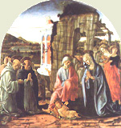
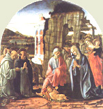

|  |
|---|
Textum Taurini 1951 editum
et automato translatum a Roberto Busa SJ in taenias magneticas
denuo recognovit Enrique Alarcón atque instruxit


|  |
|---|


[87342] Super Mt., cap. 6 l. 5 Postquam docuit nos de ieiunio, docet nos de eleemosyna, et dicit nolite thesaurizare vobis thesauros in terra. Sed videtur quod hoc non sit verum, quia regibus convenit thesaurizare. Sed dicendum, quod per thesauros intelligit abundantiam: et haec duplex, necessaria, et superflua: quod non est necessarium uni, est necessarium alteri. Et ideo cum rex multis indigeat, multa potest congregare. Uni simplici peccatum esset quod non est regi, quia indiget defendere regnum. Item prohibet his, qui videntur habere fiduciam in eis; unde I ad Tim. ult., 17: divitibus huius saeculi praecipe non sublime sapere, nec sperare in incerto divitiarum suarum; Baruch III, 16: ubi sunt principes gentium, qui argentum fabricant (sive thesaurizant) et aurum in quo confidunt homines? Item prohibet propter instabilitatem, quia cito amittuntur. Et ponit tria quae in divitiis habentur: metalla, et haec rubigine consumuntur; vestes, et haec tineis: et quaedam quae neutro modo, ut lapides pretiosi. Alia littera habet, nec commestura. Unde tripliciter destruuntur: aut ex principio intrinseco; et sic tinea quae innascitur vestibus, unde ubi aerugo et tinea: aut ex luxuria possidentis, ideo commestura: quandoque ab extraneis, unde dicit ubi fures non effodiunt. Si aliquis dicat quod haec non fiunt: dicendum, etsi non fiant, tamen saepe contigit; et si non contingit, possibile tamen est contingere: ideo arguit eas incertas esse. Item exponitur mystice. Aerugo apparet, tinea latet. Unde per aeruginem peccata corporalia, per tineam spiritualia. Item quaedam sunt peccata quae per seipsos faciunt homines, quaedam quae cum alio, et illa magis nocent. Dicit nec fures effodiunt. Vel dicit propter thesauros absconditos. Item per aeruginem superbi; Eccli. XII, 10: sicut aeramentum aeruginat nequitia eorum. Tinea corrodit vestimenta: et haec significat exteriora opera, quae per invidiam corroduntur; Prov. XXV, 20: sicut tinea vestimento, et vermis ligno, ita tristitia viri nocet cordi. Item fures per vanam gloriam. Fures, idest Daemones, qui cum non possint decipere homines per alia peccata, decipiunt per vanam gloriam. Item ponit stabilitatem divitiarum caelestium, ubi dicit thesaurizate vobis thesauros in caelo. Et hic Augustinus: thesaurizate vobis in caelo, non in aliquo loco corporali, sed in caelo, idest in spiritualibus bonis, idest abundantiam bonorum meritorum acquirite. Et dicit vobis, non Deo, quia nihil accrescit ei; Iob XXXV, 7: si iuste egeris, quid donabis ei, aut quid de manu tua accipiet? Docet autem dominus, unde hoc acquiritur, scilicet per eleemosynam, dicens Lc. c. XVIII, 22: vende omnia quae habes, et da pauperibus, et habebis thesaurum in caelo. Ibi enim, idest in caelo, nulla erit corruptio, quia corruptibile hoc induet incorruptionem, I Cor. c. XV, 53. Sequitur ubi est thesaurus tuus, ibi est et cor tuum. Docet contrariam conclusionem esse nocivam; et hoc quia cordis distractionem habet, quia si terrena diligis, ibi erit cor tuum; ubi enim amor, ibi oculus: oculi stultorum in finibus terrae. Sed quia pauci sunt qui considerent istud, ideo ostendit quantum sit periculum, per exemplum, lucerna corporis tui. Et hoc primo exponitur de oculo corporali; sicut enim lucerna dirigit gressus hominis, sic oculus. Unde si oculus tuus fuerit simplex, idest fortis ad videndum, corpus totum erit lucidum, idest dirigetur ad faciendum; si nequam, idest lippus et obscurus, totum corpus tuum tenebrosum erit, idest omnia opera tua fient ad modum tenebrarum. Si ergo lumen quod in te est, tenebrae sunt, ipsae tenebrae quantae erunt. Lumen quod in te est, est cor et mens. Si ergo ad terram dirigatur, et omnes sensus hominis ad terram dirigentur. Aliter exponitur de oculo spirituali: lumen enim inducit ad probandum, sicut hominis ratio; Prov. XX, 27: lucerna domini spiraculum hominis. Unde si oculus tuus fuerit simplex, sic quod ratio tua dirigatur in Deum, totum corpus tuum, idest omnia membra tua a peccato servabuntur: si non, involventur in operibus tenebrarum. Vel lucidum, in resurrectione sanctorum. Infra XIII, 43: tunc iusti fulgebunt sicut sol. Item, per oculum significatur intentio. Unde qui vult operari, aliquid intendit: unde si intentio tua sit lucida, idest ad Deum directa, totum corpus, idest operationes tuae erunt lucidae. Et hoc intelligitur in simpliciter bonis. Item, per oculum intelligitur fides; unde si simplex est, ita quod tendat in Deum, idest non vacillet etc.; ad Rom. XIV, 23: quod non est ex fide peccatum est. Item, per oculum significatur praelatus, qui est oculus subditorum. Unde cum praelati boni dirigunt plebes, tota populi congregatio lucet virtutibus et cetera. Eccli. X, 2: secundum iudicem populi, sic et ministri eius. Sequitur nemo potest duobus dominis servire et cetera. Quia dixerat quod thesaurizatio distrahit a Deo, ideo fugienda dicitur, quia non solum distrahit, sed alienat a Deo, quia nemo potest duobus dominis servire. Servus est qui ipsum quod est, alterius est; sed impossibile est quod animus feratur ad duos fines simul et semel (dico contrarios et dissentientes). Item nota quod quidam dominantur, ut subditi dirigantur; quidam autem, ut timeantur. Dominus et divitiae sunt contrarii domini; ideo non potestis Deo servire et mammonae. Sed nota quod aliud est habere divitias ut dominus, aliud ut servus: habet enim ut dominus, qui bene utitur illis, et inde facit fructum; sed ille est servus divitiarum, qui fructum inde non accipit; Eccle. V, 12: est aliud malum quod vidi sub sole: divitiae conservatae in malum domini sui. Omne autem in quo quis ponit finem suum, Deus suus est. Unde qui ponit finem suum in divitiis, Deus suus est, sicut dicitur de illis quorum Deus venter est, Phil. III, 19. Non potestis Deo servire et mammonae. Per mammonam potest intelligi Diabolus, qui praeest divitiis, et quasi Deus suus est; non quia possit dare, sed quia nititur divitiis homines decipere. Unde sicut est quidam spiritus fornicationis, sic est spiritus divitiarum. Aliter exponit Augustinus: nemo potest etc. scilicet contrariis. Sed Deus et Diabolus contrarii sunt. Quae conventio Christi ad Belial? II ad Cor. VI, 15, et in Lib. III Reg. c. XVIII, 21: quid claudicatis in duas partes? Et sequitur aut unum sustinebit, idest Diabolum. Et non dicit, diliget, quia Diabolus naturaliter diligi non potest. Deus naturaliter diligitur; Diabolus vero sustinetur, sicut ponit exemplum Augustinus: si aliquis cupit ancillam alicuius, servit ei amore ancillae, non ipsius: unde sustinet servitium domini propter ancillam; sic aliquis sustinet servitium Diaboli propter divitias. Item posset aliquis dicere: non pono finem in divitiis superfluis, sed necessariis. Et hoc prohibet dominus dicens ideo dico: ne solliciti sitis animae vestrae etc., non quia anima manducet, sed quia homini convenit, anima existente in eo. Vel animae, idest vitae animae. Et destruit hic error Euticharum, qui dicebant quod viri apostolici non debebant laborare. Sed hos reprehendit Paulus dicens II Thess. III, 10: qui non vult laborare, non manducet. Secundum ergo apostolum omnes tenentur. Sed quaero, aut est consilium, aut praeceptum. Si praeceptum, ergo omnes tenentur; si consilium, constat quod non omnes, quia ad consilia non tenentur nisi homines perfecti. Dico quod aliquid est praeceptum propter se, aliquid propter aliud: ut cum aliquis cepit crucem ut eat ultra mare, quod eat ultra mare tenetur, sed non potest ire nisi quaerat navem: unde quaerere navem est ei necessarium. Sic omnes tenentur ad conservandum vitam, ideo tenentur ad omnia quae faciunt ad istum finem; unde tenetur quilibet qui non habet unde conservet vitam, laborare ut conservet. Quid ergo dicit nolite solliciti esse? et cetera. Dicendum quod sollicitudo nominat providentiam cum studio; studium autem est vehemens applicatio animi. In ista autem vehementi applicatione potest esse peccatum, quando scilicet ponit animum ibi ut ad finem; et sic non debemus solliciti esse. Et ideo habetur Prov. XI, 7: expectatio sollicitorum peribit. Item potest esse quod mens intendat ad superflua acquirenda: et sic prohibetur, ut habetur Eccle. II, 1: dixi ego in corde: vadam, et affluam divitiis. Item sollicitudo potest esse, quia animus nimis sollicitatur ad temporalia acquirenda et necessaria: et de hoc habetur I ad Cor. II. Item quidam solliciti sunt cum quodam timore et desperatione, quia timent sibi deficere; et haec sollicitudo prohibetur. Sequitur nonne anima plus est quam esca? Docuit vitare sollicitudinem etiam necessariorum. Ponit rationes. Et primo talem: qui dedit maiora, dabit minora; sed Deus dedit animam et corpus; ergo qui dedit haec, servabit ea. Respicite volatilia caeli et cetera. Est haec alia ratio. Qui providet minoribus, providebit maioribus; sed Deus providet brutis; ergo et cetera. Primo deducit in cibo; secundo in vestimento. Docet ergo vitare sollicitudinem, dicens respice, idest considerate, volatilia caeli, quia ex his est sapientia; unde Iob XII, 7: interroga iumenta, et docebunt. Unde cum non habeant operationem ad acquirendum panem, attamen et cetera. Et tria dicit quoad tria quae requiruntur, scilicet serere, metere et congregare. Et quantum ad hoc tria dicit non serunt, neque metunt, neque congregant in horrea, et tamen pater vester caelestis pascit illa. Et dicit vester, non illorum, quia proprie pater est rationalis creaturae. Pascit ea, de quo in Psalmo CXLVI, 9: qui dat iumentis escam ipsorum et cetera. Nonne vos magis pluris estis illis? Idest maioris valoris? Homo enim omnibus praeponitur, ut habetur Gen. I, 26: faciamus hominem etc.; et sequitur, ut praesit piscibus maris, et volatilibus caeli. Et non est intelligendum quin apostolici viri non congregent, sed est intelligendum, quod Deus in congregatione a tribulatione liberat iustos, ut Danielem liberavit de lacu leonum, et tres pueros de fornace. Et non dico, quod existentes in tribulatione non debeant facere ut eruantur, quia praecepit dominus ut ex una civitate fugerent in aliam; sed est intelligendum, quod si faciant iusti quod in se est, quod liberabit eos dominus. Et ista exempla inducuntur ad sciendum quod dominus habet providentiam de omnibus, et dat unicuique secundum modum suum: avibus enim dedit quomodo necessaria acquirerent: dedit enim eis naturalem instinctum quo moverentur ad inquirendum unde viverent; ideo non debemus esse nos nimis solliciti. Quis autem vestrum cogitans potest adiicere ad staturam suam cubitum unum? Hic probat experimento, quod sicut providet avibus, ita et nobis: quaedam enim est pars animae quae subiacet rationi, ut motiva et sensitiva: quaedam quae non, ut augmentativa et nutritiva; et in his convenit homo cum brutis; et sicut providet brutis in augmento et nutrimento, sic et hominibus. Unde augmentum non est nobis ex nobis, sed ex Deo: unde de providentia Dei non debetis desperare. Considerate lilia agri et cetera. Instruxit nos de cibo, modo de vestimento: unde habentes alimenta, et quibus tegamur, his contenti sumus. Dicit ergo considerate lilia agri. Consideratio creaturarum debet esse ad laudem Dei; Ps. CXLII, 5: meditabor in omnibus operibus tuis et cetera. Non laborant, neque nent: ad vestimentum enim requiritur et opus virorum, et mulierum. Ideo ad amovendum opus virorum dicit non laborant; ad excludendum opus mulierum dicit neque nent. Dico enim quod neque Salomon in omni gloria sua coopertus est sicut unum ex istis, quia etsi ars imitetur naturam, non tamen consequitur. Unde numquam ars faceret colores ita puros, sicut in natura fiunt in floribus. Et dicit in gloria, quia inter notos apud Iudaeos Salomon gloriosior fuit; et tamen vestimentum non potuit ita adaptari ei sicut lilio. Item dicit Chrysostomus, quod lilium habet ista sine sollicitudine; Salomon autem saltem oportuit praecipere. Hieronymus retorquet ad resurrectionem, quia per lilia Angeli: et sicut Angeli non indigent vestimento, sic in resurrectione, qui reformabit corpus, providebit de vestimento. Si enim foenum agri et cetera. Hic commutat lilium in foenum, et argumentatur, quia si minoribus providet, providebit et nobis, qui potiores sumus quoad dignitatem substantiae, quia nos super ista sumus. Item quoad durationem, quia nos aeterni quoad animam, istud vero hodie est, et cras in clibanum mittitur et cetera. Is. XL, 7: exsiccatum est foenum, et cecidit flos. Item quoad finem: quia homo est propter beatitudinem, foenum vero propter usum hominis; Ps. CXLVI, 8: qui producit in montibus foenum et herbam servituti hominum et cetera. Et ad vilem usum, scilicet ut in clibanum mittatur quoad aliquas terras, ubi fit ignis de stipulis. Et si hoc sic vestit, idest dat necessarium ornatum, quanto magis vos modicae fidei? Vel sic: ut per foenum intelligantur infideles. Si ergo infidelibus, qui parati sunt ad clibanum ignis, multo magis electis. Nolite ergo solliciti esse et cetera. Hic concludit de utraque; et debes exponere sollicitudinem quatuor modis, ut superius dictum est. Vel sic. Si vivis in aliqua societate, non sis sollicitus de cibo ampliori, vel vestimentis amplioribus, immo esto in eis quasi unus ex eis. Haec enim omnia gentes inquirunt, quia ibi ponunt finem, quia credunt in eis esse beatitudinem. Et si hoc non credant, ponunt ibi magnam sollicitudinem, quia non credunt providentiam divinam. Et quia in ordinatione ad finem duo requiruntur, scilicet scientia et voluntas, dicit scit enim pater vester quia his omnibus indigetis. Unde, scit quia Deus: item, quia pater, vult. Quid ergo facietis? Dicit tria. Primum quaerite regnum Dei, tamquam finem, quia regnum est beatitudo. Regnum dicitur a regendo: tunc enim homo regitur, quando voluntati regentis subditur; hoc autem erit in caelo; unde Lc. XIV, 15: beatus qui manducat panem in regno Dei. Item iustitia perducit ad regnum; Prov. VIII, 20: in viis iustitiae ambulo, in medio semitarum iudicii, ut ditem diligentes me, et thesauros eorum repleam et cetera. Et ideo dicit et iustitiam eius. Et dicit eius, et non hominis, quia per iustitiam propriam nullus potest venire ad regnum. Tertio dicit et haec omnia adiicientur vobis, quasi, ultra forum haec adiicientur; Prov. c. X, 3: non affliget dominus fame animam iusti. Non ergo debeamus haec temporalia quaerere; et hoc verum est tamquam finem, aut mercedem. Unde non debemus evangelizare ut comedamus, sed potius e converso. Sed contra hoc obiicit Augustinus de Paulo, quia dicit: in fame, et siti, et nuditate laboravi. Et respondet quod sicut medicus aliquando abstrahit cibum et potum infirmo, ut curet eum, sic dominus, qui habet providere, permittit hominem pati, vel ut curetur, si curanda sunt aliqua, vel ut alii exemplum recipiant. Nolite ergo solliciti esse in crastinum. Sed hoc non videtur, quia nullus tenetur ad maiorem perfectionem, quam Christus et apostoli. Sed Christus habuit loculos: apostoli etiam congregabant. Augustinus exponit sic in crastinum, idest futurum, cogitando nimis de temporalibus, scilicet ibi finem ponendo, vel etiam superflua congregando. Vel, secundum Hieronymum nolite solliciti esse in crastinum, verum est de his quae ad Deum pertinent, faciendo quae in nobis sunt: non enim debemus dimittere laborare, si timeamus de pluvia, vel huiusmodi quae ad Deum pertinent. Vel sic. Nolite illam sollicitudinem quam debetis in futuro habere, accipere in praesenti, sicut tempore messium accipere curam de vindemiis non est competens. Quare? Sufficit enim diei malitia sua, idest tribulatio et angustia, quam habet homo in die, sufficere debet ei; non autem accipere eam quam debet habere in futuro et cetera.
[87343] Super Mt., cap. 7 l. 1 Implevit legem quoad praecepta et quoad promissa, nunc quoad iudicia. Primo ergo ordinat ut non sit temerarium iudicium, et dicit nolite iudicare etc., idest ex amaritudine odii; Amos VI, 13: convertisti iudicium in amaritudinem. Vel sic. Nolite, quantum ad ea quae nostro iudicio non sunt commissa. Domini est iudicium, nobis commisit iudicare de exterioribus, de interioribus vero sibi retinuit. Nolite ergo iudicare de eis; I Cor. IV, 5: nolite iudicare ante tempus; Ier. XVII, 9: pravum est cor hominis, et quis cognoscet illud? Nullus enim debet iudicare de aliquo quod sit malus homo: dubia enim in meliorem partem interpretanda sunt. Item iudicium debet esse congruum quantum ad personam iudicantis. Unde si es in eodem peccato, vel maiori, non debes iudicare; ad Rom. II, 1: in quo enim iudicas alterum, teipsum condemnas. Item non prohibetur praelatis, sed subditis: unde non debent iudicare nisi subditum. Sed Chrysostomus: nolite iudicare etc., idest nolite iudicare vosmetipsos vindicando. Unde si remittitis, non inde iudicabimini; immo ratione huius misericordiae misericordiam consequemini. Sequitur ratio in quo enim iudicio iudicaveritis, iudicabimini; idest, pro quo iudicio iudicaveritis, iudicabimini; Ps. VII, 17: convertetur dolor eius in caput eius et cetera. Et infra XXVI, 52: qui percusserit gladio, gladio peribit. Vel sic. Timere debent qui iudicant, ne hoc iudicio dominus permittat eos puniri, ut in Is. XXXIII, 1: vae tu qui praedaris, nonne et tu praedaberis? In qua mensura et cetera. Hic ponit rationem sub similitudine iudicii; iudex enim est sicut regula animata: cum enim vis aequare duo, defers ad regulam, et quod superabundat de uno, resecas; sic si aliquis habeat de alieno plusquam debeat habere, id resecat, et reddit unicuique quod suum est, idest pro ista mensura remetietur nobis. Sed obiicitur. Aliquis peccat temporaliter, et inde punitur aeternaliter; videtur quod non sit aequum iudicium. Dico quod in peccato duo sunt consideranda: duratio et offensa; et in offensa duo, scilicet aversio et conversio. Ex parte conversionis culpa finita est; ex parte aversionis, infinita, quia avertitur a Deo qui est infinitus. Cum ergo avertat se ab infinito, infinite puniri debet. Item ex parte durationis est duo considerare, scilicet actum et maculam. Actus momentaneus est, macula infinita, idest aeterna; ideo infinite, idest aeternaliter, puniri debet. Unde si a Daemonibus posset deseri macula, possent liberari a culpa et poena. Similiter a parte poenae est acerbitas, et haec est finita. Item duratio, et haec est infinita. Quid autem vides festucam in oculo fratris tui, et trabem in oculo tuo non vides? Hic dicit quod non debet esse iudicium inordinatum: inordinatum enim est quando ab aliquo incipit, non plene examinata causa, aut gravitate delicti. In iudicando enim duo sunt necessaria: cognitio causae et iudicium. De primo Iob XXIX, 16: causam quam nesciebam, diligentissime investigabam et cetera. Quid autem vides festucam, leve peccatum, in oculo, idest in conscientia fratris, trabem autem, idest grave peccatum, in oculo tuo non vides? Per trabem et festucam docet considerare quantitatem peccatorum: saepe enim qui gravia peccata committunt, reprehendunt eos qui levia, sicut contingit in iudicandis religiosis. Cum aliqui qui gravia faciunt, quae vident levia, in religiosis iudicant gravia; sed absorbentur illa sicut una gutta aquae in multitudine vini. Item contingit quod aliquis ex infirmitate peccet leviter, et aliquis iudex malus et male affectus, qui vellet punire illum ex odio, considerat festucam in oculo illius, non autem trabem in oculo suo. Quomodo ergo, idest qua fronte dicere potes: frater, sine eiiciam festucam de oculo tuo? Verecundari debes. Chrysostomus: quo animo diligit homo magis alium quam se? Si enim corrigis eum animo correctionis, prius corriges te; sed hoc facis odio, vel inani gloria; ideo et cetera. Sed quaeritur utrum qui in peccato mortali est, possit alium corrigere. Dico quod aut aliquando fuit in peccato, aut non: si numquam fuit in peccato, debet timere ne cadat, ideo invite debet corrigere; si aliquando in peccato fuit, cum mansuetudine corripere debet. Et ideo forte dominus permisit Petrum cadere, qui debebat esse pastor Ecclesiae, ut mitius se haberet cum peccatoribus; et de Christo dicit Paulus Hebr. IV, v. 15: non habemus pontificem qui non possit compati infirmitatibus nostris, tentatum per omnia pro similitudine absque peccato. Si autem subiacet peccato, aut est publicum, aut occultum: si occultum, aut ex infirmitate, quia displicet ei quod peccat; et sic corripere potest, quia quod corripit in alio, corripit in seipso; si ex malitia, numquam debet corripere. Si autem publicum, non debet arguere cum severitate, sed mansuete seipsum coniungere illi. Unde contra peccatores non est obiurgandum cum asperitate. Sequitur hypocrita, eiice primum trabem de oculo tuo. Incipit dominus arguendo sicut inferius contra servum nequam et cetera. Augustinus: ostendit quod intendit reprehendere eum qui assumit auctoritatem quae non est sua. Ps. XLIX, 16: peccatori autem dixit Deus: quare tu enarras iustitias meas, et assumis testamentum meum per os tuum? Tu vero odisti disciplinam et cetera. Eiice primum, ieiunando, orando, trabem de oculo tuo; et tunc poteris videre festucam in oculo fratris tui. Sequitur nolite sanctum dare canibus. In quo ostendit quod iudicium debet esse discretum. Notandum ergo quid per sanctum, et quid per margaritas. Augustinus: sancta sunt inviolata et immaculata conservanda; margaritaeque pretiosae non debent contemni. Per canes, qui lacerant dentibus, haeretici significantur; per porcos, qui conculcant pedibus, immundi. Sancta ergo dare canibus est sancta haereticis ministrare. Item si aliquid spirituale dicatur, et istud contemnitur, porcis datur. Vel per sancta, ecclesiastica sacramenta; per margaritas, mysteria veritatis. Canis est animal totaliter immundum; porcus partim immundus, partim non. Per canes, infideles; per porcos, mali fideles. Nolite ergo sanctum dare canibus, idest sacramenta dare infidelibus. Margaritae, idest sensus spirituales, non debent porcis dari; I Cor. II, 14: animalis homo non percipit ea quae Dei sunt, idest, ne forte contemnat; Prov. XXVII, 7: anima satiata conculcat favum. Unde conversi, ad peccata, dirumpunt, quia contemnunt, vel calumniam inferunt. Sed quare? Nonne Christus multa bona dixit infidelibus, et illi dirumpebant verba sua? Dico, quod hoc fecit propter bonos qui cum malis erant, qui inde proficiebant. Petite, et dabitur vobis. Dedit suam doctrinam, quae est completa et perfecta; hic docet qualiter possit impleri; ad hoc autem est necessaria oratio, et diligens attentio. Primo ergo docet petere; secundo dat securitatem ad impetrandum, ibi aut quis ex vobis et cetera. Dicit ergo petite. Et in hoc vide duas falsas opiniones amoveri. Primam scilicet superborum, qui putant suis viribus praecepta complere. Sed dicit, quod necesse est petere a Deo. Quod enim habes quod non accepisti? I Cor. IV, 7. Item amovet opinionem multorum qui dicunt, quod Deus non curat de orationibus, et quod non impetrarent si peterent; ideo addit et accipietis. Item addit quaerite, et invenietis. Et hoc exponitur, primo, ut in istis duobus nihil addatur, sed tantum exprimatur modus. Requiritur enim ad petendum sollicita attentio; item fervens devotio: et haec duo innuit, cum dicit quaerite, idest orate. Vel petite, sicut qui aliquid quaerunt, totam intentionem ibi ponunt. Unde ad illum pertinet quod sponsa dicit in Cant. III, 1: quaesivi quem dilexit anima mea. Et invenietis; Ps. XXVI, 4: unam petii a domino, hanc requiram. Item quaerite ad modum pulsantis: quia qui clamat ad ostium, si non exaudiatur, fortiter pulsat; Cant. VII, 11: veni, dilecte mi, egrediamur in agrum, commoremur in villis. Secundo, exponitur iuxta Augustinum referendo ad ea quae Christus dicit de seipso: ego sum via, veritas et vita: si vis per hanc viam ire, pete ab eo, ut vias tuas dirigat, dicens cum Psalmista, XXIV, 4: vias tuas, domine demonstra mihi, et semitas tuas edoce me. Si vis veritatem cognoscere, quaere, et invenies; sed non sufficit viam nosse, et veritatem quaerere, nisi veniamus ad vitam, idest ut in illam ingrediaris, pulsa; unde Ex. XV, 17: introduces eos, et plantabis in monte haereditatis tuae. Sed, iuxta eumdem, longe melius, ad instantissimam petitionem omnia ista referuntur. Item aliter exponitur referendo ad diversos actus, petite orando, quaerite studendo, pulsate operando. Omnis enim qui petit, accipit et cetera. Dicet aliquis, tu dicis, quod petamus. Credo quod dicitur istud sanctis hominibus, sed non sum de numero istorum: ideo dicit omnis qui petit, accipit et cetera. Sed videtur falsum esse, quia scribitur Io. c. IX, 31: scimus, quia peccatores Deus non audit. Et Augustinus solvit id. Si peccatores Deus non audit, quomodo dictum est de publicano quod dicebat: propitius esto, domine, mihi peccatori? Unde addit: peccatores non audit, scilicet volentes remanere in peccatis. Sed sciendum, quod oratio est meritoria et impetratoria; et potest esse meritoria, etiamsi non sit impetratoria. Sed quid est quod dicit quod omnis qui petit accipit? Videtur esse falsum, quia non semper accipitur quod petitur. Dico, quod in quatuor casibus petit homo, et non exauditur. Quia vel petit quod non expedit; infra XX, 22: nescitis quid petatis; ideo petenda sunt necessaria ad salutem. Item secundo, quia non bene petit; Iac. IV, 3: petitis, et non accipitis, eo quod non bene petatis; ideo petendum est pie, idest cum fide. Item humiliter; unde Lc. I, 48: respexit humilitatem ancillae suae. Item pie, idest devote. Item non aliquando auditur, cum pro alio oratur cuius merita contradicunt; Ier. XV, 1: si steterit Moyses et Samuel coram me, non est anima mea ad populum istum et cetera. Item non exauditur quia non perseverat; Lc. XVIII, 1: quia oportet semper orare, et perseveranter; quia dominus vult quod crescant vota. Item contingit, quod dominus exaudit; sed non videtur, quia dat dominus ad utilitatem, non ad voluntatem, ut accidit Paulo. Augustinus: bonus dominus qui saepe non tribuit quod petimus, ut tribuat quod mallemus: et quia nos vocamus eum patrem, tribuit nobis quod pater filio. Ideo subdit quis ex vobis homo quem si petierit filius suus panem, numquid lapidem porriget ei? Per panem intelligitur Christus; Io. VI, 51: ego sum panis vivus, qui de caelo descendi et cetera. Item panis est sacra doctrina; Eccli. XV, 3: cibabo illum pane vitae et intellectus. Item caritas; Is. c. XXX, 23: erit panis terrae uberrimus et pinguis. E contrario lapis est Diabolus; Iob XLI, 15: indurabitur cor eius quasi lapis. Item dicitur obduratio; unde dicitur Ez. XXXVI, 26: auferam a vobis cor lapideum, et dabo cor carneum. Item dicitur falsa doctrina; Iob c. XXVIII, 3: lapidem caliginis, et umbram mortis dividit torrens et cetera. Unde si quis petit a Deo, ut a patre, panem, idest Christum, non dabit Diabolum. Similiter si piscem. Piscis vivit in aquis, et est intelligentia in dogmatibus; Io. IV, 13: qui biberit ex hac aqua non sitiet amplius. Et ibid.: erit fons aquae vivae salientis in vitam aeternam. Item per aquas tribulationes: unde per pisces, viventes in aquis tribulationis. Vel piscis dicitur fides, quae latet sub aqua, idest custodia spiritus; sed per serpentem falsa doctrina haereticorum. Dicit ergo et si petierit piscem, non dabit ei serpentem? Alius Evangelista ponit tertium, scilicet ovum. Ita quod per panem caritas, per piscem fides, per ovum spes. Infert ergo si vos, cum sitis mali, nostis bona data dare filiis vestris; quanto magis pater vester, qui in caelis est, dabit bona petentibus se? Sed dicet aliquis: hoc dixit apostolis, qui non erant mali. Et solvit Chrysostomus: quia immo ad comparationem bonitatis divinae. Is. LXIV, v. 6: omnes iustitiae nostrae quasi pannus menstruatae. Hieronymus dicit: et si non omnes mali secundum actum, tamen omnes mali secundum pronitatem ad malum. Unde habetur Gen. VI, 5: quia cuncta cogitatio humani cordis intenta est ad malum omni tempore. Et Ier. XVI, 12: ecce enim unusquisque ambulat post pravitatem cordis sui. Augustinus: si ergo vos cum sitis mali: non dicitur, vos estis mali, sed cum sitis mali, daretis filiis temporalibus temporalia bona quae reputatis bona; multo magis ergo pater vester qui est summe bonus. Et hoc est quod sequitur quanto magis pater vester qui in caelis est, dabit bona petentibus se, si vultis accipere? Omnia ergo quaecumque vultis, ut faciant vobis homines, et vos facite illis; idest, aliis dimittite, si vultis ut dimittatur vobis. Aliqui apposuerunt omnia bona; sed non oportet, quia dicit vultis. Voluntas autem bonorum, et cupiditas malorum; ideo non est necessarium addere bona. Unde quod tibi vis fieri, aliis facias. Haec est enim lex et prophetae; et non dicit: tota lex et prophetae, sicut in primis praeceptis: ab illis enim duobus tota lex pendet et prophetae. Intrate per angustam portam. Ne forte crederet aliquis eo quod dixerat petite et accipietis, quod homo totum haberet a Deo sine operibus bonis; ideo docet quod hoc etiam fit per opera bona. Primo ergo ponit admonitionem; secundo rationem. Dicit ergo intrate, idest conemini ad intrandum. Augustinus exponit dupliciter. Christus porta est; Io. X, 9: ego sum ostium, quia sine ipso non venitur ad regnum. Haec porta est angusta per humilitatem quia humiliavit se usque ad mortem. Unde: verbum abbreviatum faciet dominus super terram. Unde intrate per angustam portam, idest per Christi humilitatem; Lc. ult., 26: oportuit enim Christum pati, et ita intrare in gloriam suam: et sic nos oportet. Unde per multas tribulationes oportet nos intrare in regnum Dei. Item, haec porta dicitur caritas; Ps. CXVII, v. 20: haec porta domini, iusti intrabunt in eam. Haec est arctata lege divina; et per hanc debemus intrare servando legem et praecepta. Deinde assignat rationem quia lata porta et spatiosa via est quae ducit ad perditionem. Et describit duas portas, unam latam, aliam strictam. Lata describitur, quia lata Diabolus, lata praesumptio superbiae; infra XVI, 18: portae Inferi non praevalebunt adversus eam. Haec porta lata est, quia latum est quod omnes recipit: non enim est quod eam repleat. Item haec porta dicitur iniquitas sive vitium: et haec est lata, quia multipliciter contingit: dicitur enim virtus uno modo, vitium autem multifarie; Osee IV, 2: maledictum, et mendacium, et homicidium, et furtum, et adulterium inundaverunt, et sanguis sanguinem tetigit et cetera. Item est via lata: et hoc est opus peccati; Ier. II, 18: quid tibi vis in via Aegypti? Item haec via est spatiosa, quia in sui principio videtur esse lata, sed post angustatur, quia exitus eius est ad perditionem, quia stipendia peccati mors est. Et multi sunt qui intrant per eam. Hic tangit numerum, quia ad litteram stultorum infinitus est numerus. Angusta est porta, et arcta via quae ducit ad vitam. Haec est contraria praecedenti; et haec est arcta, quia arctata secundum regulam legis, et est via contra viam; Prov. IV, 27: vias enim quae a dextris sunt, novit dominus; perversae vero sunt quae sunt a sinistris et cetera. Sed potest quaeri, quare via caritatis est arcta, quia videtur quod sit lata; Prov. IV, 11: ducam te per semitas aequitatis, quas cum ingressus fueris, non arctabuntur gressus tui. Via autem peccatorum est via stricta; unde Sap. V, 7: ambulavimus vias difficiles. Dicendum quod est via carnis et rationis. Via caritatis in via carnis est stricta via, in via rationis e contra. Et est exemplum de paedagogo: quia quanto plus diligit puerum, magis arctat gressus suos. Unde viae caritatis in via carnis arctantur, in via rationis e contrario; Ps. CXVIII, 120: confige timore tuo carnes meas. Et pauci sunt qui inveniunt eam. Hic facit mentionem de difficili et rara inventione in via spiritus: et in via carnis non. Et est ratio: quia via carnis est delectatio, et haec est in promptu; via vero spiritus est occulta; unde Ps. XXX, 20: quam magna multitudo dulcedinis tuae, domine, quam abscondisti timentibus te. Quia enim est in occulto, ideo et pauci inveniunt eam. Sed et aliqui inveniunt, et retrocedunt, de quibus dicitur Lucae IX, 62: nemo mittens manum suam ad aratrum, et aspiciens retro, aptus est regno Dei.
[87344] Super Mt., cap. 7 l. 2 Docet cautelas, a quibus cavendum sit. Describitur autem a professione, quia prophetae. Sed potest quaeri, de quibus prophetis, quia lex et prophetae usque ad Ioannem: unde in tempore illo non erant prophetae de Christo, quia in ipso finiuntur. Ideo dicendum quod prophetae sunt doctores in Ecclesia et praelati. Sed quid est quod dicit falsi? Falsi dicuntur qui non mittuntur. De talibus dicitur Ier. XXIII, 21: non mittebam eos, et ipsi currebant. Item falsi dicuntur qui mendacium dicunt; unde Ier. II, 8: prophetae eius prophetaverunt in Baal. Sic etiam multi fuerunt pseudoprophetae in populo: sicut et in nobis erunt magistri mendaces. Attendite, idest diligenter cavete, quia occulti sunt, et a laqueis occultis cavendum est. Unde malignitas eorum intrinsecus latet. Dicit ergo qui veniunt ad vos in vestimentis ovium et cetera. Oves sunt fideles: nos autem populus eius, et oves pascuae eius, Ps. XCIX, 3. Vestimenta autem eorum sunt ieiunium, eleemosynae, quibus se tegunt; II ad Tim. III, 5: habentes speciem pietatis, virtutem autem eius abnegantes. Sed sciendum, quod si lupi se tegant pellibus ovium, non tamen propter hoc ovis perdit pellem suam: sic licet illi mali bonis operibus tegantur, tamen multum boni proficiunt. Intrinsecus autem sunt lupi rapaces. Hoc principaliter exponitur de haereticis, ex consequenti de malis praelatis. Unde habetur super illud Io. X, 11: ego sum pastor bonus: dicitur quod quidam est pastor, qui gubernat, et regit; quidam lupus, qui perniciem intendit; quidam mercenarius qui commodum proprium quaerit. Unde pastor est amandus, lupus fugiendus, mercenarius tolerandus. Quod ergo dicitur, quod intrinsecus autem sunt lupi rapaces, intelligitur de his qui habent intentionem pervertendi plebem, et lupi sunt dicendi. Item mercenarii, scilicet mali Christiani, qui dispergunt malo exemplo, qui vitam habent malam; quantum ad effectum, habent modum lupi; Act. XX, 29: quoniam intrabunt post discessionem meam lupi rapaces in vos, non parcentes gregi et cetera. Et dicit intrinsecus, quia malam habent intentionem occidendi plebem. A fructibus eorum cognoscetis eos et cetera. A fructibus, idest operationibus. Sed videtur contra, quia habent vestes ovium; et vestes sunt opera. Ergo ab eis cognoscentur. Chrysostomus: fructus est confessio fidei. Unde si confitetur fidem, non est haereticus. Ad Eph. V, 9: fructus enim lucis est in omni bonitate, et iustitia, et veritate et cetera. Si autem exponatur de simulatoribus, tunc sic exponitur, quod per vestes exteriora opera. Unde ad Gal. V, 22: fructus autem spiritus est caritas, gaudium et pax et cetera. Sed quaeres: qualiter possunt cognosci? Dicendum quod potest vix aliquis hypocrita esse ita compositus, quin appareat aliquid malitiae vel verbo, vel facto: Prov. XXVII, 19: quomodo in aquis resplendent vultus prospicientium, sic corda hominum manifesta sunt prudentibus. Et Seneca: nemo potest diu fictam ferre personam. In duobus autem maxime manifestantur. In his quae subito agenda occurrunt, quia in his quae cum deliberatione quis facit, cavet sibi. Item in tribulationibus; Eccli. VI, 8: est amicus secundum tempus suum, et non permanebit in die tribulationis. Item manifestantur quando non possunt quod volunt, vel cum iam consecuti sunt. Unde principatus virum ostendit. Numquid colligunt de spinis uvas? Per uvas, ex quibus fit vinum, intelligitur spiritualis laetitia: quia vinum laetificat cor hominis, Ps. CIII, 15. Per ficus dulcedo ecclesiasticae pacis, quae est caritas. Haec non possunt nasci de tribulis, idest peccatoribus, quia spinas et tribulos germinabit tibi, Gen. c. III, 18. Et hoc probat per exemplum omnis arbor bona bonos fructus facit, mala autem arbor malos fructus facit. Ex hoc Manichaei assumpserunt duas naturas, scilicet bonam et malam. Sed hoc non est verum: quia videmus de mala creatione bonum fructum, et e converso. Unde ad hoc debes intelligere quod arbor est principium fructus. Sed principium est duplex. Principium naturae, et principium moris. Principium naturae est anima: et quicquid inde procedit naturaliter, totum bonum est. Principium autem moris est voluntas; ideo si voluntas fuerit bona, et opus bonum, cum habeat voluntatem bonam cum intentione bona; quia si vellet furari pro eleemosyna danda, etsi voluntas bona est, non tamen intentio est recta. Sed quid fiet de arbore mala? Omnis arbor, quae fructum non facit, excidetur: quia si non facit, vel si omittit facere cum possit, excidetur; unde Io. XV, 6: si quis in me non manserit, mittetur foras sicut palmes, et arescet, et colligent eum, et in ignem mittent, et ardet. Unde Lc. XIII, 7 dicitur de ficulnea, quam scilicet praecepit dominus succidi et tolli: tollatur impius ne videat gloriam Dei. Concludit ergo a fructibus eorum cognoscetis eos. Non omnes qui dicunt mihi, domine, domine et cetera. Posita doctrina, ostendit quod oporteat eam observare, quia nihil aliud sufficit ad salutem. Et circa mandata, sive doctrinam Dei quatuor sunt necessaria, sive laudabilia: ut ore confiteamur, confirmetur miraculis, et audiatur verbum Dei, et exequatur opere. De primo ad Rom. X, 10: corde creditur ad iustitiam; ore autem confessio fit ad salutem. De secundo, Marci ult., 20: domino cooperante, et sermonem confirmante sequentibus signis. Item ut audiatur; Io. VIII, 47: qui ex Deo est, verba Dei audit. Item, quarto, requiritur quod faciat; Iac. I, 22: estote factores verbi, et non auditores tantum. Unde vult ostendere quod tria sine quarto non proficiunt; unde dicit non omnis qui dicit mihi, domine, domine et cetera. Sed videtur hoc esse contrarium apostolo dicenti nemo potest dicere dominus Iesus, nisi in spiritu sancto. Sed qui habet spiritum sanctum, intrat in regnum caelorum. Solvit Augustinus, quod dicere dicitur multipliciter: communiter, et stricte, et proprie. Et stricte non est aliud nisi manifestare affectum et voluntatem; et sic dicitur ab apostolo: nemo potest dicere dominus Iesus, nisi in spiritu sancto et cetera. Et hoc nihil aliud est quam credere dominum, et obedire. Item communiter, idest ore qualitercumque nuntiare; de quo habetur Ier. XXVI, 13: populus hic labiis me honorat; cor autem eorum longe est a me. Vel sic. Non omnis qui dicit mihi, domine, domine et cetera. Ingeminat verbum hoc, domine, domine, ad significandum, quod duplex est confessio, scilicet vocis et laudis, quarum neutra sufficit. Ideo Is. XXVI, 13: populus hic labiis me honorat, cor autem eorum longe est a me. Quis ergo intrabit? Non qui dicit domine, domine, sed qui fecerit voluntatem patris mei et cetera. Io. III, 13: nemo ascendit in caelum, nisi qui descendit de caelo et cetera. Unde nemo potest ascendere, nisi descendat ut Christus, de quo dicitur Io. VI, 38: descendi de caelo, non ut faciam voluntatem meam, sed voluntatem eius qui misit me. Unde oportet facere voluntatem Dei; I Thess. IV, 3: haec est enim voluntas Dei sanctificatio vestra. Unde dicebat David Ps. CXLII, 10: doce me facere voluntatem tuam. Et etiam sicut dominus docuit orare, fiat voluntas tua. Sed notandum, quod per hoc quod dicit regnum, tangitur remuneratio aeterna; unde dicit intrabit. Illud enim regnum in bonis spiritualibus est, non in bonis exterioribus; ideo dicit intrabit. Ideo Cant. I, 4: introduxit me rex in cellaria sua. Item dicit caelorum, quia licet aliquis hic divitias habeat, vel honores, hoc totum est propter illud. Unde in sublimibus erit remuneratio. Sed posset aliquis dicere, quod facere miracula sufficit ad salutem. Istud excludit, quia multi dicent mihi in illa die: domine, domine, nonne in nomine tuo prophetavimus? et cetera. Et dicit multi, significans eos qui ab unitate recedunt, quia sunt sub multitudine: quia stultorum infinitus est numerus, Eccle. I, v. 15. Item introducit hoc ad notitiam eius quod dixerat, quod omnis arbor quae fructum non facit, abscindetur. Et non dixerat a quo; ideo dixit mihi, tamquam iudici constituto; quia omne iudicium dedit pater filio, Io. V, v. 22. Item dicit in illa die. Dies terminum nominat, sed non secundum temporis qualitatem, quia dies iudicii aliquando nox dicitur. Aliquando autem dies dicitur, aliquando nox: quia incertum est quando veniet. Unde infra XXV, 6: media nocte clamor factus est, ecce sponsus venit, exite obviam ei. Diem dicit apostolus I ad Cor. IV, 3. Et in Ps. XXXVI, v. 6: et educet quasi lumen iustitiam meam, et iudicium meum tamquam meridiem. Domine, domine. Multiplicat ad significandum maiorem confusionem et timorem; Sap. v. 2: turbabuntur enim timore horribili. Nonne in nomine tuo Daemonia eiecimus? Haec est potestas supernaturalis; Iob XLI, 24: non enim est potestas super terram quae huic (scilicet potestati Diaboli) valeat comparari. Sed tunc quaeritur, qualiter qui eiiciunt Daemonia, fiunt reprobi. Respondet Chrysostomus, quod isti mentiuntur. Alia responsio est quod aliquando fuerunt boni, et fecerunt miracula; post facti sunt mali. Sed hoc non potest stare, quia dicit dominus, numquam novi vos. Alio modo dicendum, quod dicunt in nomine tuo, non in nomine spiritus sancti. Quidam enim in virtute spiritus sancti, quidam non. Ut enim habetur Ier. II, 8, quidam prophetaverunt in nomine Baal. Item quidam per artes magicas. Sed quaeritur qualiter Daemones faciunt miracula. Dico quod non possunt; sed faciunt aliqua quae videntur miracula, non tamen sunt miracula. Illa dicuntur miracula, quando effectus patent, causae latent. Unde potest esse aliquod mirum apud quosdam minus scientes, quod non est apud sapientes, ut patet de eclipsi. Unde cum Daemones, veriori modo cognoscant naturalia, possunt facere quae nobis videntur miracula. Aliter secundum Hieronymum. Quia secundum quod dicit, inter dona spiritus sancti quaedam sunt quae gratis data sunt: sola caritas est, quae distinguit inter filios Dei et filios Diaboli; I Cor. XII, 7: unicuique datur manifestatio ad utilitatem, vel ad profectum bonitatis eius, vel Ecclesiae, ut fides quam praedicat manifestetur. Et sic etiam aliquando praelatus male vivens potest miracula facere. Et tunc confitebor illis, quia non novi vos, idest non approbavi, nec etiam cum faciebatis miracula; II Tim. II, 19: novit dominus qui sunt eius. Dicit non novi vos, cum dicit discedite a me, quia numquam approbati estis. Omnis ergo qui audit et cetera. Ostendit quod sine operibus nihil sufficit, nec etiam auditus verbi Dei; quia auditus ordinatur ad fidem. Rom. X, 17: fides autem ex auditu. Auditus enim non sufficit. Et hoc dupliciter manifestat, quia proponit eventum eius qui audit et facit, et eius qui audit et non facit, sub similitudine. Et primo facit tria. Primo ponit aedificationem; secundo impugnationem, ibi et descendit pluvia etc.; tertio immutabilitatem, ibi et non cecidit et cetera. Dicit ergo quod non sufficit auditus; auditus enim est necessarius; Io. VIII, v. 47: quia qui ex Deo est, verba Dei audit. Sed non sufficit; Rom. II, 13: non enim auditores verbi sed factores iustificabuntur. Item bene dicit verba mea haec: quia quicquid ad salutem pertinet, ibi continetur. Unde qui audit verba haec, et facit, assimilabitur viro sapienti. Et non dicit quod sit sapiens, sed assimilabitur. Et potest haec similitudo intelligi de corporali aedificatore: et sic plana est littera. Vel potest intelligi spiritualiter: et sic iste vir est Christus. Eccle. VII, 29: virum unum de mille repperi. Domus Christi est Ecclesia: scit enim qualiter oportet aedificare. Unde de ipso Prov. IX, 1: sapientia aedificavit sibi domum. Et Prov. XIV, 1: mulier sapiens aedificat domum suam. Supra petram; I Cor. X, 1: petra autem erat Christus. Unde Christus super se aedificat: ipse enim est fundamentum; unde I ad Cor. III, 11: fundamentum aliud nemo ponere potest praeter id quod positum est, quod est Christus Iesus. Hoc enim est fundamentum veritatis aeternae. Hoc autem est omnino immobile; Ps. CXXIV, 4: qui confidunt in domino sicut mons Sion. Sequitur impugnatio huius domus et descendit pluvia. Pluvia doctrina intelligitur: et est bona, et mala pluvia. Ergo quae irruit, est mala doctrina; Gen. XIX, 24: dominus pluit super Sodomam sulphur et ignem. Item flumina sunt bona, et non bona; Is. XVIII, v. 2: diripuerunt flumina terram eius; et per hoc significantur sapientes qui reputant se sapientes esse. Ista flumina ex pluviis generantur. Per ventos Daemones. Unde in canonica Iudae, 12: nubes sine aqua, quae a ventis circumferuntur et cetera. Et irruerunt in domum, idest in Ecclesiam, et non cecidit. Non enim dirumpentur funiculi eius in aeternum, Is. c. XXXIII, 20. Et quare? Fundata erat super petram, idest Christum. Consequenter ponit similitudinem, ponens eventum illius qui audit et non facit: et circa hoc primo ponit aedificationem; secundo impugnationem, ibi et descendit pluvia etc.; tertio ruinam, ibi et cecidit et cetera. Dicit: et omnis qui audit verba mea haec, et non facit ea, similis erit viro stulto, qui cecidit a lumine sapientiae. Unde Eccle. IV, v. 13: melior est servus sapiens, quam senex infatuatus. Item stultus est Diabolus. Domus quam aedificat, est congregatio infidelium; unde Ps. LXXIII, 30: repletae sunt terrae domibus iniquitatum. Et iste super arenam. Per arenam infideles qui infructuosi sunt. Item propter numerositatem: stultorum enim infinitus est numerus, Eccle. I, 15. Item arena non adhaeret, sic isti semper in iurgio sunt. Fundat ergo super arenam, idest finem, qui est quasi fundamentum, scilicet intentionem suam firmat super bonum temporale. Descendit pluvia, idest bona doctrina, venerunt flumina, idest sacri doctores, flaverunt venti, idest Angeli; Ps. CIII, 4: qui facit Angelos suos spiritus. Et irruerunt in domum illam, et cecidit. Apoc. XIV, 8: cecidit, cecidit Babylon, scilicet per praedicationem. Et fuit magna eius ruina. Si velimus adaptare similitudinem, dicendum est sic, quod homo debet aedificare sicut Christus. Et hoc docet apostolus I Cor. c. III, 10: unusquisque videat quomodo superaedificet. Aliquis enim aedificat habitaculum Dei; quidam e contrario, ut infra, et, ut habetur I Cor. III, 12, quidam super stipulam aedificant. Fundamentum enim est illud super quod ponit aliquis intentionem suam. Quidam enim audiunt ut sciant, et hi aedificant super intellectum: et haec est aedificatio super arenam; unde Iac. I, 23: qui audit, et non facit, similis est viro consideranti vultum nativitatis suae in speculo. Unde super mutabile aedificant. Quidam autem audit ut faciat et diligat; et hic aedificat super petram, quia super firmum et stabile; Prov. XXII, 6: adolescens iuxta viam suam, etiam cum senuerit, non recedet ab illa. Istud enim fundamentum est super caritatem. Apostolus Rom. VIII, 35: quis nos separabit a caritate Christi? Sed hic potest quaeri quare fundamentum quod est in intellectu, instabile, et non firmum est, sed quod in affectu. Ratio est quia intellectus est universalium: non enim potest scire multa nisi in universali; ideo vagando circa universale non est stabilitas; sed operationes et affectus sunt circa particularia, et circa consuetudinem bonam; ideo si tentatio veniat, adhaeret ei quod consuevit, scilicet operationi bonae: ideo resistit. Sed tunc quaeritur quid intelligat per pluviam. Ideo dicendum quod Diabolus numquam tentat primo in maioribus, sed primo in minoribus, deinde procedit ad maiora. Unde per pluviam cogitatio prava. Tentat ergo in cogitatione prava; et si consentit, tentat postea in maiori, et sic postea augmentatur. Et ex istis fiunt flumina: et post totis viribus irruit, et necessario cadit; Eccli. XIX, 1: qui spernit modica, paulatim decidit. Vel sic. Pluvia, tentatio carnis; flumina, tentatio mundi; venti, tentatio Diaboli. Vel secundum Augustinum pluvia superstitiosa doctrina, cui inhaerens gravissime cadit, et haec facta est ruina magna; sed non magna quando titubat, et non cadit, quia cum accidit tentatio, timet et dolet. Quidam vero totaliter; Ps. CXXXVI, 7: exinanite, exinanite usque ad fundamentum in ea. Vel dicitur ruina magna, quia impoenitens est cor; Iob XXI, 13: ducunt in bonis dies suos, et in puncto ad Inferna descendunt. Et factum est cum consummasset Iesus verba haec, mirabantur turbae. Ponitur effectus. Erat enim triplex modus hominum qui sequebantur dominum Iesum. Quidam enim mirabantur et scandalizabantur, ut Pharisaei, de quibus inf. XV. Quidam mirabantur, sed non scandalizabantur, ut turbae. Quidam vero, ut perfecti, non mirabantur. Sed quaerendum de hoc quod dicit turbae, quia non erant ibi turbae. Et potest dici quod factus est sermo et turbae, et discipulis; sed in monte sub cacumine montis erat quaedam planities. Discipuli ergo erant in cacumine cum Christo; sed turbae in planitie. Vel potest dici quod primo discipulis, et post turbis. Vel potest dici: secutae sunt eum turbae discipulorum. Sed quae erat ratio admirationis? Quia erat docens tamquam potestatem habens. Unde in eo impletur quod dicitur Eccle. c. VIII, 4: sermo illius potestate plenus est. Unde quasi potestatem habens, quia ut dominus loquebatur, vel sicut legislator. Vel sicut potestatem habens, cum virtute penetrandi cor. Unde dicitur Ps. LXVII, 34: dabit voci suae vocem virtutis. Vel cum potestate faciendi miracula: quia quod dicebat miraculis confirmabat. Augustinus dicit, quod omnia quae dicuntur in hoc sermone debent reduci ad septem dona, et ad beatitudines, quia quod primo dicitur non occides, hoc pertinet ad donum timoris, et ad beatitudinem paupertatis. Istud autem quo sequitur. Esto consentiens adversario, pertinet ad donum pietatis, per quod impletur mansuetudo. Illud autem non moechaberis etc. pertinet ad donum scientiae, per quam impletur beatitudo luctus. Istud de sustinendo, ad donum fortitudinis, quo impletur, et ad beatitudinem beati qui esuriunt et sitiunt iustitiam et cetera. Illud autem quod dicitur diligite inimicos vestros, ad donum consilii, quo impletur beatitudo misericordiae. Per illud vero quod sequitur in VI cap., de non habendo sollicitudinem, usque ad intrate per angustam portam, intendit mundare cor: unde pertinet ad donum intelligentiae, et ad beatitudinem quae est munditia cordis; unde beati mundo corde, quoniam ipsi Deum videbunt. Quicquid autem sequitur, ad donum sapientiae.
[87345] Super Mt., cap. 8 l. 1 Posset videri quod ex iactantia loqueretur dominus; ideo auctoritatem suam signis commendat. Primo ergo ponuntur signa, quibus liberantur homines a corporalibus periculis; secundo a spiritualibus, cap. IX. Circa primum duo facit. Primo ponit signa quibus homines liberantur a periculis provenientibus ex intrinsecis causis; secundo ex extrinsecis, ut tempestate, ibi et ascendente eo in naviculam. Commendat auctoritatem, quia statim, quia absens, quia perfecte, quia multos. Quia statim, in leproso; quia absens, in servo centurionis; quia perfecte, in socru Petri; quia multos, in aliis multis. Circa primum tria. Primo testes miraculi introducuntur; secundo infirmus inducitur, ibi et ecce leprosus; tertio auxilium praebetur, ibi et extendens Iesus manum, tetigit eum dicens volo, mundare. Dicit ergo cum autem descendisset Iesus de monte et cetera. Mons iste est caelum; Ps. LXVII, 17: mons in quo beneplacitum est Deo habitare in eo. Unde postquam descendit de caelo secutae sunt eum turbae; Phil. II, v. 7: exinanivit semetipsum formam servi accipiens, et habitu inventus ut homo et cetera. Vel per montem altitudo doctrinae; Ps. XXXV, 7: iustitia tua sicut montes Dei. Cum esset in monte, idest cum altam duxit vitam, secuti sunt eum discipuli sui. Et cum descendisset, secutae sunt eum turbae; I ad Cor. III, 1: non potui vobis loqui quasi spiritualibus. Secundo, persona infirmi introducitur: et ponuntur duo. Primo infirmitas ostenditur; secundo sollicitudo adhibetur. Infirmitas, quia est leprosus: et hoc significat spirituales infirmitates. Quaedam enim infirmitates sunt intra latentes, ut febres: quaedam vero, etsi sunt ab intra, eius tamen effectus patet exterius, ut lepra. Ille ergo leprosus est, cuius mala voluntas manifestatur per malum actum; Is. LIII, 4: et nos putavimus eum quasi leprosum. Sed quaestio est, quia in Luca habetur, quod cum veniret Capharnaum mundavit leprosum. Dicendum, quod Matthaeus sequitur historiam, quia cum iret in Capharnaum, in via apparuit ei leprosus. Sequitur sollicitudo, quia primo venit; secundo adoravit; unde dicit ecce leprosus. Sic peccator per fidem venit, sed adorat per humilitatem; Ps. XXXIII, 19: humiles spiritu salvabit Deus. Item confitetur Christi potentiam, cum dicit domine, si vis, potes me mundare. Item vocat dominum. Si dominus est, potest salvare. In Ps. XCIX, 3: scitote, quoniam dominus ipse est Deus. Item confidit de Dei misericordia. Misericordem non oportet petere, sed solum indigentiam ei monstrare; sic iste domine, si vis, potes me mundare. Unde Ps. XXXVII, 10: domine, ante te omne desiderium meum, et gemitus meus a te non est absconditus. Item ostendit sapientiam Christi, quia non petit nisi voluntatem suam: quia melius scit, quid opus sit tibi quam ipse. Ideo sapientiae Christi dimisit. Deinde tangit auxilium. Primo sanat. Secundo instruit. Primo tangitur opus; secundo effectus, ibi et confestim mundata est lepra eius. Christus tria facit curando. Extendit manum, quando auxilium impendit; Ps. CXLIII, v. 7: emitte manum tuam de alto, et eripe me. Aliquando extendit manum, sed non tangit; Is. LXV, 2: expandi manus meas tota die ad populum incredulum et cetera. Aliquando tangit; et hoc est quando immutat, ut in Ps. CXLIII, v. 5: tange montes (idest superbos), et fumigabunt, per compunctionem. Sed quare tetigit, cum esset prohibitum in lege? Hoc fecit ut monstraret se esse supra legem. Legitur de Eliseo quod non tetigit Naaman, sed misit eum ad Iordanem. Unde iste qui tetigit, videtur solvere legem. Sed secundum veritatem non solvit, quia prohibitum fuit propter contagionem. Quia igitur infici non potuit, tangere potuit. Item tetigit, ut humanitatem monstraret; quia non sufficit peccatori subdi Deo quantum ad divinitatem, sed et quantum ad humanitatem. Volo, mundare. Hieronymus dicit, quod quidam male exponunt. Volunt enim quod ly mundare sit infiniti modi; sed hoc non est verum: immo quia dixerat, si vis, respondit, volo, et ly mundare est imperativi modi. Unde imperavit qui dixit, et facta sunt. Item tetigit, ut daret doctrinam de virtute quae est in sacramentis, quia non solum requiritur tactus, sed verba: quia cum accedit verbum ad elementum, fit sacramentum. Et per hoc exclusit tres errores, quando tetigit. Ostendit enim corpus verum contra Manichaeos. Quod dicit volo, dicit contra Apollinarem. Per hoc quod est mundare, ostendit Deum verum contra Photinum. Et sequitur effectus et confestim mundata est lepra eius, et curatus est. Chrysostomus dicit, quod citius quam posset dici hoc verbum, mundare: quia istud in tempore dicitur, illud vero in instanti. Et ait illi. Hic instruit eum: parum enim esset sanare nisi instrueret eum; Ps. XXXI, 8: intellectum tibi dabo, et instruam te. Primo iniungit ei taciturnitatem nemini dixeris. Chrysostomus: quia sciebat quod Iudaei calumniabantur de factis suis, ideo dixit nemini dixeris. Vel aliter. Quia hoc dixit ad exemplum. Quia enim supra docuerat abscondere opera bona; ideo dat exemplum, quod nullus in bonis operibus gloriari debet. Sequitur sed vade, ostende te sacerdotibus. Et quare hoc dicit? Quia tetigerat leprosum, ne penitus videretur fractor legum. Ad sacerdotes mittitur, ut habetur Lev. XIV, 2. Et offer munus tuum et cetera. Quare? Quia hoc erat praeceptum legis, quod sanatus a lepra offerret duos pullos turturum. Sed secundum hoc videtur, quod cum dominus praeceperit, adhuc sit tenendum. Dicendum quod figurae non debebant cessare, donec penitus veritas manifestaretur. Hoc autem non fuit nisi post resurrectionem. In testimonium illis: et hoc exponitur dupliciter. Moyses praecepit in testimonium illis. Et per hoc docet quod praecepta Moysi erant in testimonium Christi, sicut habetur Io. V, 46: si crederetis Moysi, crederetis forsitan et mihi. Vel aliter. In testimonium illis, idest, contra illos, qui viderunt miracula, et non crediderunt. Vel in testimonium illis, scilicet curationis tuae. Quia cum receperint oblationem tuam, non poterunt negare. Item secundum mysticum intellectum tria a Christo iniunguntur. Ut erubescat de peccato; contra illos de quibus dicitur Is. III, 9: peccatum suum quasi Sodoma praedicaverunt, nec absconderunt. Unde Eccli. IV, v. 25: est confusio adducens peccatum, et est confusio adducens gloriam et gratiam. Item debet ostendere sacerdoti confitendo. Iac. V, v. 16: confitemini alterutrum peccata vestra. Et hic videtur dominus iniungere confessionem. Et confestim sanatus est: quia in ipsa contritione quando dolet et proponit confiteri et abstinere, remittitur peccatum, iuxta illud Ps. XXXI, 5: dixi: confitebor adversum me iniustitiam meam, et tu remisisti iniquitatem peccati mei. Item iniungitur satisfactio, cum dicit offer munus tuum. Item docet observare mandata, cum dicit sicut praecepit Moyses.
[87346] Super Mt., cap. 8 l. 2 Cum autem introisset Capharnaum. Hic ostenditur virtus Christi ex absentia. Et primo designatur pietas centurionis cum fide; secundo humilitas, ibi et respondens centurio et cetera. Circa primum duo, quia designatur primo pietas centurionis; secundo ostenditur Christi benignitas. Et circa primum tria. Primo locus ponitur; secundo oratio describitur, ibi domine, puer meus iacet in domo paralyticus; tertio exauditio ponitur, ibi et ait illi Iesus. Locus primo cum introisset Capharnaum, qui interpretatur villa pinguedinis, scilicet villa gentium, quae pinguedine devotionis defluxit. Ps. LXII, 6: sicut adipe et pinguedine repleatur anima mea. Deinde accessit. Sed hic potest quaeri: quia Lucas posuit, quod misit sacerdotes. Augustinus dicit quod non personaliter venit, sed quod dicitur quod venit, totum refertur ad intentionem: quia ille facit rem cuius auctoritate fit. Chrysostomus aliter, quia dicit quod iste constitutus erat super centum milites, et ideo erat praepositus. Unde Iudaei volentes adulari propter benevolentiam habendam, dixerunt ei: domine, nos ibimus, et impetrabimus vobis. Tunc ut satisfaceret eis, permisit eos abire; sed post ipse secutus est eos. Istud miraculum differt a primo in tribus. Quia primum Iudaeo fuit factum, secundum gentili; per quod datur intelligi, quod non solum pro Iudaeis, sed pro gentibus Christus venit. Item in primo Iudaeus per se accessit, iste non. Et hoc quia miseretur dominus aliquorum per propriam devotionem, quorumdam per aliorum intercessionem. Item iste centurio potest intelligi aliquis Angelus praesidens ibi ad salutem gentium, vel primitiae gentium. Item ille fuit leprosus, in quo immunditia quiescit. Paralytici autem sunt qui non possunt membra movere. Leprosi sunt intemperati, et paralytici sunt incontinentes. Et sunt paralytici, qui ex infirmitate peccant; leprosi, qui ex certa malitia. Per centurionem potest intelligi mens. Ad Eph. IV, v. 23: renovamini spiritu mentis vestrae. Et iste dicit domine, puer meus, idest servus meus. Et in hoc ostenditur benignitas centurionis, quia ita pro servo orat: unde facit illud quod dicitur in Eccli. XXXIII, v. 31: si fuerit tibi servus fidelis, sit tibi sicut anima tua. Et iste servus dicitur inferior pars animae. Dicit ergo quod iacet et male torquetur; et loquitur ex affectu, quia quando aliquis diligit aliquem, reputat parvam aegritudinem valde magnam. Iacet ergo inferior pars animae, quando non potest se erigere, Gal. V, 17: caro concupiscit adversus spiritum: et torquetur. Homines lascivi gaudent: laetantur enim cum male fecerint, et exultant in rebus pessimis. Sed isti torquentur, quia cum peccent ex infirmitate, cum ceciderint, dolent. Et ita torquentur ex dolore. Et ait illi Iesus: ego veniam et curabo eum; idest non loquar. Unde nota quod nullus auderet tantum petere, quantum dominus dare. Dicit veniam, et curabo eum, quia praesentia Christi est causa salutis. Sed notandum quod ad filium reguli noluit ire, et ad servum ivit; quod esset contra multos qui nolunt visitare nisi magnos, contra illud Eccli. IV, 7: congregationi pauperum affabilem te facito. Sequitur et respondens centurio. Posita fuit cum fide benignitas centurionis; nunc tangitur humilitas cum fide. Primo ergo ponitur humilitas et fides; secundo benignitas Christi, ibi audiens autem Iesus miratus est. Circa primum tria facit. Primo confitetur suam indignitatem, ibi sed tantum dic verbo: secundo Christi potestatem; deinde inducit similitudinem, ibi nam et ego homo sum sub potestate constitutus. Obtulerat se dominus benignum. Sed quia iste gentilis erat, reputavit se indignum, dicens domine, non sum dignus et cetera. Sic etiam Petrus dixit, Lc. V, 8: recede a me, quia homo peccator sum. Et dicit Augustinus, quod confitendo se indignum, reddidit se dignum. Et sicut iste dicit, sic et nos debemus dicere: non sum dignus ut intres in corpus meum. Deinde tangitur fides centurionis confitentis potestatem Christi: dic tantum verbo, et sanabitur puer meus; quia, ut habetur Sap. XVI, 12, non herba, non malagma sanavit eos, sed sermo tuus, domine. Et in Ps. CVI, 20: misit verbum suum, et sanavit eos. Deinde inducit similitudinem, et probat a minori. Et describit ordinem primo; secundo potestatem, et dicit nam et ego homo sum sub potestate constitutus et cetera. Et tangitur ordo: quia quidam sunt superiores, ita quod non habent superiorem se; quidam sunt superiores, ita quod habent superiorem se; quidam vero inferiores qui non habent inferiores se; quidam ergo sunt medii; et de istis erat iste, quia erat sub tribuno, sed habebat sub se milites. Habebat enim sub se quosdam quorum erat gubernator; et isti erant milites; unde dicit et dico uni: vade, et vadit; et alii: veni, et venit; in quo commendatur nobis obedientia. Ad Hebr. XIII, 17: obedite praepositis vestris, et subiacete eis. Item alios habebat servos quibus cibaria ministrabat. Eccli. XXXIII, 25: cibaria, et virga, et onus asino; panis, et disciplina; et opus servo. Et servo meo: fac hoc, et facit. Unde vult arguere a minori: quia si ego qui sum in potestate constitutus, haec possum, quanto magis dominus dominantium potest et cetera. Sed videndum quod rationales creaturae sunt liberae, et sunt sicut milites; Iob c. XXV, 3: numquid est numerus militum eius? Et ideo dicitur dominus exercituum. Sed creatura irrationalis habet subiectionem servilem, quia non habet liberi arbitrii facultatem. Vult ergo dicere: quia tibi natura obedit, dic naturae, et obedit tibi, quia sermo tuus iudicio plenus est. Videndum est, quod istud duplex dominium invenitur in anima: anima enim praesidet corpori; ratio vero irascibili et concupiscibili. Prima est dominativa potestas, quia ad imperium animae movetur corpus; secunda praeest aliis quadam imperativa potestate, et dominativa, vel regali: unde habent aliquid de motu suo. Et haec sunt quasi milites; Iac. c. IV, 1: unde bella et lites in vobis? Nonne ex concupiscentiis, quae militant in membris vestris? I Petr. II, 11: hortamur vos abstinere a carnalibus desideriis, quae militant adversus animam. Debemus ergo dicere huic vade, idest malis moribus; et veni, scilicet bonis moribus, et servo huic, fac hoc. Unde corpus debemus operi applicare, ut sicut exhibuimus membra nostra servire immunditiae et iniquitati ad iniquitatem, ita nunc exhibeamus membra nostra servire iustitiae in sanctificationem, ut habetur Rom. VI, 19. Audiens autem Iesus miratus est et cetera. Hic tangitur Christi benignitas. Sed quid est quod dicit admiratus est? Quia admiratio non cadit in Deo; quia non fit nisi ex ignorantia causae, quae non potest esse in Deo. Item est apprehensio magnitudinis effectus, quod fit ex imaginatione et phantasia alicuius effectus magni, et sic potest cadere etiam in Christo: unde admiratus est, idest magnum reputavit, et hoc turbis sequentibus ostendit. Et commendavit eum, unde sequentibus se dixit: non inveni tantam fidem in Israel. Sed quid est? Nonne in Abraham, Isaac et Iacob fuit maior fides? Dicendum, quod immo; sed quod hic dicitur, intelligitur pro tempore illo. Sed tunc est quaestio de apostolis, et Martha, et Maria. Et dicendum quod iste maioris fidei erat, quia nullum praeambulum viderat, sicut isti qui miracula viderant. Item Petrus venit ad vocem Andreae, Andreas ad vocem Ioannis. Item in verbo Marthae fuit aliquid dubietatis, quia dixit: domine, si fuisses hic, frater meus non fuisset mortuus; quasi absens non posset. Sed in verbo istius nihil fuit dubietatis. Aliter exponit Chrysostomus. Quia magnum et parvum aliquando dicuntur non absolute, sed in comparatione, sicut dicuntur in domo multi, in theatro pauci. Unde non inveni tantam fidem in Israel, scilicet per comparationem illius gentilis. Deut. XXVIII, 43: advena qui tecum moratur in terra, ascendet super te, eritque sublimior. Dico autem vobis. Occasione huius agit de comparatione Iudaeorum et gentilium; et primo de vocatione gentilium; secundo de reprobatione Iudaeorum. Dico quod multi ab oriente et occidente venient et cetera. Et dicitur istud in comparatione, quia multi sunt vocati, pauci vero electi; infra XX, 16. Ab oriente et occidente, ita quod per hoc totus mundus intelligatur. Vel ab oriente, in tempore prosperitatis; et occidente, scilicet in tempore adversitatis. Vel ab oriente, in tempore iuventutis; et occidente, in tempore senectutis. Et recumbent. Iste recubitus opulentia est rerum spiritualium, scilicet in contemplatione. Lc. XXII, 29: ecce dispono vobis regnum, ut edatis et bibatis super mensam meam in regno meo. Et Is. LXV, v. 13: ecce servi mei comedent, et vos esurietis; ecce servi mei bibent, et vos sitietis et cetera. Sed quare cum Abraham, Isaac et Iacob? Quia gentiles per fidem iustificantur, sicut Iudaei, ut habetur Rom. IV, 12 et Gen. XII. Item istis facta est repromissio, quia in semine tuo benedicentur omnes gentes, Gen. c. XV, 18. Ideo isti recumbent cum patribus suis. Sequitur filii autem regni eiicientur in tenebras exteriores. Hic ostendit reprobationem Iudaeorum, et describit poenam damni, quia amittent bona, et incurrent mala. Dicit autem filii regni, quia in illis Deus regnabat; Ps. LXXV, 2: notus in Iudaea Deus, in Israel magnum nomen eius. Item figuris legis servi erant. Item facta est eis promissio, ut habetur Rom. IV, 13. Eiicientur in tenebras exteriores. Et haec est poena damni. Consequenter enumerat mala quae incurrent, quia qui primo quoad intellectum incurrerunt tenebras interiores, eiicientur postea in tenebras exteriores, quia tunc erunt totaliter alienati a Deo, qui est lux vera. Et hoc est quod dicitur Tob. c. IV, 11: eleemosyna ab omni peccato et a morte liberat, et non patietur animas ire in tenebras. Item quantum ad affectum ibi erit fletus. Fletus nuntiat dolorem; Is. LXV, 14: ecce servi mei laetabuntur, et vos confundemini. Item ostenditur passio in corpore, quia stridor dentium: habebunt enim corpora in resurrectione; Prov. XIX, 29: parata sunt derisoribus iudicia, et mallei, et ferrum: quae iudicia doloris pertinent ad concupiscibilem, stridor ad irascibilem. Vel secundum Hieronymum, utrumque pertinet ad poenam corporalem, quia resurrectio non erit solum in anima, sed in corpore: quia erit et multus calor, et multum frigus; Iob XXIV, 19: transibunt ab aquis nivis ad calorem nimium. Ostenditur Dei benignitas, cum dicit et dixit Iesus centurioni: vade, et sicut credidisti fiat tibi. Sed sequitur effectus et sanatus est puer, quia sermo eius virtute plenus est, Eccle. VIII, 4.
[87347] Super Mt., cap. 8 l. 3 Et cum venisset Iesus in domum Simonis Petri et cetera. Commendata est virtus Christi in curatione leprosi, commendata est etiam in curatione festina servi centurionis, hic commendatur in curatione perfecta. Primo ergo describit curationis locum; secundo infirmitatis modum; tertio declarat Christi auxilium; quarto curationis effectum. Dicit ergo cum venisset et cetera. Non tangit Evangelista, quando hoc fuit factum; sed et Lucas, et Marcus transeunt ad alia. Sed sciendum quod ubi Evangelistae ponunt statum, vel aliquid ad ordinem pertinens, signum est, quod ad continuationem historiae pertinet; ubi vero non, signum est, quod ad continuationem memoriae. Unde secundum quod recolebant, scribebant. Venit in domum Petri. Et tria possumus considerare. Honorem quem intulit discipulis suis, quia noluit ire ad domum centurionis; ivit tamen ad domum pauperis piscatoris; unde Ps. CXXXVIII, 17: nimis honorati sunt amici tui, Deus. Item informavit in humilitate, quia nihil plus placet domino. Iac. c. I, 21: in mansuetudine percipite insitum verbum, quod potest salvare animas vestras et cetera. Tertio in hoc ostenditur reverentia, quam habuit dominus ad Petrum, quia se obtulit, licet Petrus non rogaret. Vidit socrum. Vidit oculo scilicet mentis; Ex. III, 7: vidi afflictionem populi mei in Aegypto. Socrum Petri. Per hoc potest intelligi synagoga. Qui operatus est Petro in apostolatu circumcisionis, scilicet in Iudaeis, operatus est et mihi inter gentes ad Gal. II, 8. Haec febricitabat, scilicet synagoga, febre scilicet invidiae. Vel per istam socrum intelligitur anima aestuans igne concupiscentiae. Et tetigit manum eius. Hic tangit curationem. Quaerit Chrysostomus, quare curavit servum centurionis solo verbo, istam vero tactu. Et respondet, propter familiaritatem; et in hoc etiam magis ostendebat suam humilitatem: et ideo in tactu auxilium dedit; Ps. LXXII, 23: tenuisti manum dexteram meam. Sequitur et surrexit. Consuetudo est febricitantium, quod quando incipiunt sanari, debiliores sunt quam in infirmitate; sed talis non fuit curatio domini, immo plenam sanitatem reddidit: quia Dei perfecta sunt opera, Deut. XXXII, 4. Aliter enim curat dominus, aliter natura. Ideo sequitur et ministrabat. Vespere autem facto. Hic confirmatur Dei potestas per multitudinem curatorum. Primo ergo tangit Evangelista multitudinem; secundo subiungit auctoritatem Scripturae, ibi ut adimpleretur quod dictum est per Isaiam prophetam. Dicit ergo quod curavit daemoniacos et male habentes. Et possunt intelligi per daemoniacos peccantes ex malitia: et per male habentes peccantes ex ignorantia. Unde dicit vespere autem facto; quare, nota, hoc non factum fuisse die sabbati, in quo habebant pro inconvenienti curare; sed in vespere finito sabbato, obtulerunt ei multos Daemonia habentes. Vel dicitur vespere, quia salvator noster vespere venit. Oritur sol, et occidit, scilicet Christus, Eccle. I, 5. Eiiciebat, sola increpatione: unde ad solam vocem eius fugiebant Daemones. Item male habentes, ita quod conveniat ei illud quod dicitur in Act. X, 38: liberavit omnes oppressos a Diabolo. Unde notandum, quod non omnia miracula Christi posuerunt Evangelistae, sed magis vulgata. Et quia videretur mirabile, quod tot curaret; ideo confirmat auctoritate quae habetur Is. LIII, 4: infirmitates nostras ipse accepit, et aegrotationes nostras portavit. Et quamvis non ita sit in serie textus, exponamus prout iacet. Infirmitates nostras ipse accepit, idest abstulit: ita quod infirmitates accipiantur pro levibus peccatis. Et aegrotationes, idest maiora peccata, portavit, idest asportavit: vel cum ipse sit Dei virtus et sapientia, infirmitates nostras, scilicet passionis et mortis. Unde passibilitatem accepit ad tollendam infirmitatem et aegrotationem nostram et cetera. I Petr. II, 24: qui peccata nostra pertulit in corpore suo, ut peccatis nostris mortui, iustitiae vivamus. Sed cum Isaias dixerit de peccatis, quaeritur quare hoc de infirmitatibus corporalibus dicatur. Et hoc est, quia plerumque ex peccatis spiritualibus causantur aegritudines corporales. Videns autem Iesus turbas. Quia posita sunt miracula contra peccata interiora, hic ponit miracula contra peccata exteriora, scilicet procellam. Et primo ponit praeambulum ad miraculum, scilicet de introitu navis; deinde miraculum, ibi tunc surgens imperavit ventis et mari; tertio effectum, ibi et facta est tranquillitas magna. Circa primum primo ponit praeceptionem; secundo mandati adimpletionem. Circa primum tria. Primo praecipit ut sequantur; secundo unum se ingerentem repellit; tertio alium discipulum arguit. Dicit ergo videns Iesus turbas et cetera. Sed quare intravit navem? Hoc fecit propter duo. Primo, ut ostenderet infirmitatem humanae naturae; secundo, ut placeret discipulis; unde aliquando cum discipulis ascendit in montem, aliquando in desertum, aliquando in navem. Item ut nobis daret exemplum, ne favores hominum quaereremus. Item ad tollendam invidiam Iudaeorum; Is. XLII, v. 3: linum fumigans non extinguet. Sequitur repulsio et accedens unus Scriba: et videtur quod iste valde devote accessit. Et quare repulit? Hieronymus: quia non habebat bonam fidem. Et hoc patet: quia solum vocavit eum magistrum; sed veri discipuli vocabant eum dominum. Unde in Io. XIII, 13: vos vocatis me magister et domine. Item ex mala intentione volebat eum sequi: quia audiebat signum fuisse factum; volebat sequi, ut faceret signa, ut dicitur de Simone mago. Item dicit Chrysostomus, quod in alio peccavit, scilicet in superbia; quia seorsum traxit se. Unde reputabat se digniorem aliis. Hilarius interrogative legit: magister, sequar te? Culpa istius est, quia quod certum erat, interrogavit, et quod debebat facere, posuit sub dubio. Sequitur vulpes foveas habent. Hieronymus exponit ad litteram, quod Deus ad intentionem respondit, ut saepe facit. Volebat sequi; sed intendebat lucrum: et dominus contra hoc allegat paupertatem; ideo dicit vulpes foveas habent, et volucres caeli nidos; filius autem hominis non habet ubi caput suum reclinet; ut habetur II Cor. VIII, v. 9: qui egenus factus est cum dives esset et cetera. Secundum Augustinum notat eum de triplici vitio. De vitio dolositatis, quia dulcedinem habebat in ore, et venenum in corde, ut habetur Ps. XIII, 3. Item notavit eum de superbia, cum dixit volucres caeli, per quos superbia intelligitur. Vel volucres Daemones, ut habetur infra XIII, 4, ubi dicitur: et venerunt volucres, et comederunt ea. Item de infidelitate, quia non erat in caritate quae habitat in nobis per fidem. Sequitur alius autem de discipulis eius ait illi. Primus se ingessit, sed alter se excusavit. Et ponitur reprobatio excusantis, ibi Iesus autem ait illi et cetera. Domine, permitte me primum ire, et sepelire patrem meum. Et magna est differentia inter istum et praecedentem. Iste vocavit eum dominum, ille vocavit eum magistrum. Item ille dolum allegavit, iste pietatem, quia praeceptum erat de honoratione patris: unde dilationem petiit. Simile habetur III Reg. XIX, 20 de Eliseo. Sequitur istius reprehensio sequere me: quia qui vult sequi Christum, non debet dimittere sequi propter aliud negotium temporale; unde Ps. XLIV, 11 dicitur: obliviscere populum tuum, et domum patris tui. Item hoc praecepit ei, quia erant alii qui poterant sepelire. Ideo dixit dimitte mortuos sepelire mortuos suos. Item quia accidit, ut saepe, quod qui impeditur aliquo uno negotio, cum unum aliud trahat, cito ruit in aliud; sic si iste ivisset sepelire patrem, haberet fortassis post cogitationes de testamento patris: et ita forte totaliter retraheretur. Is. V, 18: vae qui trahitis iniquitatem in funiculis vanitatis. Unde hoc non fuit crudelitatis. Ut si videamus aliquem affectum nimis de morte patris, prohibetur a funere propter periculum, ut habetur Eccli. XXX, 25: multos occidit tristitia. Sed dicit mortuos in plurali, quia mortuus erat duplici morte, scilicet morte infidelitatis, et morte corporis. Unde mortuus erat et in corpore et in anima. Unde dat quatuor documenta. Primum scilicet ut qui vocatus est ad statum perfectionis, non cognoscat patrem carnalem per affectionem inordinatam; infra XXIII, 9: unus est enim pater vester qui in caelis est. Secundum est quod inter fideles et infideles retrahitur germanitatis affectus. Unde Lc. XIV, v. 26: si quis venit ad me, et non odit patrem suum, et matrem, et uxorem, et filios, et fratres, et sorores, adhuc et animam suam, non potest meus esse discipulus. Et hoc verum est ubi pater et mater retrahunt a Deo. Tertium est, quod infidelium mortuorum non est facienda memoria apud sanctos. Quartum est, quod omnis qui vivit extra Christum, mortuus est, quia ipse est vita, secundum Gregorium. Et ascendente eo in naviculam. Positum est praeceptum domini de transfretatione; hic ponitur executio praecepti. Erant enim manifestata miracula in terra, vult manifestare in aquis, ut ostendat se esse dominum terrae et maris. Per istam naviculam intelligitur Ecclesia, vel crux Christi; unde de ista potest dici illud Sap. XIV, 5: exiguo ligno committunt animas suas. Discipuli domini sequuntur eum in Ecclesia per obsequium mandatorum. Item sequuntur eum ascendentem in crucem. Ad Gal. VI, 14: per quem mihi mundus crucifixus est, et ego mundo. Deinde subiungitur miraculum. Et primo ponitur periculum imminens; secundo discipulorum interpellatio, ibi et accesserunt; tertio eorum exauditio, ibi et dicit eis Iesus. Periculum tangitur ex procella, et Christi dormitione. Et ecce motus factus est magnus. Sicut sancti dicunt, non est facta tempestas ex intemperie aeris, sed ex divina ordinatione provenit. Et hoc factum est multiplici ratione. Primo ut discipuli, qui specialiter dilecti et vocati erant, humilia saperent, et non se extollerent: et hoc significabat futurum periculum, quod imminere debebat tempore passionis. Et post, ut ait Paulus apostolus II ad Cor. I, 8: gravati sumus supra virtutem, ita ut nos taederet etiam vivere. Item alia causa, ut scirent in periculis vivere, et vincere, ut habetur Rom. c. VIII, 37: in omnibus his superamus propter eum qui dilexit nos. Item Chrysostomus exponit, quia ipsi erant praedicaturi quae de Christo viderant; ideo ut magis in ipsis experti essent miraculis, et essent certiores, voluit dominus eos pati. Unde in Ps. LXV, 16: venite, et narrabo opera domini. Citius enim poterant recordari de huiusmodi quae sibi evenerunt. Ipse vero dormiebat: et hoc ut ostenderet se verum hominem; sic enim erat in omnibus, ut ubi volebat ostendere divinitatem, semper ostendebat aliquid humanitatis. Dormiebat, quia habitu inventus est ut homo, Phil. II, 7. Secundum enim divinitatem non dormiebat. Unde Ps. CXX, 4: non dormitabit, neque dormiet qui custodit Israel. Item dormiebat, ut constituerentur inter timorem et spem. Item ut ostenderet singularitatem, quia in tanta tempestate manebat securus; Prov. VIII, 28: quando librabat fontes aquarum, quando circumdabat mari terminum suum, et legem ponebat aquis. Sequitur interpellatio discipulorum accesserunt discipuli et cetera. Tantum enim erat ventus, quod oportuit eum evigilare: et totum istud dictum fuit in figura de Iona, quia Ionas in navi dormiebat, et nautae evigilaverunt eum ad interpellationem, isti vero ad salvandum; unde dicunt, domine, salva nos, perimus. Et primo confitentur potestatem eius dum dicunt, domine; Ps. LXXXVIII, 10: tu dominaris potestati maris, motum autem fluctuum eius tu mitigas. Item petunt auxilium, quia sciebant ipsum esse salvatorem; Is. XXXV, 4: ipse veniet, et salvabit nos. Item periculum terrenorum exprimunt. Et hic signatur mors Christi in dormitione, qui et excitatus est per resurrectionem. Vel dicitur dormire in tribulationis et tentationibus sanctorum: et tunc precibus sanctorum evigilat: unde dicitur Ps. XLIII, 23: exurge, quare obdormis, domine? Item dormit in pigris: unde excitandus est, ut admonet Paulus ad Eph. V, 14: exurge qui dormis, et exurge a mortuis, et illuminabit te Christus. Sequitur quomodo subvenit quid timidi estis modicae fidei? Videtur quod non essent modicae fidei, quia dicebant, salva nos; sed vere modicae fidei fuerunt, quia non credebant quod etiam dormiens posset salvare. Vel modicae fidei, quia si ipsi haberent magnam fidem, ipsi possent imperare mari. Tunc surrexit et imperavit ventis: tempestas enim oritur ex ventis ut ex causa efficiente, ex aquis ut ex causa materiali: et utrique imperavit; unde Ps. CVI, 25: dixit, et stetit spiritus procellae. Et hoc est quod dicitur et facta est tranquillitas magna. Sed consuetudo est quod quando fit tempestas, duobus diebus mare non sedatur totaliter. Ideo ut appareat perfectum miraculum, statim facta est tranquillitas magna, quia Dei perfecta sunt opera, Deut. XXXII, 4. Porro homines mirati sunt et cetera. Hic ponitur effectus, scilicet admiratio turbarum. Quod dicit homines, non intelligatis apostolos, quia numquam apostoli sic appellantur; sed per homines intellige nautas. Vel, secundum Hieronymum, si etiam intelligas homines, idest apostolos, potest esse quod dubitare potuerunt ut homines, dicentes qualis est hic? Hic Chrysostomus addit homo; quia enim ipsum viderant dormientem, hominem vocabant; quia signum divinitatis viderant, ideo dubitabant. Quia venti et mare obediunt ei: quia omnis creatura suo creatori obedit; Ps. CXLVIII, 8: ignis, grando, nix, glacies, spiritus procellarum, quae faciunt verbum eius et cetera. Non quia animam rationalem habeant, sed quia ad modum obedientis se habent. Ut manus et membra animae obediunt, quia statim moventur ad eius nutum, sic omnia Deo obediunt.
[87348] Super Mt., cap. 8 l. 4 Sequitur et cum venisset Iesus trans fretum. Quia posita sunt miracula, quibus dominus liberavit multos a periculis exterioribus; hic ponuntur miracula, quibus fit liberatio a periculis interioribus, sive spiritualibus. Et primo ponitur miraculum; secundo effectus, ibi at illi exeuntes abierunt in porcos. Et circa primum primo ostenditur malitia Daemonum quantum ad saevitiam quam in homines exercent; secundo quantum ad impatientiam, ibi et ecce clamaverunt etc.; tertio quantum ad nequitiam, quia animalibus brutis nocuerunt, ibi Daemones autem rogabant eum et cetera. Circa primum primo locus describitur; secundo saevitia Daemonum declaratur. Erat quaedam regio quae dicebatur regio Gerasenorum. Gerasa interpretatur colonum eiiciens vel advena appropinquans quia prope gentiles. Occurrerunt ei duo habentes Daemonia. Ostenditur saevitia, primo quia opprimebant eos; secundo quia homines decipere nitebantur. Sed quaeritur quare alii Evangelistae non faciunt mentionem nisi de uno; iste de duobus. Dicendum quod sine dubio duo fuerunt; sed unus fuit magis famosus. Et erant saevi, quia nocebant non solum corporaliter, sed etiam spiritualiter. Unde in monumentis habitabant, ut inducerent hominibus terrorem. Unde error fuit, quem quidam posuerunt, quod Daemones aliquam animam reducerent in corpus mortuum, ut legitur de Simone mago; sed hoc nihil erat, sed fingebant Daemones ad homines decipiendum. Unde dicit Porphyrius, quod genus Daemonum est fallax. Unde isti magi maxime utuntur corporibus mortuorum: quare habitabant Daemones in sepulcris; Is. LXV, 4: qui habitant in sepulcris, et in delubris idolorum dormiunt. Erant enim tam saevi, ut nemo posset transire per viam illam: quia in via hac qua ambulabam, absconderunt superbi laqueum mihi, Ps. CXLI, 4, superbi, idest Daemones. Sed ostenditur eorum impatientia, quia Christi praesentiam non ferebant; unde dicitur clamaverunt: et in hoc ostenditur impatientia; Is. LXV, 14: clamabitis prae dolore cordis, et prae contritione spiritus ululabitis. Item fatentur Dei potentiam dicentes quid nobis et tibi, Iesu fili Dei? Vere nihil, quia nulla convenientia Christi ad Belial. Sed quare hoc dicebant? Quia graviter puniebant homines: et audierant, quia Christus deberet eis potestatem amovere. Unde voluerunt dicere: et si aliis nocuimus, tibi non nocuimus, quare non debes nos gravare. Item confitentur filium Dei. Et in hoc confunduntur Ariani, quia si non sanctis credunt, saltem Daemonibus credant. Sed contra, quia videtur quod non cognoverunt eum: quia I ad Cor. II, 8: si cognovissent, numquam regem gloriae crucifixissent et cetera. Sed dicendum, quod quando dominus volebat, humanitatem ostendebat, ita quod se eis occultabat. Quare venisti ante tempus torquere nos? Sciunt Daemones quod in die iudicii Daemones debent suscipere maius tormentum cum dicetur ite maledicti, in ignem aeternum. Item credunt aliqui quod Daemones usque in diem iudicii non patiuntur poenam sensus, sed poenam damni: et hoc pro isto verbo quia venisti ante tempus. Sed contra hoc est quod dicit Damascenus: hoc hominibus mors, quod Angelis casus. Sed homines cum moriuntur, statim recipiunt poenam sensus, sic Angeli qui ceciderunt. Quidam dicunt quod ignem suum semper secum portant. Sed quomodo potest hoc fieri, quia iste ignis corporeus est? Dicendum, quod licet hic ignis sit corporalis, habet tamen aliquid spirituale: unde cruciat per modum cuiusdam alligationis; spiritus enim excedit naturam corporis, sed Deus alligat spiritus corporibus; sicut cum alligatur anima corpori, dat corpori ut moveatur secundum voluntatem animae: sicut si datur aliqua praelatura alicui in aliqua Ecclesia, ipso non existente in eadem; sic licet iste ignis sit corporeus, ratione spiritualitatis potest agere. Torquere nos et cetera. Magnum tormentum reputant quod non possint hominibus nocere. Sed si essent in Inferno, non possent ita nocere; et ita tormentum eis magnum est intrare in Infernum. Erat autem non longe ab eis grex multorum porcorum pascens. Hic tangitur malitia, quia non solum hominibus nocent, sed et brutis. Grex porcorum: unde patet quod hoc non erat in Iudaea, quia Iudaei non utuntur porcis. Si eiicis nos, mitte nos in porcos. Sed quare non petierunt quod mitteret eos in homines? Quia ipsi videbant eum sollicitum circa curam hominum. Sed quare in greges porcorum? Quia erant magis vicini. Item quia est animal valde immundum. Unde ad designandam immunditiam permisit intrare in porcos: et hoc videtur significari Iob XL, 22: numquid multiplicabit ad te preces, aut loquetur tibi mollia? Sequitur Christi concessio et ait illis: ite et cetera. Sed videtur dominus audisse Daemones. Dicendum quod non audivit; sed ex sua sapientia sic fieri permisit, et ordinavit, ut ostendatur malitia Daemonum, quia nisi dominus cohiberet, ita ruerent in homines, sicut ruerunt in porcos. Sed quando dominus permittit aliquid Daemonibus, non totaliter permittit sed imponit eis fraenum, ut in Iob II, 6. Unde ad hoc designandum permisit eos ruere in porcos. Item ad designandum quod nihil possunt nisi ex Dei permissione. Item ut homo suam dignitatem cognosceret, cum ad salutem unius hominis tot millia porcorum permiserit interfici. Sequitur executio mandati et magno impetu abiit totus grex per praeceps in mare; in quo denotatur quod nullus a Diabolo totaliter potest extingui, nisi porcum se exhibeat, idest totaliter immundum. Unde habetur Apoc. XVIII, 21: hoc impetu mittetur Babylon civitas illa magna; II Petri II, 13: hi velut irrationabilia pecora peribunt, percipientes mercedem iniustitiae et cetera. Sequitur pastorum admiratio; unde pastores fugerunt et nuntiaverunt haec omnia. Unde profecti nuntiaverunt triste et laetum: triste de porcis; sed laetum de daemoniaco curato. Per istos pastores signantur principes synagogae, qui propter temporalia, quantumcumque possunt, contradicunt Christo. Consequenter sequitur totius populi admiratio et ecce tota civitas exiit obviam Iesu, et viso eo rogabant eum ut transiret a finibus eorum. Et quare? Quia multa damna eis fecerat, ideo timebant, quod si plus ibi moraretur quod plura eis faceret damna. Sic aliqui propter detrimentum temporale timent esse cum Christo, ut habetur Is. XXX, 11: declinate a me semitam: cesset a facie nostra sanctus Israel. Vel aliter. Quia non ex malitia, sed ex devotione, quia indignos se reputabant. Simile dixit Petrus: recede a me, quia homo peccator sum.
[87349] Super Mt., cap. 9 l. 1 Supra posuit miracula contra pericula corporalia; hic ponit miracula contra pericula spiritualia: et secundum hoc duo facit. Primo ostendit quomodo subvenit sibi occurrentibus; secundo quomodo inquirit quos salvet, ibi et circuibat Iesus omnes civitates et castella. Circa primum primo ponit remedium contra peccatum; secundo contra mortem, ibi haec illo loquente ad eos et cetera. Circa primum primo ponit remedium contra peccatum remittendo; secundo peccatores ad se trahendo, ibi et factum est discumbente eo in domo et cetera. Et primo ponit quaedam praeambula ad beneficium; secundo ponit beneficium ipsum, ibi ut autem sciatis et cetera. Et primo ponitur locus; secundo devotio offerentium, ibi et ecce offerebant ei paralyticum. Dicit ergo ascendens Iesus in naviculam transfretavit. Et continuatur haec pars, quia rogabant eum ut ab eis discederet, ideo ascendit navem. Unde dat intelligere quod si dicant aliqui, recede a nobis, viam mandatorum tuorum nolumus, Iob XXI, v. 14, statim recedit; unde ascendit in naviculam. Haec navicula significat crucem, vel Ecclesiam. Et venit in civitatem suam, scilicet in civitatem gentium, quae sibi datae sunt. Unde in Ps. II, 8: postula a me, et dabo tibi gentes haereditatem tuam. Sed est quaestio, quare Marcus et Lucas dicunt istud esse factum in Capharnaum; hic vero habetur quod in Nazareth, quae erat civitas sua. Dicendum quod quaedam erat civitas Christi ratione nativitatis: et haec erat Bethlehem; quaedam ratione educationis; et haec erat Nazareth; quaedam ratione conversationis et operationis miraculorum: et sic Capharnaum. Ideo bene dicitur in civitatem suam. Unde dicitur Lc. IV, 23: quanta audivimus facta in Capharnaum, fac et hic in patria tua. Augustinus aliter solvit, quia Capharnaum inter alias civitates Galilaeae erat magis famosa: unde erat quasi metropolis. Et sicut si aliquis esset de aliqua villa iuxta Parisius diceretur quod esset de Parisius propter notitiam loci; sic dominus, quia erat de finibus Capharnaum, dicebatur inde esse. Vel aliter, quia praetermittunt aliquid Evangelistae, unde aliquid potest addi, quod videlicet transivit per Nazareth, et venit in Capharnaum: et tunc obtulerunt ei. Ecce offerebant ei paralyticum. Hic tangitur devotio offerentium: unde in Marco tangitur, quod quia non poterant transire, posuerunt per tegulas. Iste paralyticus significat peccatorem in peccato iacentem; unde sicut non potest paralyticus se movere, sic nec iste. Illi autem qui portant eum, sunt illi qui suis monitionibus portant eum ad Deum. Videns autem Iesus fidem illorum et cetera. Ponit beneficium: ubi possumus tria videre. Primo quid movit Iesum; secundo quid sit quod requiritur; tertio disceptationem contra beneficium. Curat aliquando dominus aliquem propter fidem suam, aliquando propter preces suas, et aliorum. Videns ergo fidem illorum dixit, unde dicitur Mc. XI, 24: quicquid orantes petitis, credite quia accipietis, et fiet vobis. Confide, fili. Quid ergo requiritur? Fides; Ps. CXXIV, 1: qui confidunt in domino sicut mons Sion; non commovebitur in aeternum qui habitat in Ierusalem. Et Act. XV, 9: fide purificans corda eorum. Remittuntur tibi peccata tua. Hic tangitur beneficium. Sed quid est quod iste petebat? Sanitatem corporis, et dominus dat sanitatem animae. Ratio est, quia peccatum erat causa aegritudinis, sicut in Ps. XV, 4: propter iniquitates eorum multiplicatae sunt infirmitates eorum. Unde fecit Deus sicut bonus medicus qui causam curat. Deinde ponit disceptationem contra beneficium, ibi et cum cognovisset Iesus cogitationes eorum et cetera. Dicit ergo ecce quidam de Scribis dicebant intra se: hic blasphemat. Et quare mirabantur? Quia videbant hominem, et non videbant Deum; solius autem Dei est dimittere peccata: ideo dicebant eum blasphemum, iuxta illud Iob XXXIV, 18: qui dicit regi apostata, qui vocat duces impios et cetera. Et cum vidisset Iesus cogitationes eorum, dixit: ut quid cogitatis mala in cordibus vestris? Hic confutat eos tripliciter: sua cognitione, verbo et facto; cognitione, quia sicut soli Deo pertinet dimittere peccata, sic cognoscere secreta cordis; Ps. VII, 10: scrutans corda et renes Deus. Cum vidisset, quia solus scit cogitationes hominum. Et primo reprehendit eorum nequitiam, ut quid cogitatis mala in cordibus vestris? Quia blasphemum eum dicebant; Is. I, 16: auferte mala de cogitationibus vestris. Quid est facilius et cetera. Hic ponit confutationem. Sed videtur male arguere dominus, quia arguit a minori affirmando: facilius enim videtur sanare corpus, quam sanare animam. Sed exponit sic Hieronymus: facilius est dicere quam facere; verum quantum ad factum, fortius est animam quam corpus sanare; sed quantum ad potestatem, eadem est potestas utrobique. Sed si ad dictum referatur, videmus quod mendaces cito mentiuntur, ubi non possunt deprehendi: in his enim quae apparent, deprehendi possunt, sed non in his quae latent. Unde in his audacter loquuntur ubi deprehendi non possunt. Facilius est ergo dicere, si non possitis cognoscere. Ideo ut autem sciatis quia filius hominis habet potestatem in terra dimittendi peccata. Ostendit facto. Et primo ponitur finis operationis; secundo modus; tertio efficientia. Unde dicit. Et propter hoc ut sciatis quia filius hominis habet potestatem in terra dimittendi peccata; tunc ait paralytico: surge, tolle lectum tuum, et vade in domum tuam. Per hoc manifestat se Deum. Supra I, 21. Ipse enim est qui salvum faciet populum suum a peccatis eorum. Dicit quod filius hominis, et dicit in terra, et elidit duplicem errorem, scilicet Nestorii et Photini. Dicebat Nestorius quod filius hominis, et filius Dei erant duo supposita: nec poterat dici de uno quod dicitur de altero; unde non poterat dici: iste puer creavit stellas. Ideo dicit hominis; quia Dei est dimittere peccata. Item contra Photinum, qui dicebat, quod Christus acceperat initium de virgine Maria, et merito acquisivit divinitatem: et nitebatur super illud infra XXVIII, 18: et data est mihi omnis potestas in caelo et in terra; ideo dicit in terra. Unde Baruch III, 38 dicitur: post haec in terris visus est, et cum hominibus conversatus est. Habet potestatem. Videtur quod per hoc non ostendatur, quia etiam ipsi apostoli habebant potestatem. Sed dicendum quod ipsi habebant per viam administrationis, non auctoritatis. Hoc autem quod dicitur ut autem sciatis etc. dupliciter potest legi: vel ut sint verba Evangelistae, et ita fuit narratoria; vel sint verba Christi dicentis ut sciatis etc., et sic oratio est imperfecta, quia ipsi dubitabant. Ideo, ut sciatis quia ego habeo potestatem dimittendi peccata, ait paralytico: surge et cetera. Unde verbo curavit, quod proprium est Dei, iuxta illud Ps. XXXII, 9: dixit, et facta sunt. Tria habebat infirmus: iacebat in lecto, portabatur ab aliis, ire non poterat. Quia ergo iacebat dixit surge; quia portabatur, praecepit ut portaret tolle lectum tuum; quia ire non poterat, dixit et ambula, Dei enim perfecta sunt opera, Deut. XXXII, 4. Similiter peccatori in peccato iacenti dicitur surge, a peccato per contritionem; tolle lectum, per satisfactionem; Michaeae VIII, 9: iram domini portabo, quia peccavi ei. Et vade in domum tuam, in domum aeternitatis, vel in conscientiam propriam; Sap. VIII, 16: intrans in domum meam conquiescam in illa. Sequitur executio surrexit, et abiit. Videntes autem turbae, non Scribae, quia isti dedignabantur, timuerunt; Hab. III, 2: domine, audivi auditum tuum, et timui. Sed quo timore? Quia glorificaverunt Deum, quia omnia in Deum retulerunt; Ps. CXIII, 1: non nobis, domine, non nobis, sed nomini tuo da gloriam. Qui dedit potestatem talem hominibus. Unde isti non contemnunt, sicut Scribae. Sed quia dicitur hominibus, ideo Hilarius exponit: qui dedit talem potestatem hominibus ut fiant filii Dei, ut in Io. I, 12: dedit eis potestatem filios Dei fieri.
[87350] Super Mt., cap. 9 l. 2 Hic ponitur, primo, conversio peccatorum; secundo disceptatio Pharisaeorum, ibi et videntes Pharisaei dicebant discipulis eius. Et primo dicit, qualiter quemdam vocavit ad discipulatum; secundo quomodo multos ad familiaritatem, ibi et factum est discumbente eo in domo et cetera. Dicit ergo cum transiret inde Iesus. Quare transivit? Quia insidiabantur ei, ideo nolebat turbas, ut dicitur Eccli. VIII, 13: non incendas carbones peccatorum. Vidit hominem, vere hominem, quia peccatorem; Ps. LXXXI, 7: vos autem sicut homines moriemini, et sicut unus de principibus cadetis. Sedentem in telonio, telonio vectigalium. Unde erat locus ubi vectigalia recipiebantur: unde erat in quodam statu ubi vix homo vivere potest sine peccato. Matthaeum nomine. Alii appellant eum levi, ad servandum honorem eius, ut non noscatur ille esse peccator; sed ipse vocat se Matthaeum, quia iustus in principio accusator est sui, dans intelligere quod dominus non est acceptator personarum. Et dixit ei: sequere me. Et hoc magnum est quod moveat dominus ad sequelam. Et surgens secutus est eum. Unde potuit dicere illud Iob XXIII, 11: vestigia eius secutus est pes meus, viam eius custodivi, et non declinavi ab ea. Sed obiicitur, quod hoc non potest esse quod ad unum verbum iste secutus est eum. Et dicendum quod fama Iesu ita divulgata erat, quod iam beatum se reputabat qui sequebatur eum; ideo ad unum verbum iste secutus est eum. Unde ostenditur obedientia, quia statim secutus est eum. Sed quare non statim vocavit a principio? Dicendum quod iste sapiens erat sapientia saeculi. Tardavit autem dominus vocare eum, donec miracula provocarent. Vel dicendum quod istud dictum est per reiterationem, quia iste fuit in praedicatione domini in monte. Sed quare ergo sic ponit Matthaeus? Dico ratione humilitatis: quia enim miraculum reputavit vocationem eius, ideo inter miracula recitavit. Sed quare plus fit mentio de vocatione Petri, et Andreae, et Matthaei, quam aliorum? Dicendum quod inter viliores homines fuerunt piscatores. Item inter peccatores, illi maxime qui vectigal recipiebant. Et ideo specialiter fit mentio, ad cognoscendum quod Deus non est personarum acceptator. Sequitur et factum est, eo discumbente in domo, ecce multi publicani et peccatores venientes discumbebant cum Iesu et discipulis eius. Hic tangitur quomodo multos vocavit ad familiaritatem. Unde dicit et factum est et cetera. Alii dicunt quod fecit ei convivium; iste vero tacet. Et verum est quod fecit; unde invitavit multos, ut ad Deum traherentur, quia cortina cortinam trahit, Ex. XXXVI. Unde signum est quod aliquis firmiter conversus est ad dominum, quando alios trahit, quos magis diligit. Unde dicit, quod multi publicani discumbebant et peccatores cum Iesu, quia, si quis aperuerit mihi, intrabo, et caenabo cum eo, et ipse mecum, Apoc. III, 20. Et videntes Pharisaei et cetera. Dictum est qualiter dominus peccatores invitat ad sequelam, et ad convivium recipit; hic ponitur disceptatio: primo de societate; secundo de convivio, ibi tunc accesserunt ad eum discipuli Ioannis. Circa primum primo ponitur quaestio; secundo responsio, ibi ait Iesus et cetera. Dicit ergo et videntes Pharisaei dicebant discipulis eius. Notandum quod isti Pharisaei erant malitiosi; unde volebant schisma ponere inter discipulos et Iesum; unde discipulis Iesum accusabant, et discipulos Iesu. Unde volentes erga discipulos accusare Iesum, dicunt quare cum publicanis et peccatoribus manducat magister vester? Isti sunt de numero illorum de quibus habetur Prov. VI, 16: sex sunt quae odit dominus, et septimum detestatur anima eius, scilicet qui seminat inter fratres discordias. Sed quaeritur quare Lucas dicit istud esse dictum de discipulis. Et respondet Augustinus, quod eadem est sententia utrobique, licet verba differant, quia totum imputabant doctrinae magistri: unde Lucas refert ad verba, sed Matthaeus ad sententiam. Sed videtur quod isti recte arguebant, quia sunt vitanda peccatorum consortia. Sed notandum, quod aliquando sunt vitanda peccatorum consortia propter superbiam et contemptum, ut isti sicut habetur Is. LXV, 5: non appropinques mihi, quia immundus es. Alii vero vitant consortia propter peccatorum utilitatem, ut erubescant, et sic convertantur; et sic ut dicit Paulus I ad Cor. VI, 5: ad verecundiam vestram dico, sic non est inter vos sapiens quisquam. Item aliquis vitat propter cautelam sui timens ne pervertatur; Eccli. XIII, v. 1: qui tangit picem, coinquinabitur ab ea. Et in Ps. XVII, 27: cum perverso perverteris. E contrario similiter aliqui commorantur cum peccatoribus ad sui probationem: unde tentatio est sui probatio, ut habetur Eccli. XXVII, 6: et II Petri II, 8: aspectu enim et auditu iustus erat habitans apud eos. Et Cant. II, 2: sicut lilium inter spinas, sic amica mea inter filias. Et ibi dicit Glossa: non fuit bonus, qui malos tolerare non potuit. Item aliqui inter malos commorantur propter conversionem, ut Paulus dicit I Cor. IX, 19: omnibus omnia factus sum, ut omnes lucrifacerem. Sed differentia est, quia peccatoribus perseverantibus et poenitere nolentibus non oportet communicare; de illis vero, de quibus speratur, distinguendum est ex parte illius qui habitat, quia aut est firmus, aut infirmus: si infirmus, habitare cum eis non debet; si firmus, competens est ut cum eis habitet, ut eos ad Deum convertat. Item Iesus medicus erat certus; ideo cum esset cum eis, periculum non timebat; ideo et cetera. Sed sequitur Iesu responsio. Et ponit rationes tres. Primo ex similitudine dicit at Iesus audiens dixit: non est opus valentibus medicus. Et vocat se dominus medicum: et bene; Ps. CII, 3: qui sanat omnes infirmitates tuas, scilicet tam animae, quam corporis; ideo tangit infirmitates et animae, et corporis; unde dicit non est opus valentibus medicus et cetera. Valentes dicuntur qui ex superbia reputant se valere, de quibus Apoc. III, 17 dicitur: dicis: dives sum, et locupletatus, et nullius egeo, et nescis, quia tu es miser, et miserabilis, pauper, caecus, et nudus. Et talibus non est opus medicus, sed male habentibus, idest peccatum recognoscentibus: sicut dicebat David, Ps. l, v. 5: iniquitatem meam ego cognosco et cetera. Secundo inducit auctoritatem dicens euntes autem discite quid est; quasi dicat: vos non intelligitis Scripturas, sed ite, et discite quid est, misericordiam volo, et non sacrificium. Hoc scribitur Osee VI, 6. Et dupliciter exponitur. Primo ita quod intelligatur unum alii praeferri, quia magis volo misericordiam quam iudicium: unde praefertur sacrificium sacrificio. Sacrificium est agnus, item misericordia: talibus enim hostiis miseretur Deus. Quid ergo istorum melius? Prov. XXI, 3: facere misericordiam et iudicium magis placet Deo quam victimae. Vel ita quod unum approbetur, reliquum vero reprobetur; misericordiam volo, sed non sacrificium, quod facitis. Unde Is. I, 15: holocausta nolui, quia manus vestrae sanguine plenae sunt. Vel aliter. Misericordiam volo, et non sacrificium. Illud enim dicitur aliquis velle, quod vult propter se, et non propter aliud, sicut si medicus diceret: volo sanitatem; et sic in operibus quae offerimus Deo, quaedam offerimus propter se, ut diligere Deum et proximum; alia vero propter ista; Michaeae c. VI, 8: indicabo tibi, homo, quid sit bonum, et quid dominus requirat a te. Utique facere iudicium, et diligere misericordiam. Tertio inducit dominus aliam rationem ex suo officio, ut si aliquis legatus missus esset, et uteretur suo officio, si prohiberetur ab alio, diceret: stultus es, quia prohibes quod ad me pertinet. Venerat dominus ad salvandum peccatores; unde dictum est: et vocabis nomen eius Iesum: hic enim salvum faciet populum suum a peccatis eorum. Et ideo dicit non veni vocare iustos, sed peccatores. Lucas addit, ad poenitentiam. Et iusta est haec additio, quia non venit vocare peccatores, ut remanerent in peccatis, sed ut amoveantur ab eis. Sed potest quaeri de iustis, quia nullus iustus, nisi solus Deus, quia omnes sumus peccatores. Item videtur falsum quod dicit, quia Ioannes iustus fuit, Simeon iustus, Zacharias iustus; et tamen eos vocavit. Dicendum quod distinguendum est de iustitia; quia iustus aliquis dicitur qui peccato non est obnoxius; et sic non est iustus quisquam, quia omnes vel mortali, vel veniali, vel originali sunt obnoxii, saltem quantum ad reatum; et istud penitus delevit, quia, Io. V, v. 40, ipse venit ut vitam habeant. Unde non venit vocare iustos, inquantum iustos, sed inquantum peccatores. Item dicitur iustus, qui non est obnoxius peccato mortali: unde non veni vocare iustos ad poenitentiam, sed ad maiorem iustitiam. Vel sic. Non veni vocare iustos, idest qui de sua iustitia confidunt sed peccatores, qui poenitent ignorantes suam iustitiam.
[87351] Super Mt., cap. 9 l. 3 Hic ponitur quaestio de convivio: et sequitur responsio, ibi et ait Iesus. Sed tunc est hic quaestio litteralis, quare Mc. II, 18 et Lc. V, 29 videtur quod ab aliis facta fuerit quaestio: ubi dicitur Mc. II, 18: quare discipuli Ioannis et Pharisaeorum ieiunant, tui autem discipuli non ieiunant? Ergo discipuli non dixerunt. Augustinus solvit. Ita erat quod Pharisaei insidiabantur Christo: unde aliquando secum Herodianos traxerunt, modo vero assumpserunt discipulos Ioannis. Unde potuit et ab aliis, et a discipulis peti. Sed unde hoc quod ieiunabant? Respondetur hic ex traditionibus suis, vel ex lege, sicut habetur quod in die propitiationis tenebantur ieiunare. Et Zac. VIII, 19: ieiunium quarti, et ieiunium quinti, et ieiunium septimi, et ieiunium decimi erit domui Iuda in gaudium, et laetitiam, et in solemnitates praeclaras. Item discipuli Ioannis ieiunabant exemplo magistri sui, qui magnae fuit austeritatis; discipuli vero Christi non ieiunabant. Et ait illis Iesus. Hic respondet Iesus, et subtiliter. Primo assignat causam a parte sua, deinde a parte discipulorum. Circa primum duo facit. Primo determinat tempus epulandi; secundo ieiunandi, ibi venient autem dies cum auferetur ab eis sponsus; et tunc ieiunabunt. Dicit ergo numquid possunt filii sponsi lugere quamdiu cum illis est sponsus? Ubi iste dicit lugere, alius dicit ieiunare; licet enim ieiunium quamdam habeat laetitiam spiritualem, tamen, ut habetur Hebr. XII, 11, omnis disciplina in praesenti quidem videtur esse non gaudii, sed moeroris. Unde est ieiunium spiritualis laetitiae, ut habetur Dan. IX, v. 3: posui faciem meam ad dominum Deum meum deprecari, et rogare in ieiunio, sacco et cinere. Item est luctuosum et afflictionis, ut quando propter dolores. Respondet dominus de utroque. Sponsus Christus enim est: qui habet sponsam sponsus est. Ipse enim est sponsus totalis Ecclesiae, et primordium. Aliud habuit primordium lex vetus, et aliud lex nova; lex enim vetus primordium habuit in timore; lex nova in amore; unde Rom. VIII, 15: non enim accepistis spiritum servitutis iterum in timore, sed accepistis spiritum adoptionis filiorum Dei. Et Hebr. XII, 22: accessistis ad montem Sion, et civitatem Dei viventis Ierusalem. Quia igitur primordium novae legis fuit in amore, ideo discipulos suos nutrire debuit in amore quodam: ideo se sponsum nominat, et discipulos filios, quia ista sunt nomina amoris. Unde bonum est quod conservem eos; et ideo nolo aliquid grave eis imponere ne abhorreant, et sic retrocedant. Et ideo qui in religionibus sunt novi, non sunt gravandi. Unde Ambrosius in Lib. de Simil. reprehendit eos qui novitios graviter onerant. Et hoc est quod Christus dicit: numquid possunt filii sponsi lugere? etc., quasi dicat: non oportet quod ieiunent, sed magis in quadam dulcedine vivere et amore; ut sic legem meam recipiant in amore, ut habetur ad Rom. VI, 4: quomodo surrexit Christus a mortuis per gloriam patris, ita et nos in novitate vitae ambulemus. Unde a Pascha usque ad Pentecosten non fiunt ieiunia, quia tunc recolit Ecclesia novitatem legis. Venient autem dies et cetera. Et hoc ad litteram. Venient dies, quando scilicet vobis procurantibus auferetur ab eis sponsus; et tunc ieiunabunt. Et hoc praedixit eis dicens, Io. XVI, 20: vos plorabitis, mundus autem gaudebit. Illi enim qui ante Christum fuerunt, desideraverunt Christi praesentiam, ut Abraham, et Isaias, et alii prophetae. Item post mortem eius desiderata fuit ab apostolis: unde Petrus quasi in continuo dolore erat propter absentiam Christi; et Paulus dicebat, cupio dissolvi, et esse cum Christo. Unde tunc erat tempus ieiunandi. Alia ratio quare in praesentia non tenentur ieiunare, quia ieiunium eligendum est inquantum castigat carnem, ne contra spiritum invalescat; sed cum erat praesens, custodiebat eos ab excessu; ideo non oportebat eos ieiunare; unde in Io. XVII, 12: pater, cum eram cum eis, conservabam eos. Sed Ioannes Baptista non habebat hanc virtutem, ideo ieiunare debebant eius discipuli. Sed quando Christus ablatus fuit, eos oportuit ieiunare. Unde Paulus dicit I Cor. IX, 27: castigo corpus meum et in servitutem redigo et cetera. Nemo autem mittit commissuram panni rudis in vestimentum vetus. Hic ponit aliam rationem a parte discipulorum, et ponit duo exempla. Unum secundum Augustinum, aliud secundum Hieronymum. Unde secundum Augustinum vult dicere: dictum est quod in praesentia Christi non debebant ieiunare discipuli, nec etiam ex conditione sua, quia imperfectis gravia iniungi non debent. Igitur cum isti sint imperfecti, eis ieiunium iniungi non debet. Ut istud ergo significet, tangit sub metaphora panni et vini. Quia iustitia consistit in operibus exterioribus, et in novitate affectionis, ideo duo exempla ponit. Dicit ergo nemo mittit etc., ut si vellet iungere novum pannum, non ponet commissuram, idest depetiaturam, panni rudis, idest novi in vestimentum vetus, quia tolleret eius pulchritudinem; sic si aliquis imperfectus habet aliquam consuetudinem vitae suae, si vis imponere ei aliud iugum, recedit ab eo quod consueverat, et efficitur peior scissura, ut habetur infra. Neque mittunt vinum novum in utres veteres. Ponit hic aliud exemplum de vino; quasi dicat: discipuli mei sunt quasi utres veteres. Vinum novum est lex nova ratione novitatis: unde cum recepissent spiritum sanctum, dixerunt eos musto madere, Act. II, v. 13. Unde neque mittunt vinum novum in utres veteres: alioquin rumpuntur utres. Unde si homini veteri, qui aliquando habet aliquam consuetudinem, imponis novum vivendi modum, rumpitur cor per intolerantiam. Item effunditur vinum, idest non custoditur, et utres pereunt: quia conculcaverunt mandata Dei; et ideo pereunt. Sed vinum novum in utres novos mittunt, doctrinam spiritualem innovans per affectum, ut dicit apostolus I Cor. c. II, 13: spiritualibus spiritualia comparantes. Prov. II, 10: si introierit sapientia cor tuum, et scientia animae tuae placuerit, custodiet te, et prudentia servabit te, ut eruaris a via mala, et ab homine qui perversa loquitur et cetera. Hieronymus aliter exponit: quia institutum Pharisaeorum vocat vestimentum vetus, novum doctrinam evangelicam; quasi dicat, non est bonum ut servent documenta vestra, quia sic facerent scissuras veteres, et sic novam doctrinam recipere non possent, sicut videmus quod facilius recipit doctrinam suam, qui non est imbutus contraria doctrina, quam qui est imbutus. Et ideo non est bonum quod vestra imbuantur doctrina.
[87352] Super Mt., cap. 9 l. 4 Posuit miracula quibus adhibentur remedia contra pericula peccati, hic ponit illa quibus adhibentur remedia contra pericula mortis. Et dividitur in partes duas: quia primo narrat quo modo vitam restituit; secundo, quomodo opera vitae, ibi et transeunte inde Iesu. Circa primum primo ponitur invitatio ad miraculum peragendum; secundo indicium, ibi et ecce mulier etc.; tertio miraculi praeparatio, ibi et cum eiecta esset turba. Circa primum quatuor facit. Primo describitur tempus invitationis; secundo persona invitans; tertio invitatio; quarto admissio invitationis. Dicit ergo haec illo loquente, scilicet in domo Matthaei. Sed est obiectio: quia Marcus et Lucas alio ordine recitant, scilicet quod iste accessit ad Iesum postquam transfretaverat. Augustinus solvit quod quando ponitur in Evangelistis aliquid ad tempus pertinens, si statim ponitur, repraesentatur tunc ordo historiae; et ideo cum dicitur hic haec eo loquente, significatur ordo historiae; sed in Marco et Luca refertur ad ordinem memoriae suae. Vel potest dici quod fuit aliquis locus medius ubi istud accidit. Aliquando enim non dicunt utrum statim, post, vel quando factum quid sit. Sequitur ecce princeps. Hic ponitur persona invitans, scilicet princeps synagogae, et dicitur Iairus illuminans vel illuminatus. In Gen. XXIII, 6: princeps Dei est apud nos. Sequitur invitatio: et duo facit. Primo exhibuit reverentiam, quia personaliter accessit. Item adoravit. Item potestatem confitetur, quia dicit domine. Iste princeps significat antiquos patres, quia isti accesserunt per desiderium, et credentes Christum venturum adoraverunt; Ps. CXXXI, 7: adorabimus in loco ubi steterunt pedes eius. Item confitebantur. Scitote quoniam dominus ipse est Deus. Ps. XCIX, 3. Sequitur periculum filia mea modo defuncta est. Contrarium habetur in Luca VIII, 41 et in Marco V, 22 quia ibi dicitur: filia mea in extremis est. Et cum essent in via occurrerunt ei famuli, et cetera. Solvit Augustinus: quia quando iste Iairus recessit, iam erat in extremis, et credebat quod eam non inveniret vivam; ideo magis petebat ut veniret, et resuscitaret eam, quam ut curaret; unde dicit filia mea modo defuncta est etc., quasi dicat: credo quod iam mortua sit. Alii igitur dixerunt secundum quod fuit; sed Matthaeus ad intentionem retulit. Ideo Augustinus dat bonum documentum, quod non est necessarium quod eadem verba referantur; sed sufficit quod solum intentio dicatur. Sed quare dixerunt famuli: noli vexare magistrum? Videtur hoc fuisse incredulitatis. Dicendum quod hoc verum esset, si hoc dicerent ex intentione domini; sed ipsi nesciebant eius intentionem. Chrysostomus sic exponit: consuetudo est aliquorum quando volunt movere ad pietatem, quod exaggerant malum; ideo ut magis moveret eum, dixit defuncta est. Ista filia est synagoga, quae filia est principis, scilicet Moysi, quae mortua est per infidelitatem; Luc. XIX, 42: nunc autem abscondita est ab oculis tuis et cetera. Sed videtur esse in isto fides infidelitati coniuncta, quia quod credebat quod resuscitaret erat fidei; sed quod credebat quod absens non posset, hoc erat infidelitatis. Unde iste videtur similis Naaman, qui dixit: putabam quod egrederetur ad me, et stans invocaret nomen domini Dei sui, et tangeret manu sua locum leprae, et curaret me et cetera. IV Reg. V, 11. Sed veni, impone manum tuam super eam, et vivet. Mystice hic significatur appetitus patrum de venturo Christo; unde dicebant: veni, impone manum tuam, idest Christum, ut in Ps. CXLIII, 7: emitte manum tuam de alto. Et surgens Iesus secutus est eum. Surgens, scilicet a prandio. Hic habetur documentum misericordiae Christi, quia ad petitionem illius statim ivit, ut habetur Is. XXX, v. 19: statim ut audierit, respondit tibi dominus. Item dat exemplum praelatis de sollicitudine, quod statim solliciti sint ad subveniendum peccatis. Item dat documentum obediendi, quia discipulos secum duxit, ut habetur Hebr. XIII, 17: obedite praepositis vestris. Sed non duxit Matthaeum, quia adhuc infirmus erat. Et ecce mulier. Dat exemplum virtutis: et tria facit. Primo describitur eius infirmitas; secundum commendatio mulieris, ibi dicebat enim intra se etc.; tertio benignitas Christi sanantis, ibi at Iesus conversus et cetera. Dicit ergo et ecce mulier. Ut habetur Lev. XII, mulier quae patiebatur fluxum sanguinis, immunda erat, et non habitabat cum hominibus; ideo non accessit in domo, sed in via. Et haec significat gentilitatem, quae ingressa est in plenitudinem Iudaeorum, ut habetur ad Rom. XI, 25: caecitas ex parte contigit in Israel, donec plenitudo gentium intraret. Haec, scilicet synagoga, habet fluxum sanguinis, scilicet errorem immolatitii sanguinis. Vel potest retorqueri ad peccata carnalia; unde caro et sanguis regnum Dei non possidebunt, I Cor. XV, 50. Haec mulier patiebatur duodecim annis, et filia principis erat duodecim annorum; unde haec incepit pati, quando filia principis nata fuit. Accessit retro et tetigit fimbriam vestimenti eius. Hic ponitur commendatio ipsius mulieris ex ipsius humilitate, et ex fide quae maxima est ad impetrandum. Accessit, et tetigit fimbriam a retro. Quare a retro? Quia immunda reputabatur; unde quicquid tangebat, immundum erat secundum legem, ideo timebat ne repudiaret eam. Item non est ausa tangere nisi fimbriam. Praecipiebatur in lege quod in quatuor angulis vestis portarent fimbrias, et ibi habebant tympana ad memoriam mandatorum Dei, et ut sic ab aliis dignoscerentur; et hanc vestem Christus habebat. Mystice hoc significat gentilitatem, quae accessit per fidem. Sed retro, quia non ipso vivente. Item tetigit vestimentum, scilicet humanitatem, et solum fimbriam, quia per apostolos tantum. Dicebat enim intra se: si tetigero tantum vestimentum eius, salva ero. Hilarius dicit: multa est virtus Christi, quia non solum in anima, sed ex anima in corpus, et ex corpore in vestes redundat. Et sic omnia quae tetigerunt Christi corpus, habere debemus in reverentiam; Ps. CXXXII, 2: sicut unguentum in capite quod descendit in barbam, barbam Aaron, quod descendit in oram vestimenti eius et cetera. Quod descendit in barbam, idest divinitas in carnes: et in oram vestimenti, idest in apostolos. Salva ero. Sic si fecerimus, et ei adhaeserimus, salvi erimus. Omnis enim qui invocaverit nomen domini, salvus erit. At Iesus conversus, et videns eam, dixit: confide, filia. Hic ponitur Christi benignitas. Et primo ostenditur facto, quia conversus ad eam. Et quare? Ne diffideret: quia enim furtive accesserat, non credebat quia converteretur ad eam. Item ut traheretur ad exemplum fides istius. Item ut se Deum ostenderet: unde conversus est conversione misericordiae, et vidit eam oculo pietatis; Zach. I, v. 3: convertimini ad me, et ego convertar ad vos. Item ostenditur eius benignitas verbo, cum dicit confide: quia timens accessit, ideo blande eam alloquitur; Is. XXX, 15: si revertimini, et quiescatis, salvi eritis. Item vocat eam filiam, ne diffidat; Io. I, 12: dedit eis potestatem filios Dei fieri. Item dat spem fides tua te salvam fecit. Unde nostra salus ex fide est, ut habetur ad Rom. III. Et sequitur effectus et salva facta est mulier ex illa hora; et non ex hora qua Christus dixit, sed ex hora qua tetigit. Et cum venisset Iesus in domum principis, et vidisset tibicines et cetera. Hic ponitur resuscitatio: et quatuor facit. Primo mortis indicia describuntur; secundo datur spes, ibi recedite etc.; tertio ponitur resuscitatio; quarto ponitur effectus; dicit ergo cum venisset (...) et vidisset et cetera. Et quare venerunt tibicines? Turba venit sicut solet fieri etiam de mortuis modo; sed tibicines, quia fuit consuetudo quod veniebant tibicines, et cantabant lugubria, ut alios excitarent ad fletum, ut habetur Ier. IX, 17: contemplamini, et vocate lamentatrices, et veniant. Hi tibicines sunt falsi doctores: lingua enim eorum et adinventiones eorum contra dominum, ut provocarent oculos maiestatis eius. Turba autem populus Iudaicus; Ex. XXIII, 2: non sequeris turbam ad faciendum malum. Hanc suscitavit dominus in domo: tres enim mortuos suscitavit dominus: puellam in domo, iuvenem in porta, Lazarum in sepulcro. Quidam enim peccato moriuntur; sed non extra feruntur, et hoc est per consensum in peccatum; sed non exeunt ad extra per opera. Quidam autem extra fertur ad actum; et hic significatur per eum quem suscitat in porta. Quidam vero ex consuetudine iacet in sepulcro, qui significatur per Lazarum. Haec igitur puella significat peccatorem, qui est in peccato occulto, scilicet in mente. Tibicines sunt qui fovent eum in peccato; Ps. X, v. 3: laudatur peccator in desideriis animae suae. Turba est cogitationes: et hanc sanat dominus. Unde dicit recedite non est mortua. Hic dat spem non est mortua, scilicet sibi; sed dormit, quia est ita sibi facile resuscitare, sicut alicui aliquem excitare a somno. Simile habetur Io. XI, 11: Lazarus amicus noster dormit et cetera. Non est mortua. Et quare dixit hoc modo? Quia deridebant eum. Sed quare voluit derideri? Hoc fuit ut non possent contra miraculum dicere. Unde primo adversarios faciebat confiteri, ut post contradicere non possent. Et cum eiecta esset turba, intravit. Et quare eiecta fuit turba? Quia videre non fuit digna. Turba sunt Iudaei qui non convertuntur. Et moraliter ad hoc quod anima suscitetur, oportet quod turba cogitationum expellatur; et tunc intrat dominus. Intravit et tenuit manum eius et cetera. Ps. CXVII, 16: dextera domini fecit virtutem. Tenet manum peccatoris, quando adiutorium ei praebet. Et surrexit puella, scilicet ad vitam; sic nos per Dei adiutorium a peccato. Sequitur divulgatio in omnem terram.
[87353] Super Mt., cap. 9 l. 5 Supra ostensum est qualiter vitam restituit, hic tangitur quomodo dedit officia vitae. Et primo tangitur quomodo visum restituit; secundo quomodo loquelam, ibi egressis autem illis et cetera. Et primo quatuor facit. Primo ponitur petitio caecorum; secundo examinatio credentium, ibi et dicit eis Iesus etc.; tertio exauditio, ibi tunc tetigit oculos eorum; quarto instructio illuminatorum, ibi et comminatus est. Circa petitionem istorum quinque notare possumus, quae faciunt petitionem exaudibilem. Primo, quia congruum tempus elegerunt ad petendum, quia transeunte eo: et in hoc significatur tempus incarnationis, quod est tempus miserendi; unde in Ps. ci, 14: quia venit tempus miserendi eius. Et ideo melius exauditi fuerunt, ut habetur Hebr. V, 7: exauditus est pro reverentia sua. Item ad hoc ut impetrarent secuti sunt eum: qui enim Deum non sequuntur obediendo, non impetrant. Duo caeci. Isti duo caeci sunt duo populi, scilicet Iudaeorum, et gentilium: caeci enim sunt qui fidem non habent; de talibus dicitur Is. LIX, 10: palpavimus sicut caeci parietem. Item requiritur fervor devotionis, cum dicitur clamantes, ut habetur in Ps. CXIX, v. 1: ad dominum cum tribularer clamavi, et exaudivit me. Item humilitas petentium, cum dicitur dicentes fili David, miserere nostri, ut habetur Dan. IX, 17: exaudi, Deus noster, orationem servi tui. Item tangitur fides eorum, quia filium David nominant, et haec est necessaria, ut habetur Iac. I, 6: postulet in fide, et nihil haesitans. Deinde petentes examinat. Primo facto, differendo exauditionem eorum. Tunc enim firma fides ostenditur, quando statim non impetratur; Hab. II, 3: si moram fecerit, expecta eum, quia veniet. Unde duxit eos usque ad domum. Cum autem venisset domum et cetera. Per domum istam intelligitur Ecclesia, quia ista est domus Dei vel caelum; Ps. CXIII, 16: caelum caeli domino. Item examinavit eos verbo creditis quia hoc possum facere vobis? Et hoc non petit quasi ignorans, sed ut meritum eorum augeatur; Rom. X, 10: corde creditur ad iustitiam, ore autem confessio fit ad salutem. Item petit ut ostendatur fides aliis, ut sciant quia iuste illuminavit. Item petit ut ad maiora promoveat: magnum enim professi erant, quia filium David. Sed non sufficiebat, ideo magis ab eis petit. Creditis, quia possum hoc facere? Scilicet propria potestate, quod solius Dei est. Dicunt ei: utique, domine. Unde modo dominum vocant, quod est proprium solius Dei. Sequitur exauditio. Et primo ponitur curatio; secundo curationis effectus, ibi et aperti sunt oculi eorum. Ponitur curatio, cum tetigit oculos eorum, dicens; unde tetigit, et dixit. Utrumque tamen per se sufficiebat; tamen utrumque fecit, ut significaretur quod caecitas per verbum incarnatum illuminatur; Io. I, 14: verbum caro factum est, et habitavit in nobis, et vidimus gloriam eius. Unde dicit secundum fidem vestram fiat vobis, quia merito fidei illuminantur qui sine fide sunt caeci. Sequitur effectus et aperti sunt oculi eorum. Primo ergo dat lumen; et ita implevit illud: et vita erat lux hominum. Is. XXXV, 4: ipse veniet et salvabit nos. Sequitur instructio; unde dicit et comminatus est. Et quare hoc? Alibi enim dicitur: vade ad tuos, et annuntia regnum Dei. Chrysostomus: in bonis nostris duo possumus considerare: quod Dei est, et quod nostri: quod nostri est, debemus latere; quod Dei est, debemus manifestare, ut Paulus Philipp. II. Quaerentes non quae nostra sunt, sed quae Iesu Christi. Supra V, 16: ut videant opera vestra bona, et glorificent patrem vestrum, qui in caelis est. Unde dicit videte ne quis sciat, ut doceat vitare vanam gloriam. Illi autem, non immemores beneficii accepti exeuntes diffamaverunt eum, ut habetur Is. LXIII, 7: miserationum domini recordabor. Sed numquid peccaverunt isti, quia contra praeceptum domini fecerunt? Dico quod non, quia bona fide fecerunt, et ut ostenderent quantum sanctitatis exhibeat dominus. Egressis illis, ecce obtulerunt ei hominem mutum. Supra dominus restituit visum caeco; nunc muto restituit loquelam. Et sufficienter iunguntur ista, quia locutio est signum visionis interioris; Is. XXXV, 4: ipse veniet, et salvabit nos. Et tunc aperientur oculi caecorum, et aures surdorum patebunt. Et in hoc tria facit. Primo describitur infirmus; secundo tangitur curatio, ibi et eiecto Daemonio, locutus est mutus; tertio curationis effectus, ibi et miratae sunt turbae. Dicit ergo egressis autem illis et cetera. Ab isto non quaeritur fides, sicut a praecedentibus, quia iste erat obsessus a Daemonio; ideo non erat compos mentis: et ideo non quaesivit de fide eius. Et iste significat gentilem populum, qui mutus est ad laudem; Ps. LXXVIII, 6: effunde iram tuam in gentes, quae te non noverunt. Item habent Daemonium, quia Daemonibus immolant; Ps. XCV, 5: omnes dii gentium Daemonia. Primo ergo ut bonus medicus curavit causam, secundo morbum, quia primo eiecit Daemonium, et sic eiecto Daemonio, locutus est mutus. Sic gentilis dum liberatus est ab idolorum servitute locutus est mutus, scilicet laudem Dei; ut omnis lingua confiteatur, quia dominus Iesus Christus in gloria est Dei patris et cetera. Phil. II, 11. Sequitur effectus et miratae sunt turbae. Unde mirabantur super his quae videbant. Et quia mirabantur, ideo dicebant. Numquam apparuit sic in Israel. Verum est quod Moyses fecit miracula, et alii; sed talis non fuerat, scilicet qui tot faceret. Item qui solo tactu. Item qui statim; ita quod ei conveniat: quis similis tui in fortibus, domine, quis similis tui? Ut habetur Ex. XV, 11; et Io. X, 25: opera quae ego facio, testimonium perhibent de me. Item curat per fidem, quod lex non poterat facere, ut habetur ad Rom. VIII, 2: lex enim spiritus vitae in Christo Iesu liberavit me a lege peccati et mortis, quod impossibile est legi. Pharisaei autem dicebant. Pharisaei, idest divisi, quia perverse interpretabantur, ut Eccli. XI, 33: bona in malum vertent. Unde dicebant in principe Daemoniorum eiicit Daemones. Hic dicit Augustinus quod est notandum, quod Christus idem miraculum bis fecit. Et hoc patet, quia diversimode dicunt Evangelistae. Unde cum invenimus quasi contraria, possumus referre ad unum, vel ad aliud, dicendo aliud esse miraculum.
[87354] Super Mt., cap. 9 l. 6 Ostensum est qualiter subvenerat occurrentibus, hic tangit quod ad eos ibat: et hic duo tangit. Primo qualiter impendit quibusdam effectum; secundo quomodo affectum, ibi videns autem turbas, misertus est eis. Et circa primum primo ostendit ubi impendit auxilium; secundo quod docuit; tertio quod fecit. Dicit ergo et circuibat Iesus omnes civitates et castella. In quo datur praedicatoribus exemplum, quod non sint contenti praedicare in uno loco tantum; Io. XV, v. 16: posui vos, ut eatis, et fructum afferatis et cetera. Omnes civitates et castella. Et bene illud ordinatur cum praecedentibus. Quia dixerant quod in principe Daemoniorum eiiciebat Daemonia; ideo manifestat se non habere Daemonium, ut ei conveniat, Ps. CXIX, 7: cum his qui oderunt pacem eram pacificus, dum loquebar illis, impugnabant me gratis. Sequitur quid annuntiabat; duo enim faciebat, quia in synagogis erat docens et praedicans. Docens quae ad fidem praedicans quae ad mores. Item coram multis, quia in synagogis; in Ps. XXXIX, 10: annuntiavi iustitiam tuam in Ecclesia magna: in quo etiam differt a doctrina haereticorum, quae est in occulto. Secus doctrina Christi; Io. XVIII, 20: nihil in occulto locutus sum vobis. Item tangit quae docet, quia Evangelium regni; Io. XVIII, 37: in hoc natus sum, et ad hoc veni in mundum, ut testimonium perhibeam veritati et cetera. Unde caelestia docebat; Is. XLVIII, 17: ego dominus docens te utilia. Postea ostenditur facto quid fecit curans omnem languorem et omnem infirmitatem. Languores, quoad graves infirmitates; infirmitates, quoad leves; in Ps. CII, 3: qui propitiatur omnibus iniquitatibus tuis, qui sanat omnes infirmitates tuas. Et quare hoc? Ut confirmaret miraculo quod dicebat verbo, ut in Mc. ult., 20: domino cooperante, et sermonem confirmante sequentibus signis. Item ut ostenderet exemplum praedicatoribus ut facerent et docerent; Act. I, 1: coepit Iesus facere et docere. Videns autem Iesus turbas, misertus est illis. Hic ostendit qualiter dominus quibusdam impendit affectum; et hoc contra quosdam; opinio enim fuit quod nullus sufficiebat affectus, sed requirebatur effectus; sed hic dicit videns Iesus turbas, misertus est illis. Et primo tangit quomodo miserebatur; secundo ponit exemplum. Et primo ponit misericordiam Christi; secundo causam. Dicit ergo videns etc. scilicet pia consideratione, misertus est eis, quia proprium est ei misereri; Ps. CXLIV, 9: miserationes eius super omnia opera eius. Istud visum desiderabat David, dicens Ps. XXIV, 16: respice in me, et miserere mei. Et quibus misertus est, quia vexati, a Daemonibus, item iacentes, scilicet prostrati ab infirmitatibus. Vel vexati erroribus, iacentes peccatis, sicut oves non habentes pastorem. Unde Prov. XI, 14: ubi non est gubernator, populus corruet et cetera. Et Ez. c. XXXIV, 5: dispersae sunt oves meae, eo quod non esset eis pastor; et in eodem: vae pastoribus Israel qui pascebant semetipsos. Ut Zac. XI, 17: o pastor et idolum derelinquens gregem. Tunc dicit discipulis suis. Hic inducit aliquos ad miserendum, et primo assignat causam; secundo inducit ad effectum, ibi rogate ergo dominum messis ut mittat operarios in messem suam. Et ponit duas causas. Primo multitudinem tendentium ad bonum; secundo paucitatem doctorum, ibi operarii autem pauci. Multi convenerant; ideo dicit messis quidem multa. Messis non dicitur quando frumentum florescit, vel cum est in spica, sed tunc quando iam dispositum est ut colligatur; sic homines iam dispositi erant ad credendum per effectum praedicatorum: simile habetur Io. IV, 35: levate oculos vestros, et videte regiones, quoniam albae sunt iam ad messem. Et operarii pauci, scilicet boni; unde apostolus, I Cor. III, 9: Dei enim adiutores sumus. Impendentes ergo quod vestrum est. Et quid? Rogate dominum messis ut mittat operarios in messem suam. Quando habemus defectum, debemus recurrere ad Deum, cum officium praedicationis non nisi precibus impetretur: qui enim mittit operarios, est dominus, unde dicitur; ego misi vos. Et rogat ut rogetur, ut nobis accumulet meritum, dum pro salute aliorum oramus. Item talem ordinem posuit, ut sanctitas aliorum aliis prosit, ut I Petr. IV, 10: unusquisque ut accepit gratiam in alterutrum illam administrantes, sicut boni dispensatores multiformis gratiae Dei et cetera. Unde vult ut quicquid gratiae et sanctitatis receperunt, aliis impendant, et ipse rogatus exaudit. Rogat enim ut ipse rogetur ut eos mittat; Rom. X, 15: quomodo praedicabunt nisi mittantur? Acquiritur enim auctoritas; item gratia, unde: caritas Christi urget nos. Item, rogate dominum messis ut mittat operarios, non quaestuarios qui corrumpunt malo exemplo, in messem suam, scilicet in messem Dei. Quaestuarii enim non mittuntur in messem Dei, sed in messem suam, quia non quaerunt gloriam Dei, sed commodum suum.
[87355] Super Mt., cap. 10 l. 1 Supra proposuerat doctrinam suam, hic ministros instituit. Et describuntur numero, potestate et nominum positione. Numero, unde dicit convocatis duodecim. Et quare dicit duodecim? Ut ostenderetur conformitas novi et veteris testamenti, quia in veteri duodecim patriarchae: et isti similiter duodecim. Secunda ratio, ut ostenderetur virtus et effectus futurus per eos: iste enim numerus ex partibus quatuor et tribus in se ductis componitur, ut quater ter, vel ter quater. Per trinarium Trinitas designatur: per quaternarium mundus. Ideo signatur quod in totum mundum debebat eorum praedicatio extendi; unde dominus Mc. ult., 15: euntes in mundum universum praedicate Evangelium omni creaturae et cetera. Item ad signandum perfectionem, quia duodenarius consistit ex duplicitate senarii: senarius enim perfectus est numerus, quia ex omnibus partibus aliquotis: consurgit enim per unum, duo et tria, et istae partes simul iunctae sunt sex. Unde tot vocavit ad signandum perfectionem. Supra, V, 48: estote perfecti, sicut et pater vester perfectus est. Sequitur de potestate eorum: quia dedit eis potestatem etc., scilicet ut ipsi faciant, vel facere possint, sicut ipse fecit. Et non solum quae fecit, sed maiora, Io. XIV, 12. Non est enim scriptum quod ad umbram Christi curarentur infirmi, sicut scriptum est quod ad umbram Petri multi curabantur; Act. V, 15. Immundorum spirituum ut eiicerent eos. Unde noluit quod ipsi eiicerent, sicut ipse; sed ipse vero proprio, ipsi vero in nomine Christi: unde Mc. ult., 17: in nomine meo Daemonia eiicient et cetera. Et non solum ut Daemonia eiicerent, sed ut omnem languorem curarent, ut habetur Mc. ult., 18: super aegros manus imponent, et bene habebunt. Sed si quaeras, quare modo praedicatoribus non datur ista potestas, respondet Augustinus, quia in promptu est maximum miraculum, scilicet quod totus mundus conversus est. Aut ergo facta sunt miracula, et sic habeo propositum; si non, hoc est maximum: quia per duodecim vilissimos homines piscatores totus mundus conversus est. Sequitur nominum positio. Et quare? Ne si veniret aliquis pseudopropheta, qui diceret se esse apostolum, crederetur ei; et propter hoc reprobata est epistola fundamenti, scilicet Manichaei. Et notandum quod iste semper binos combinat. Et quare? Quia numerus binarius est numerus caritatis. Item ubicumque ponit aliquem qui duobus nominibus vocatur, ponit aliquid per quod notetur differentia. Item sciendum quod non servat ordinem dignitatis; tamen Petrus semper ponitur primus, qui etiam dicitur Simon, idest obediens; unde dicitur Prov. XXI, 28: vir obediens loquetur victoriam. Petrus a petra dicitur propter eius firmitatem; et Cephas, quod Syrum nomen est, non Hebraeum. Andreas virile; unde dicitur Ps. XXVI, 14: viriliter age, et confortetur cor tuum. Item Philippus, os lampadis; talis debet esse praedicator. Ps. CXVIII, v. 140: ignitum eloquium tuum vehementer. Bartholomaeus, filius suspendentis aquas; et iste dicitur Christus, de quo Iob XXVI, 8: qui ligat aquas in nubibus suis. Item Iacobus Zebedaei, qui occisus est ab Herode, qui supplantator dicitur. Et Ioannes, qui gratia dicitur; I Cor. XV, 10: gratia Dei sum id quod sum. Iste non sequitur ordinem dignitatis, sicut Marcus. Item Thomas et Matthaeus. Alii non ponunt publicanus; sed iste posuit causa humilitatis. Item alii praeponunt Matthaeum Thomae: iste e contrario. Thomas abyssus dicitur, propter profunditatem fidei. Matthaeus, donatus, ut habetur ad Eph. IV, v. 32: donantes invicem, sicut et Christus donavit nobis. Iacobus Alphaei, ad differentiam alterius. Iste frater domini dicitur, quia consobrinus. Et Thadaeus, frater Iacobi. Et dicitur Iudas qui scripsit epistolam, et interpretatur cor; Prov. IV, 23: omni custodia serva cor tuum. Item Simon Chananaeus a Cana villa. Et Iudas Scariotis, ad differentiam alterius Iudae; et dicitur vel a villa, vel a stirpe de tribu Issachar; qui mors dicitur. Qui tradidit eum. Et quare posuit? Ut daret documentum, quod dignitas status non sanctificat hominem. Item est alia ratio, ad notandum quod vix contingit quin in multa congregatione sit aliquis malus; et ideo ita ponitur, ut ostendatur quod boni aliquando non sunt sine malis; Cant. II, 2: sicut lilium inter spinas, sic amica mea inter filias. Et Augustinus: non est domus mea melior quam domus domini. Hos duodecim elegit Deus, et posuit divulgatores sacrae Scripturae. Praecipiens eis, et dicens et cetera. Hic ponit eorum instructionem. Et primo instruit eos verbo; secundo exemplo, ibi et factum est cum consummasset Iesus et cetera. Verbo tripliciter. Primo de officio suo; secundo de sumptibus; tertio de periculis. Secundo, ibi nolite possidere aurum neque argentum; tertio, ibi ecce ego mitto vos sicut oves in medio luporum. Circa officium quatuor mandat. Primo quo vadant; secundo quid dicant, ibi euntes autem praedicate etc.; tertio quid faciant, ibi infirmos curate etc.; quarto quo fine, ibi gratis accepistis, gratis date. Et primo dicit quo non vadant; secundo quo vadant, ibi sed potius ite ad oves quae perierunt domus Israel. Et circa primum duo dicit. Primo in viam gentium ne abieritis et in civitatem Samaritanorum ne intraveritis. Isti erant medii inter gentiles et Iudaeos, de quibus habetur Lib. IV Reg. XVII, 24 ss., et isti retinuerunt partim ritum Iudaeorum, partim gentilium, et isti multum erant contrarii Iudaeis. Unde prohibet ne vadant ad simpliciter gentiles, nec ad mediocres istos. Sed contrarium videtur quod dixit ite, docete omnes gentes. Et Is. XL, 5: et videbit omnis caro pariter quod os domini locutum est. Quid ergo dicit in viam gentium ne abieritis? Dicendum, quod missi sunt ad utrosque: sed ordo debebat observari. Quia primo Iudaeis. Et una ratio est, quia primo fieri debet quod iustitia exigit, quam quod ex misericordia provenit; sed iustitia erat quod primo Iudaeis praedicarent: quia istud ex promissione habebant, ut habetur Rom. XV, 8: dico autem Christum Iesum ministrum fuisse circumcisionis propter veritatem ad confirmandas promissiones patrum. Gentibus autem tenebatur ex misericordia; ut enim habetur Rom. XI, 17, gentiles oleastri sunt ab oliva recepti, scilicet a fide antiquorum patrum: unde ibi dicitur, tu autem cum oleaster esses, insertus es in illis, et socius radicis, et pinguedinis olivae factus es. Primo ergo oliva nutrienda erat, ut aliquid acciperet ab ea, postmodum oleaster inserendus, Rom. XI, 17. Item volens fideles in fidem patrum introducere, primo voluit Iudaeis praedicari fidem. Secunda ratio fuit, quia dominus infundit omnibus id ad quod sunt dispositi; sed multi Iudaeorum erant iam dispositi per fidem. Et sicut ignis primo agit in ea, quae sunt prope, sic dominus ex caritate primo voluit in his, qui prope erant. Unde dicitur Is. LVII, 19: venient ut annuntient pacem his qui prope, et pacem his qui longe sunt. Item si ad gentiles primo ivisset, Iudaei, qui multum habebant gentiles odio, reprobassent eum ex indignatione; ideo in Act. XIII, v. 46: vobis primo oportuit praedicari regnum Dei. Unde dicit in viam gentium ne abieritis, idest ne appropinquetis ad viam, quae ducit ad gentes, ut non loquantur de vobis. Sed non dicit in viam Samaritanorum. Et mystice: qui sunt discipuli Dei, non debent ire in viam gentium, nec haereticorum; unde Ier. II, 18: quid tibi vis in via Aegypti, ut bibas aquam turbidam? Sed potius ite ad oves quae perierunt domus Israel. Et quare oves? Quia magis perierunt ex culpa Pharisaeorum, quam ex culpa ipsorum. Unde Ps. XCIX, 3: nos autem populus eius, et oves pascuae eius. Et I Petr. c. II, 25: eratis sicut oves errantes; sed conversi estis ad pastorem et episcopum et cetera. Sed quid facient discurrentes? Euntes autem praedicate. Io. XV, 16: posui vos ut eatis, et fructum afferatis, et fructus vester maneat et cetera. Et mittit eos, sicut ipse missus est, scilicet ad praedicandum. Unde agite poenitentiam, et cetera. Et sicut Iesus inceperat, agite poenitentiam, sic praecepit eis. Inceperat, agite poenitentiam, appropinquabit enim regnum caelorum; Ps. CXVIII, 155: longe enim a peccatoribus salus; sed modo est prope per passionem Christi; Hebr. IX, 12: per proprium sanguinem introivit semel in sancta, aeterna redemptione inventa. Unde dicit appropinquabit, scilicet per passionem meam; unde in eis fundatur per participationem gratiae: totum enim regnum Dei intra vos est. Sed possent dicere: quomodo confirmabimus quae dicemus? Certe miraculis, sicut ipse fecit. Unde dicit infirmos curate et cetera. Sed si quis diceret: quare non facit modo miracula Ecclesia? Dicendum, quod miracula facta sunt ad probationem fidei; sed iam fides approbata est. Et ideo sicut qui faceret unam demonstrationem ad probandum aliquam conclusionem, non esset alia probatio necessaria, sic ibi. Unde maximum miraculum est conversio totius mundi: ideo non oportet quod fiant alia; et sicut facta fuerunt alia miracula corporalia, ita fiunt quotidie spiritualia, quia infirmi spiritualiter curantur. Infirmi enim sunt qui peccato agitantur, qui proni sunt ad peccatum, Rom. XIV, 1: infirmum autem in fide assumite: et isti a domino sanantur. Qui autem consentiunt, mortui sunt, quia separantur a Deo: et isti resuscitantur a domino, ut Eph. V, 14: surge qui dormis, et exurge a mortuis. Item leprosi mundantur; leprosi enim dicuntur qui sunt infectivi aliorum, quia lepra est morbus contagiosus: et isti aliquando curantur. IV Reg. V, 27, dicitur quod lepra Naam adhaesit Giezi. Item Daemones eiiciuntur: Daemones enim sunt quorum peccatum iam transiit ad effectum, de quibus dicitur Prov. II, 14: laetantur cum male fecerint, et exultant in rebus pessimis. Et, ut habetur de Iuda Io. XIII, 27, quod intravit in eum Satanas et cetera. Et isti aliquando curantur. Et quia possent dicere apostoli: modo erimus divites; si facimus miracula habebimus multa, et de hac causa voluit Simon magus facere miracula: hanc causam excludit dominus dicens gratis accepistis, gratis date. Magnum est facere miracula, sed maius est virtuose vivere. Unde amovet ab eis superbiam, quia potest superbia accidere duobus modis: vel ex cupiditate, vel ex meritis. Una enim est maxima superbia, quando aliquis bonum quod habuit, sibi adscribit. Ideo excludit, quia accepistis; I ad Cor. IV, 7: quid habes quod non accepisti? Item, non debetis superbire, quia non ex meritis, sed gratis. Qui enim ex meritis, non gratis recipit. Item cupiditatem excludit, gratis date, idest non propter aliquod temporale. Pretium enim rei vel maius est, vel aequale. Illum enim quod per pretium tradis, non est ita in corde tuo fixum, sicut pretium quod recipis. Nihil autem est dono Dei aequale, vel maius; Sap. VII, 9: comparavi illi lapidem pretiosum, quoniam omne aurum in comparatione illius arena est exigua. Nolite possidere aurum et cetera. Quia possent dicere: unde ergo vivemus? Ideo de sumptibus instruit illos. Et primo prohibet ne sumptus deferant; secundo docet a quibus accipiant, ibi in quamcumque autem civitatem aut castellum intraveritis et cetera. Dicit ergo nolite possidere aurum. Et notanda sunt verba quae sequuntur, quia dicit iste nec calceamenta; Marcus dicit: calceatos sandaliis. Item dicit nec virgam; Marcus dicit, quod virgam: ideo haec verba sunt dubia et difficilia. Quod enim dicit nolite etc. aut est praeceptum, aut est consilium. Sed istud certum est quod est praeceptum, quia ita dicitur Iesus praecipiens eis et cetera. Sed apostoli et fuerunt apostoli, et fuerunt fideles. Aut ergo fuit eis praeceptum, inquantum fideles, aut inquantum apostoli. Si inquantum fideles: ergo ad hoc tenentur omnes fideles; et haec fuit quaedam haeresis, ut ait Augustinus, quae dicebat quod nullus posset salvari, nisi hi qui nihil possident. Et haec fuit haeresis apostolicorum. Item alia haeresis fuit, quod nullus salvaretur, nisi discalceatus pergens et hae fuerunt haereses, non quia malum praeciperent, sed quia non observantibus praecludebant viam salutis. Si autem praecipitur eis inquantum apostolis, tunc omnes praelati, qui sunt successores apostolorum, ad haec tenentur. Sed esto quod isti non male fecerunt, nonne Paulus male fecit qui portabat, et accipiebat a quibusdam, ut aliis daret? Ideo difficultatem habent haec verba. Et ideo dicendum, quod fuit una via secundum Hieronymum, exponendo ad litteram, quod praecepit aliquid propter officium apostolatus, et non quod sit de necessitate simpliciter, sed secundum illud tempus. Unde ante passionem praecepit nihil ferre. In passione autem, Lc. XXII, 35: quando misi vos sine baculo et pera, numquid aliquid defuit vobis? Et sequitur: sed nunc qui habet sacculum, emat similiter et peram. Et qui non habet, vendat tunicam, et emat gladium. Unde ante passionem missi sunt ad Iudaeos; apud Iudaeos autem erat consuetudo, quod suis debebant providere magistris. Ideo nihil ferre praecepit cum mitteret eos ad Iudaeos. Sed ista non erat consuetudo in gentibus; ideo cum missi sunt ad gentes, data est eis licentia portandi sumptus. Portabant igitur quando praedicabant aliis quam Iudaeis. Et quia quaedam sunt ad necessitatem, alia quibus emuntur necessaria: et hoc est quod dicitur, quod quaedam sunt divitiae artificiales, ut vestes et calceamenta, ideo utrumque prohibet. Dicit ergo nolite, et cetera. Quia omnis pecunia vel est de auro, vel de argento, vel de aere; ideo prohibet ne possideant aurum, nec argentum; unde dicebat Petrus: argentum et aurum non est mihi; quod autem habeo, hoc tibi do. Et quare hoc Deus praecepit? Una ratio est, quia dominus mittebat pauperes ad praedicandum; ideo posset aliquis credere quod non praedicarent, nisi propter quaestum. Ut igitur ista suspicio amoveatur, ideo praecepit nihil portare. Item ad tollendum sollicitudinem: quia si essent circa hoc nimis solliciti, impediretur verbum Dei. Item prohibet divitias, quae subveniunt in necessitate. Et quia possent dicere: non feremus aurum, non argentum, sed peram possumus, ubi portabimus ova et panem, quae sunt necessaria ad victum? Et istud prohibet non peram in via. Et quare hoc prohibuit? Dicit Chrysostomus, ut ostenderet eis virtutem suam: quia sine his poterat eos mittere; unde in Lc. XXII, 35: quando misi vos sine baculo et pera, numquid aliquid defuit vobis? Ergo fecit ut ostenderet virtutem suam. Item quantum ad vestimentum neque duas tunicas: non quod non haberent nisi unam tunicam, sed quod non haberent duo paria vestimentorum, ita quod unum reconderent, et aliud induerent. Unde nomine unius tunicae intelligit unum vestimentum; Lc. III, v. 11: qui habet duas tunicas, det unam non habenti. Neque calceamenta. Et quare prohibuit? Duplex est causa, eadem ratione qua aurum et argentum. Dominus mittebat eos, ut apud omnes, pauperes reputarentur. Unde apostolus, I Cor. I, 26: non multum potentes elegit Deus. Ideo voluit quod abiecti essent: pauperes enim in partibus orientis vadunt discalceati; utuntur tamen quibusdam quae sandalia dicuntur, et fiunt de paleis. Ideo volebat ut irent sicut pauperes illius patriae. Alia ratio, quia sicut docuit Plato quod homines non multum cooperirent nec pedes, nec caput ut firmaret eos ut magis robusti essent ad sustinendum, praecepit eos ire discalceatos. Sed neque virgam. Et quae est ratio? Aliqui enim equis utuntur, alii vero virga sustinentur: ideo illud minimum etiam prohibuit, ut in ipso totaliter confiderent, secundum illud Ps. XXII, 4: virga tua, et baculus tuus ipsa me consolata sunt. Unde quod dicit aliter, quod virgam portent, non fuit praeceptum, nisi pro loco et tempore observandum. Augustinus per aliam viam vadit dicens, quod haec non sunt praecepta, nec consilia, sed sunt permissiones, ita quod abstinere magis est consilium quam implere. Unde sensus est nolite etc., idest, non est negotium, ut alia calceamenta possideatis praeter haec quibus estis calceati. Neque virgam, idest nihil, sicut dicitur, neque festucam. Et quare? Dignus est enim operarius mercede sua et cetera. Quia vos habetis potestatem accipiendi ab aliis, et ideo non est necessarium, ut portetis. Unde quando aliquid est permissum, si non fiat, non est peccatum; quicquid autem plus fit, supererogationis est. Unde et Paulus, quamvis posset ab aliis recipere, nihil accipiebat, et istud erat supererogatio, ut dicit Augustinus, quia permissis non uti, est supererogationis. Unde Paulus, I ad Cor. IX, v. 15: melius est mihi mori, quam evacuare gloriam meam. Et quare? Quia non utebatur isto permisso: dignus est enim mercenarius et cetera. Sed quid est quod aliter dicit, quod ferant virgam? Dicit Augustinus, quod non est inconveniens quod quaedam aliquando dicantur mystice, aliquando ad litteram. Unde quod hic dicit Matthaeus, dicit ad litteram, quod virgam non ferant; quod vero Marcus dicit, mystice intelligitur, quod scilicet non ferant temporalia, sed habeant potestatem accipiendi ab aliis. Unde dignus est enim operarius cibo suo. Istud enim non est ibi casuale. Isti operarii sunt de quibus dictum est supra: rogate dominum messis, ut mittat operarios in messem suam. Tertia expositio est nolite possidere aurum, idest saecularem sapientiam, argentum, eloquentiam saecularem, non peram, idest sollicitudinem, nec duas tunicas, idest duplicitatem, nec calceamenta, idest terrenorum affectionem; fiunt enim calceamenta de pellibus animalium mortuorum. In quamcumque civitatem aut castellum intraveritis et cetera. Supra dominus ordinavit quod apostoli victualia secum non deferrent: et ratione probavit quia dignus est operarius mercede sua, nunc determinat modum qualiter accipere debent; et primo dat modum, quia debent a volentibus dare accipere; secundo quid fiat volentibus. Circa primum tria facit. Primo docet eligere hospitem; secundo prohibet mutare hospitium; mandat, tertio, quod hospes salutetur. Dicit ergo: dictum est quod dignus est operarius cibo suo, ut sciatis a quo debetis accipere, ne credatis quod domus cuiuslibet vobis sit concessa; ideo in quamcumque civitatem aut castellum intraveritis, interrogate quis in ea dignus sit. Et hoc ne propter infamiam hospitis vestra praedicatio contemnatur, ut habetur I ad Tim. III, 7: oportet autem illum testimonium habere bonum ab his qui foris sunt. Secunda ratio, quia si bonus aliquis fuerit, facilius vobis necessaria ministrabit. Et in hoc providet eis. Tertia ratio est, ut excludatur suspicio quaestus: quia cum viderent homines tales pauperes non accipientes nisi a bonis, signum erat eis, quod propter quaestum non praedicabant. Istas duas expositiones ultimas ponit Chrysostomus; primam Hieronymus. Et hoc dicit apostolus, I Thess. II, 5: neque enim aliquando fuimus in sermone adulationis, neque in occasione avaritiae. Item dicit quis in ea sit dignus, et hoc est, quia magnum ei reputatur, qui tales hospites recipit. Unde Abrahae magnum reputatum est quod hospites recepit, ut habetur ad Hebr. ult., 2: hospitalitatem nolite oblivisci: per hanc enim quidam placuerunt, Angelis hospitio receptis. Et ibi manete. Hic docet de stabilitate hospitii. Ibi manete, idest non transite de hospitio in hospitium. Et quare? Ne sit tristitia hospiti; et si dignus sit, recipiet vos libenter, et ita cum tristitia dimittet; Ier. c. XVIII, 20: numquid redditur pro bono malum? Secunda ratio est, ne incurrant notam levitatis, quae non convenit praedicatori. In populo gravi laudabo te, Ps. XXXIV, 15. Item ut evadant notam gulae, quia si dimitterent malum hospitium pro bono, imputaretur gulae. Ideo dominus dicit, quod antequam intrent, petant quis fuerit in ea dignus. Intrantes autem domum salutate eam. Hic notatur salutatio hospitis. Et primo ponit salutationem; secundo effectum, ibi et si quidem fuerit domus illa digna, veniet pax vestra super eam. Oportebat enim quod eis qui temporalia ministrabant, spiritualia ministrarent, et non solum spiritualia, sed quae sunt necessaria ad salutem, dicendo pax huic domui et cetera. Et iste erat modus salutandi congruus, quia mundus erat in guerra; in Christo autem mundus est reconciliatus: isti enim legati erant domini, et ad quid? Certe ad pacem; ideo congrua erat haec salutatio. Sequitur effectus quo ad bonos, et quo ad malos. Et si quidem fuerit domus illa digna et cetera. Possumus dicere quod domus illa habebit inde quamdam vim benedictionis. Unde apostoli sive episcopi in prima versione ad populum dicunt pax vobis. Unde dicitur Num. VI, 27: invocabunt nomen meum super filios Israel, et ego benedicam eis et cetera. Si autem non fuerit digna, pax vestra revertetur ad vos. Sed quid est quod dicit? Nonne dixerat quod primo interrogarent? Ideo ostendit quod in talibus inquisitionibus falluntur homines: homo enim videt quae patent, dominus autem intuetur cor, ut habetur I Reg. XVI, 7. Non enim adhuc ita perfecti erant quod possent cognoscere quis esset dignus. Pax vestra revertetur ad vos; et hoc est quod aliquis aliquando orat, et laborat pro salute alterius, et tamen effectum non consequitur; et tamen quod facit, non amittit, sed in ipsum redit. Unde revertetur ad vos, idest fructus referetur ad vos. Et quicumque non receperit vos. Hic agitur de his qui non recipiunt. Et primo docet eos quid facere debeant; secundo quid a Deo recipient. Dicit ergo et quicumque non receperit vos. Et ponit duas culpas. Unam quod eos non receperant; aliam, quia missi erant ad praedicandum, quia verbum Dei non audiebant. Ideo exeuntes foras de domo, vel civitate, quia aliquando recipiebantur in civitate, sed non in domo; aliquando vero nec in civitate; sicut habetur in actibus apostolorum. Quid ergo faciendum? Excutite pulverem de pedibus vestris. Et hoc leguntur Paulus et Barnabas fecisse ad litteram, ut habetur Act. c. XIV, 51. Et quare hoc mandat dominus? Pulvis enim adhaeret pedibus, unde hoc praecepit ad ostendendum quod laborem itineris incassum fecerant. Et hoc erat eis in poenam; quasi dicat: inde estis damnabiles. Tamen dicit apostolus Phil. II, 16: non in vacuum laboravi. Item alia ratio est, quia minimum quod potest haberi, est pulvis; ideo voluit, ut excuterent, in signum quod nihil haberent de eis. Tertia ratio est, quia per pulverem significantur temporalia, per pedes affectus, ad significandum quod in affectibus eorum nihil debet remanere temporale. Quarta causa est mystica. Pedes sunt affectus eorum: quantumcumque enim sunt sancti praedicatores, oportet quod aliquo pulvere affectus eorum moveatur, vel ex aliqua vanagloria etc., ut habetur Io. c. XIII, ubi dicitur quod dominus lavit pedes discipulorum, et dixit: qui mundus est, non indiget nisi ut pedes lavet, et est mundus totus. Unde indigebant lotione quod ad venialia. Et quare hoc praecepit dominus? Ad ostendendum quod praedicator committit se periculo. Unde si non credunt ei, hoc in damnationem eorum revertitur. Sed quid est? Nonne habebunt peius? Immo dico vobis: tolerabilius erit terrae Sodomorum et Gomorrhaeorum in die iudicii quam illi civitati. Quia, sicut habetur Io. XV, 22: si non venissem, et locutus non fuissem eis, peccatum non haberent. Magis enim peccant qui audiunt, et non implent, quam qui numquam audierunt. Ideo forte quod isti Sodomitae non audierunt, ideo tolerabilius erit eis. Item isti licet immundi, hospitales tamen erant. Unde quantum ad hoc tolerabilius erit eis. Sed contrarium habetur Gen. XIX, quod peccatum Sodomorum est gravissimum peccatum, ut patet ex poena. Et dicendum quod in genere peccatorum carnalium illud est gravissimum. Istud autem, quod immediate est contra Deum, sicut idololatria, illo est gravius. Vel dicendum quod non comparat peccatum ad peccatum, sed ad circumstantiam; quia peccabant isti, quibus fuerat praedicatum, illis vero non. Item redarguit quosdam haereticos qui dicebant quod omnia peccata erant paria, et omnes poenae, et merita omnia, et omnia praemia. Ideo hoc excludit cum dicit tolerabilius etc., quia quibusdam peccatoribus erit deterius.
[87356] Super Mt., cap. 10 l. 2 Supra instruxit dominus de officio suo, et de necessariis ad victum, modo vero instruit de periculis imminentibus: et circa hoc duo facit. Primo ponitur instructio in figura; secundo exponit illam figuram, ibi cavete autem ab hominibus. Circa primum primo praenuntiat pericula; secundo quomodo in periculis se habere debent, ibi estote ergo prudentes sicut serpentes, et simplices sicut columbae. Dicit ergo ecce ego mitto vos. Quia dixerat in quamcumque civitatem intraveritis etc., et tunc quod dignus est operarius cibo suo: possent credere quod omnes deberent eos recipere, ideo istud excludit; quasi dicat, non sic erit. Ecce ego mitto vos sicut oves in medio luporum, unde mitto vos ad pericula. Et hoc dicit propter duo, ne imputaretur eius ignorantiae, vel impotentiae, quod non posset eos tueri. Item dixit eis, ne putarent se deceptos. Et comparat eos ovibus propter mansuetudinem, persecutores vero lupis propter rapacitatem; ipse enim Christus ovis fuit, de quo Is. LIII, 7: quasi ovis ad occisionem ducetur. Et discipuli oves; Ps. XCIV, 7: nos autem populus eius, et oves pascuae eius. Sed ut non credatis quod hoc non sit ex mea voluntate mitto vos in medio luporum; Io. XX, 21: sicut misit me pater, ego mitto vos. Et quare voluit sic Deus mittere ad pericula? Hoc fuit ad manifestationem suae virtutis, quia si misisset aliquos armatos, illud imputaretur violentiae eius, non virtuti Dei; ideo pauperes misit. Magnum enim fuit quod per pauperes, et despectos, et inermes, tot fuerint conversi ad dominum, sicut dicit apostolus I Cor. I, 26: non multum potentes elegit et nobiles Deus; sed quae stulta sunt mundi elegit Deus et cetera. Estote ergo prudentes sicut serpentes, et simplices sicut columbae. Hic ostendit quomodo se debeant habere. Et quia duo mala poterant accidere: quia si apostoli consensissent eis, posset eis malum accidere; si contradixissent, posset similiter; ideo ad duo monet eos: ad prudentiam videlicet, et simplicitatem. Ad prudentiam, ut devitent mala illata; ad simplicitatem, ut non inferant mala. Unde, quia mitto vos, estote prudentes. Vult eos habere prudentiam serpentis. Prudentia serpentis in hoc consistit quod semper vult defendere caput. Caput Christus est, quem servare iubet. Unde II ad Tim., c. ult., 7: bonum certamen certavi, cursum consummavi, fidem servavi. Item debent servare caput, I Cor. XI, 3, quod est principium totius; Prov. IV, 23: omni custodia serva cor tuum. Item alia prudentia est serpentis, quia quando veterascit, transit per foramen arctum, et expoliat vestem, sive pellem; sic nos debemus facere in nostra conversatione. Et dicit apostolus ad Col. III, 9: expoliantes veterem hominem cum actibus suis et cetera. Item debemus habere prudentiam serpentis in praedicatione; quia, sicut habetur Gen. III, 1 ss., propter astutiam serpentis deiectum est genus humanum, quia invasit fragiliorem sexum; item ostendit ei lignum. Sic praedicatores debent peccatores convertere per magis aptos. Item debent suadere de ligno crucis, ut sicut ille profecit in ligno ad malum, ita isti proficiant ad bonum. Et simplices sicut columbae. Comparaverat autem eos ovi, quia non remurmurat, item non nocet; hic comparat columbae, quia non habet iram in corde. Item simplices contra dolositatem, quae aliud gerit in corde, aliud in ore, iuxta illud Ps. XXVII, 3: loquuntur pacem cum proximo suo, mala autem in cordibus suis. Contra tormenta habere patientiam et simplicitatem. Prov. XI, 3: simplicitas iustorum diriget eos. Post exponit pericula dicens cavete autem ab hominibus et cetera. Et primo in generali; secundo in speciali. Quia isti sunt simplices, possent credere quod mittebat eos in medio luporum, ita quod hoc diceret ad litteram; ideo exponit cavete ab hominibus. Unumquodque enim debet denominari ab eo, quod principalius inest ei. Unde videndum quid principalius movet in homine: si ratio, homo est; si ira, ursus vel leo est; si concupiscentia, tunc non est homo, sed potius porcus, vel canis. Unde licet sint homines per naturam, tamen lupi sunt per affectionem; in Ps. XLVIII, 13: homo autem cum in honore esset, non intellexit; comparatus est iumentis insipientibus, et similis factus est illis et cetera. Et alibi Ps. XXXI, 9: nolite fieri sicut equus et mulus, in quibus non est intellectus. Tradent enim vos et cetera. Primo tangit quibus tradentur; secundo a quibus tradentur, ibi tradet autem frater fratrem et cetera. Et primo ostendit quod dictum est; secundo eos confortat, ibi cum autem tradent vos et cetera. Et primo dicit quibus sunt tradendi; secundo quid sequatur ex ista traditione, ibi et in synagogis suis flagellabunt vos. Circa primum sic. Talis erat mos apud Iudaeos, quod si aliquis primo diceret, vel faceret contra legem, primo vocabatur ad Concilium, et reprehendebatur; sed si secundo, cum reprehensione flagellabatur; sed si tertio, vel occidebatur, cum esset eis potestas, vel occidendus tradebatur ei cui potestas inerat. Et istud factum est, sicut dicitur Act. IV, 1 ss. et V, 16; ibi enim dicitur quod loquentibus apostolis ad populum, comminati sunt eis; et post hoc cum adhuc loquerentur, caesis nuntiaverunt, quod non loquerentur, et tertio lapidaverunt Stephanum, et Iacobum Herodi tradiderunt. Ideo cavete, quia tradent vos in Conciliis suis; Ps. XXV, 4: non sedi cum Concilio vanitatis, et cum iniqua gerentibus non introibo. Et ad praesides et reges ducemini, ut ad Herodem, et multos alios. Sed magnam debetis habere consolationem, quia propter me, scilicet quem diligitis. Augustinus: omnia quasi inania et quasi nulla facit amor. Item beati qui persecutionem patiuntur propter iustitiam etc. supra V, 10. Et quid inde sequetur? Hoc erit in testimonium illis, idest contra illos, idest Iudaeos et gentes. Quia enim tradent vos in Conciliis, ideo hoc erit in testimonium contra illos. Item quia ante reges et praesides, hoc similiter erit contra illos. Unde infra XXIII, 34: ecce ego mitto ad vos sapientes et Scribas et ex illis occidetis, et flagellabitis in synagogis vestris et cetera. Vel sic: in testimonium illis, scilicet Iudaeis et gentibus, quia mitto vos ad eos, testes fidei meae ad Iudaeos et gentes; unde martyr idem est quod testis; quia per passionem vestram eritis testes passionis meae; Act. I, 8: et eritis mihi testes in Ierusalem, et in omni Iudaea, et Samaria, et usque ad ultimum terrae et cetera. Cum autem tradent vos, nolite cogitare quomodo aut quid loquamini et cetera. Possent dicere apostoli: nos sumus piscatores insipientes, erimus stupefacti. Et non est mirum, quia Moyses, qui instructus in lege erat, cum mandaret dominus quod accederet ad Pharaonem, dixit, impeditioris linguae sum. Ex. IV, 10. Ideo ut hoc excludat, dicit cum autem tradent vos et cetera. Et tria facit. Primo excludit stuporem; secundo promittit sapientiae donum, ibi dabitur enim vobis in illa hora quid loquamini; tertio auctorem doni, ibi non enim vos estis qui loquimini, sed spiritus patris vestri qui loquitur in vobis. Nolite ergo cogitare de hoc. Et duo excludit. Et quantum ad id quod dicitur; et quantum ad modum loquendi. Primum pertinet ad sapientiam; secundum ad eloquentiam. Sed videtur esse contra hoc quod apostolus Petrus dicit in canonica sua: parati semper ad satisfactionem omni poscenti vos rationem de ea, quae in vobis est, fide et spe. Chrysostomus solvit, quod quando aliquis habet necessitatem respondendi, et habet tempus deliberandi, non debet expectare divinum auxilium; sed apostoli cum erant in tribulatione, non habebant tempus, quare debebant se committere filio Dei: sic etiam est quod cum aliquis habet facultatem, debet facere quod potest; sed certe si non habet tempus, debet se committere filio Dei, sed non debet tentare Deum si habeat tempus cogitandi. Ideo dominus non dixit solum nolite cogitare, sed dicit cum tradent vos (...) nolite cogitare et cetera. Et sequitur ex illa promissione dabitur enim vobis in illa hora; quia in manu Dei sunt omnes sermones nostri, Sap. c. VII, 16. Et Ex. IV, 12: ego ero in ore tuo doceboque quid loquaris. Et Lc. XXI, 15: ego dabo vobis os et sapientiam. Et quis est auctor? Certe spiritus sanctus. Non enim vos estis qui loquimini, sed spiritus patris vestri qui loquitur in vobis. Simile est quod habetur II Cor. c. XIII, 3: an experimentum quaeritis eius qui in me loquitur Christus? Sed quid est quod videbantur isti arreptitii? Notandum quod omnis actio quae ex duobus causatur, quorum unum est principale agens, secundum vero instrumentale, debet denominari e principaliori. Isti fuerunt agentes instrumentaliter, spiritus sanctus principaliter; ideo tota actio debet denominari a spiritu sancto. Sed videndum quod aliquando movet spiritus perturbando rationem, aliquando movet confortando. Unde haec differentia est inter motum Diaboli, et spiritus sancti. Homo enim non est dominus, nisi per rationem, per quam est liber; unde quando homo secundum rationem non movetur, tunc est motus arreptitius. Quando cum ratione, tunc dicitur motus a spiritu sancto. Motio enim Diaboli perturbat rationem. Isti autem, licet a spiritu sancto loquerentur, tamen remanebat in eis ratio; et ideo etiam a se loquebantur, non sicut arreptitii. Unde reducit eos ad veritatem propheticam, ut habetur II Petr. I, 19: et habemus firmiorem propheticum sermonem. Sed possent dicere apostoli: quis tradet nos? Non habemus inimicitias. Primo ergo ostendit a quibus tradentur; secundo consolationem adhibet, ibi qui autem perseveraverit usque in finem, hic salvus erit. Aliquis potest male cavere a persecutione sibi praenuntiata in universali tantum; ideo praenuntiat in singulari. Et duo dicit quoad primum. Tradet autem frater fratrem. Istud secundum litteram aliquando accidit quod pater tradidit filium, et e converso, et frater fratrem, aut propter timorem, aut propter odium; quia tanta est virtus fidei quod inter homines qui non sunt eiusdem fidei, vix firma sit amicitia. Et hoc est quod dicit tradet enim frater fratrem et cetera. Unde dicitur et Ier. IX, 4: ut unusquisque in fratre suo non habeat fiduciam. Et ob hoc est necessarium quod caveant, et propter laesionem quam homo patitur, et propter amissionem amicitiae; in Ps. LIV, 13: si inimicus meus maledixisset mihi, sustinuissem utique. Item plus, quia non ibitis ad familiares, sed ad extraneos. Et hoc non valebit, quia eritis odio omnibus hominibus. Unde in Io. XVI, 2: venit hora in qua omnis qui occiderit vos, reputabit se obsequium praestare Deo. Sed numquid fuit hoc verum? Nonne multi fuerunt qui recipiebant eos? Ideo dicebat de hominibus, qui humanitus vivebant. Alii vero, qui Dei erant, eos recipiebant. Sed causa huius assignatur Io. XV, 18: si de mundo fuissetis, mundus quod suum erat, diligeret; quia vero de mundo non estis, ideo odit vos mundus. Item promisit dominus consolationem, quia propter nomen meum. Hoc enim vobis dulce debet esse pro nomine meo pati, ut habetur I Petr. IV, 14: si exprobramini in nomine Christi, beati eritis. Item alia ratione confortat eos, quia ad magnum fructum eorum debebat venire tribulatio. Quia enim praevidit multos cadere, ideo monet ad perseverantiam; quia qui perseveraverit usque in finem, hic salvus erit. Unde II Tim. ult., 7: bonum certamen certavi, cursum consummavi, fidem servavi; in reliquo reposita est mihi corona iustitiae, quam reddet mihi dominus in illa die iustus iudex. Unde in Levitico dicitur quod cauda offerebatur, idest finis. Cum autem persequentur vos in civitate ista, fugite in aliam. Supra docuit pericula, in quo exposuit quod dixerat, ecce ego mitto vos etc., nunc autem docet quomodo se habere debent. Et dividitur haec pars: quia primo docet cavere mala et periculum quoad prudentiam; secundo docet habere aequanimitatem in periculis, ibi nolite ergo timere. Circa primum primo docet vitare periculum corporale; secundo spirituale, ibi non est discipulus super magistrum. Circa primum duo facit. Primo innuit malum periculorum; secundo ad tacitam obiectionem respondet, ibi amen dico vobis et cetera. Dicit ergo: ita dictum est, quod qui perseveraverit usque in finem hic salvus erit, et non propter hoc tentationibus exponatis vos, immo cum persequentur vos in civitate ista, fugite in aliam: et hoc infirmis expedit, ne incaute se exponentes deficiant; Prov. XIV, 15: astutus considerat gressus suos, stultus transibit, et confidit. Item docet etiam perfectos; et si non propter ipsos, tamen propter aliorum salutem, ut habetur ad Phil. c. I, 24: manere autem in carne necessarium est propter vos. Istud autem ostendit dominus quando propter Herodem fugit in Aegyptum, ut habetur supra II, 14. Item hoc fecerunt discipuli, sicut habetur Act. VIII, 1. Sed contra hoc obiicitur quod habetur Io. X, 12, quod mercenarius fugit, et dimittit oves. Ergo videtur quod ad ipsos non pertineat, sed ad mercenarios. Respondet Augustinus, quod persecutio aut imminet singulari personae: et tunc declinare, et dimittere aliquos debet, per quos fiat salus; si autem toti Ecclesiae, oportet quod vel tota Ecclesia fugiat ad loca tutiora, ut iam factum est; vel quod aliqui fugiant, et aliqui firmi remaneant, aut pastor cum grege remaneat. Sequitur amen dico vobis, non consummabitis civitates Israel, donec veniat filius hominis. Respondet tacitae obiectioni. Possent dicere: tu mittis nos ad Iudaeam; si eiiciant, quo ibimus? Dico, dato quod ab una civitate expellant vos, fugite in aliam, et non poteritis peragrare civitates Iudaeae, donec veniat filius hominis, idest donec resurgat a mortuis, et tunc mittet vos ad gentes, ut habetur in. ult., 19: ite, docete omnes gentes. Hilarius aliter exponit. Dicit enim quod loquitur de secunda missione, scilicet cum dicit, cum persequentur vos; scilicet de Iudaea fugite ad gentes, sicut habetur Act. XIII, 46: vobis oportebat primum praedicare regnum Dei: sed quia repellitis illud, et indignos vos iudicatis aeternae vitae, ecce convertimus nos ad gentes. Sed possent dicere: quare vis quod dimittamus nostros? Quia non poteritis consummare usque in finem, tunc consummabuntur filii Israel. Mystice sic: cum persequentur vos haeretici cum auctoritatibus suis, eos auctoritatibus repellite; non enim consummabuntur donec manifestetur veritas. Non est enim discipulus super magistrum. Hic monet eos ne deficiant: et primo exemplo; secundo beneficio, ibi ne ergo timueritis eos; tertio ex divino iudicio, ibi et nolite timere eos qui occidunt corpus. Primo hortatur ne deficiant exemplo; et primo ponit similitudinem; secundo applicat ad propositum. Et primo inducit quod est inconveniens; secundo quod perfectum est. Dicit ergo non est discipulus super magistrum. Possent enim dicere: tu dicis quod erimus odio omnibus hominibus; quomodo poterimus tot odia sustinere? Dederat eis dominus magnam sapientiam, et magnam potestatem: unde sapientiae debetur honor, potestati reverentia; ideo dominus ponit se in exemplum quoad utrumque. Non est discipulus super magistrum, inquantum discipulus; unde si honorem mihi non exhibuerunt qui debetur magistro, nec vobis. Item nec servus est maior domino; et hoc inquantum ad dominium. Unde Io. XIII, 13: vos vocatis me, magister, et domine, et bene dicitis, sum etenim et cetera. Debet autem esse gloriae unicuique si sit sicut dominus eius vel magister; ideo subdit sufficit discipulo ut sit sicut magister eius. Sicut enim est in rebus quod unumquodque perfectum est, quando potest generare sibi simile, sic etiam tunc est perfectus discipulus, cum est persimilis magistro; similiter et de servo. Ideo non debet vobis esse grave si sitis sicut et ego; unde habetur I Petr. II, 21: Christus passus est pro nobis, vobis relinquens exemplum, ut sequamini vestigia eius. Et Eccle. II, 12: quis est qui possit sequi dominum suum? Deinde vocat eos domesticos: si patrem familias vocaverunt Beelzebub, quanto magis domesticos eius? Et vocat eos domesticos ad maiorem familiaritatem: unde magnum est donum pati pro Christo, ut habetur Iac. I, 2: magnum gaudium existimate, fratres, cum in tentationes varias incideritis, scientes quod probatio fidei vestrae patientiam operatur. Et Act. V, v. 41: ibant apostoli gaudentes a conspectu Concilii, quoniam digni habiti sunt pro nomine Iesu contumeliam pati. Unde non est magnum, domesticum pati pro amico. Ad Eph. II, 19: vos estis cives sanctorum, et domestici Dei. Unde si patrem familias vocant Beelzebub, non est mirum si vobis opprobria dicunt. Quid autem dicitur Beelzebub? Sciendum quod Ninus fuisse dicitur filius Beli: unde imaginem patris fecit honorari, et vocavit Bel. Deinde postmodum translatum est ad aliam linguam, et dictum est Beelzebub. Zebub, idest musca: sacrificabatur enim isti cum multo cruore, ubi congregantur multae muscae. Ne ergo timueritis eos et cetera. Hic hortatur ne deficiant in tribulationibus ex beneficio. Et primo eos confortat; secundo similitudinem dat; tertio ad propositum applicat. Dicit ergo: persequentur vos, sed ne timeatis, quia non debetis timere nisi malum; sed magnum bonum est portare quod dominus portavit. Unde Paulus ad Gal. ult., 17 gloriabatur dicens: stigmata domini mei in corpore meo porto. Nihil est enim opertum quod non reveletur. Istud potest ad praecedentia referri, vel ad sequentia. Ad praecedentia sic: isti vocabunt vos Beelzebub; sed non est curandum, quia in fine patebit malitia eorum. Ideo non timeatis, quia nihil opertum quod non reveletur; ut habetur I Cor. IV, 5: nolite itaque ante tempus iudicare, quousque veniat dominus, qui revelabit abscondita tenebrarum, et manifestabit consilia cordium. Et occultum. Differt opertum, et occultum: quia occultum dicit aliquid non manifestum, sicut est illud quod alius habet in corde, secundum illud supra c. IX, 4: ut quid cogitatis mala in cordibus vestris? Opertum autem est etiam aliquid quod, etsi sit manifestum, operitur tamen per aliquid aliud. Vel potest exponi sic: non timeatis, quia si statim non pateat veritas vestra, tamen postea patebit. Deinde instruit eos dominus sicut instruitur advocatus: quia primo docetur qualiter debeat allegare antequam proferat ante alios. Sic dominus discipulos elegerat ad seminandum verbum suum omni populo; ideo primo in occulto volebat eos docere dicens: quod vobis dico in tenebris, dicite in lumine. Duo sunt sensus disciplinales: auditus, et visus. Quod in tenebris dicitur, occultum est: similiter quod in auribus auditur. Quod dico vobis in tenebris, dicite in lumine, quia in lumine omnia manifestantur. Item occultum est, quod in aure auditur; ideo dicit et quod in aure auditis, praedicate super tecta. Sed contra hoc videtur quod dicitur in Io. XVIII, 20: in occulto locutus sum nihil. Sed hoc intelligendum est sic: nihil locutus sum in occulto quod non possit dici in manifesto. Vel sic quod dico vobis in tenebris, idest inter Iudaeos, qui tenebrae sunt. Unde Eph. V, 8: eratis aliquando tenebrae. Vel quod dico vobis qui estis tenebrae, dicite in lumine; I ad Cor. IV, 5: qui illuminabit abscondita tenebrarum, et manifestabit consilia cordium. Et quod in aure auditis, praedicate super tecta. Prov. X, 14: sapientes abscondunt scientiam. Et Iob V, 27: quod auditum est, mente pertracta. Super tecta, quia in aliquibus regionibus mos est quod tecta sunt plana; ita quod et ibi potest fieri manifestatio omnibus. Mystice super tecta praedicat, qui carnem sibi subiiciens aliis praedicat. Et nolite timere eos qui occidunt corpus. Supra ostendit quod non debebant discedere a confessione veritatis, tum propter exemplum, tum propter beneficium, nunc ostendit, quod non debent discedere ex divino iudicio, quia facta subsunt iustitiae divinae. Vel potest aliter continuari. Docuit qualiter vitandae sunt persecutiones, nunc autem docet quod propter aliquid non desistant ab executione officii. Tria autem poterant impedire: opprobria, timor mortis, affectus carnalis. Docuit ergo quod non desistant propter opprobria; nunc autem quod non propter timorem mortis; deinde quod non propter affectum carnalem, ibi nolite arbitrari quia venerim pacem mittere in terram. Unde secundum hoc primo docet quia non timendi sunt qui occidunt corpus, ne praedicatio veritatis dimittatur; secundo non sunt timendi, quia parum possunt, ibi animam autem non possunt occidere; tertio ostendit qui sunt timendi, quia qui multum possunt. Primo ergo dicit nolite timere eos qui occidunt corpus. Et quare? Quia corpus in se necessitatem habet moriendi, unde non facit quod non sit aliquando futurum; Rom. c. VIII, 10: si in vobis est Christus, corpus quidem mortuum est propter peccatum. Item quia occisio corporis propter gloriam est optabilis; unde Rom. VII, 24: quis me liberabit de corpore mortis huius? Item quia brevis est et momentanea; II ad Cor. IV, 11: semper enim nos qui vivimus in mortem tradimur. Et ideo nolite timere. Is. LI, 12: quis es tu ut timeas ab homine mortali, et a filio hominis, qui quasi foenum arescit? Animam autem non possunt occidere. Hic tangit quod parum possunt, quia animam non possunt occidere; unde spiritus semper vivit; Eccli. XV, 18: ante hominem vita et mors, bonum et malum: quod placuerit, dabitur ei. Sicut enim corpus vivit per animam, ita anima per Deum: et ita Deus est vita animae. Non sunt ergo timendi, quia parum possunt. Nolite ergo eos timere; sed potius timete eum qui potest et animam et corpus perdere in Gehennam. Si dicitis quod illi sunt timendi qui corpus occidunt; potius ille timendus est qui potest etiam animam perdere. Et notandum quod nomen Gehennae, ut dicit Hieronymus, non habetur in Scriptura, tamen assumitur a salvatore ab Ier. XIX, 6, ubi dicitur: ecce dies veniunt, et non vocabitur locus iste amplius vallis filiorum Ennon, sed vallis occisionis. Unde Ennon vallis est a radice montis Ierusalem, quae erat vallis pinguissima, et vocabatur vallis Ennon. Contigit autem quod locus ille esset consecratus idolo; et ideo quia ad voluptates conversi sunt, comminatus est dominus quod occiderentur, et quod non vocaretur locus Ennon, sed coriandrum, idest sepulcrum mortuorum; ideo vocat locum istum Gehennam. Unde dicit: non solum timete eos qui occidunt corpus, sed potius timete eum qui potest et animam et corpus perdere in Gehennam, quia Deo non est serviendum propter timorem poenae, sed propter amorem iustitiae, ut habetur Rom. VIII, 15: non enim accepistis spiritum servitutis in timore; sed accepistis spiritum adoptionis filiorum Dei. Et notandum quod hic excludit duos errores. Quidam enim dicebant, quod anima, mortuo corpore, perit; et hoc destruit, cum dicit qui potest animam mittere in Gehennam. Unde patet quod post corpus remanet. Item erat positio quorumdam quod non esset resurrectio, sicut habetur I ad Cor. XV, 12. Et hoc excludit, quia si corpus et anima mittitur in Gehennam, constat quod erit resurrectio: et hoc habetur Apoc. XX, 9: mittentur in resurrectione in stagnum ignis et sulphuris. Nonne duo passeres asse veneunt? Ita dictum est quod isti non sunt timendi, quia non possunt et cetera. Item non sunt timendi, quia illud parum quod possunt, non possunt nisi ex divina providentia. Et primo ponit divinam providentiam circa aves; secundo circa homines, ibi vestri autem et capilli capitis omnes numerati sunt; tertio indicit eis securitatem nolite ergo timere et cetera. Dicit ergo nonne duo passeres, per passeres dat intelligere omnes aves parvas, asse veneunt? Et in hoc notat vilitatem, quia duo habentur pro asse, quia sicut unitas est minimum in numeris, ita as in ponderibus. Sed nota, secundum Augustinum, quod aliquid dicitur valere dupliciter: aut secundum dignitatem naturae, et sic unus passer dignior est quam denarius: vel secundum quod ad usum nostrum refertur, et sic dignior est denarius. Sed obiicitur quod Lucas XII, 6 ponit quinque passeres, et duos asses. Dicendum, quod pauca est differentia: si duo habentur pro asse, et quinque pro duobus, non est magna differentia. Et unus ex illis non cadet super terram sine patre vestro: sine providentia patris. Et quare dicit hoc? Quia consonat verbum istud verbo legis, Lev. XIV, quod cum aliquis curabatur a lepra, offerebat duos passeres, et unus immolabatur, alter vero cum ligno cedrino et hyssopo intingebatur in sanguine occisi, et aspergebatur mundandus, et sic vivus dimittebatur. Vult ergo quod duo accipiuntur, et unus non occiditur; et hoc non fit sine providentia Dei. Hilarius sic exponit: per duos passeres intelliguntur corpus et anima, et dantur pro asse, idest pro modica delectatione; Is. l, 1: ecce in iniquitatibus venumdati estis; et in sceleribus vestris dimisi matrem vestram. Et istorum unus solus cadit in terram, scilicet corpus; anima autem tendit ad iudicium. Sed obiicitur: non est cura Deo de bobus: ergo nec de passeribus. Dicendum, quod Deo est cura de omnibus, ut habetur Sap. XII, 13: non est alius Deus, quam tu, cui cura est de omnibus. Sed sciendum quod providet omnibus secundum modum suae naturae. Haec autem est diversitas in rebus creatis, quod quaedam sunt naturaliter liberae, aliae vero non. Illa dicitur creatura libera, in cuius potestate est quod faciat quod vult: non libera, quae hoc non habet. Unde providet rationalibus tamquam liberis, sed providet aliis tamquam servis: sicut paterfamilias aliter providet liberis, aliter servis; liberis providet propter seipsos, sed servis secundum quod sunt in usum dominorum, et etiam secundum quod unusquisque magis aptus est ad serviendum. Sic divina misericordia rationalibus distribuit propter seipsos, quia totum fit propter bonum eorum, vel propter malum. Unde eis omnia sunt vel praemia vel poenae meritorum. Quae autem irrationalibus fiunt, vel ad salutem hominum fiunt, vel ad completionem universi, ut habetur III Reg. XIII, quod quidam propheta occisus est a leone, et hoc propter culpam. Mus occiditur a catto ad servandum bonum universi. Hic est enim ordo universi, ut unum animal vivat de alio. Ideo consequenter ostendit aliam curam habere de hominibus et brutis, cum dicit vestri autem capilli capitis omnes numerati sunt. Ostendit quod differentia est providentiae Dei, ex quo diversimode providet. Dixerat enim quod de passeribus non cadit unus in terram sine patre: hic vero dicit, quod nedum vos non cadetis, sed nec capilli vestri. Et hic notat providentiam circa minimos actus, quia omnia quae in ipsis sunt, ordinantur ad eos, et de his providet dominus. Sed notandum quod dicit numerati sunt. Sed ratio est, quia consuetum est, quod illud quod vult aliquis sibi retinere, illud numerat; quod vult autem dispensare, alii tradit. Unde haec est differentia inter providentiam rationabilium et aliorum, quia immediate ordinantur ad Deum, quia talis creatura capax Dei est, aliae vero non. Item quae numeramus, nobis conservare volumus; et ideo non dixit superius, quod passeres numerati sunt, quia non in perpetuum durant; sed homines ita sunt ut in perpetuum durent, quia anima perpetua est. Sed hic est quaestio: si capilli numerati sunt, nonne totum in resurrectione reintegrabitur, quod de capillis abscinditur? Et si hoc, indecens erit longitudo. Dicunt aliqui quod non perit materies; sed quod erit superfluum in una parte, cedet in aliam partem. Sed dato quod nihil fuerit diminutum, quid inde fiet? Ideo intelligendum est quod fuit hic triplex opinio. Quidam dixerunt, quod non resurget nisi quod est de veritate humanae naturae. Alii vero quod non resurget nisi quod decisum est ab Adam, quod sic multiplicatum est in tantam magnitudinem. Alii vero quod non solum quod ab Adam, sed etiam quod decisum est a proximo parente. Unde quicquid additur, quod est de veritate humanae naturae, resurget; sed quod pertinet ad quantitatem partium, non resurget. Sed contra hoc videtur, quod calor agens in humidum nutrimentale agit etiam in radicale, et ita homo non consumit unum, quin consumat alterum, cum permisceantur ad invicem. Ideo aliter dicendum videtur, quod quicquid est de veritate, remanebit solum quantum ad complementum pertinet. Appello autem illud, quod est de veritate humanae naturae, carnem secundum speciem; aliud autem, carnem secundum materiam. Caro autem secundum speciem resurget, non secundum materiam. Sed quid est dictu carnem secundum speciem? Dicendum quod partes hominis possunt considerari aut quantum ad formam, aut quantum ad materiam. Quantum ad formam semper manent. Si autem consideremus materiam subtractam, aliquid fluit et refluit, ut patet in igne. Si autem igni addantur ligna, ignis secundum speciem manet idem; tamen fluit materia secundum subtractionem lignorum. Unde resurget quod magis perfectum est. Unde non dicit: capilli vestri ponderati sunt, sed numerati sunt: unde non resurgent in pondere, sed in forma. Nolite timere et cetera. Hic ostendit securitatem ex quo non possunt nisi parum: et illud quod possunt, non possunt sine Dei providentia. Nolite ergo timere: multis passeribus meliores estis vos. Omnia enim subiecisti sub pedibus eius, oves et boves universas, insuper et pecora campi; ut habetur in Ps. VIII, 8. Et Gen. I, 26: faciamus hominem ad imaginem et similitudinem nostram; et sequitur: et praesit volatilibus caeli, et piscibus maris, et bestiis, universaeque terrae, omnique reptili quod movetur in terra. Omnis ergo qui confitebitur me coram hominibus, confitebor et ego eum coram patre meo. Hic tangit utilitatem, quae provenit ex ipsius confessione. Secundo, damnum quod provenit ex negatione, ibi qui autem negaverit me coram hominibus, negabo et ego eum coram patre meo. Dicit ergo: ita volo quod moriamini et patiamini. Et quare? Certe propter utilitatem vestram. Quia qui me confitebitur coram hominibus et cetera. Et elidit errorem cuiusdam, qui dicebat non esse necessarium confiteri fidem, nisi coram Deo in corde, non autem ore coram hominibus; quod hic patet falsum, quia corde creditur ad iustitiam, ore autem confessio fit ad salutem, Rom. X, v. 10. Confitebor illum coram patre meo, scilicet cum habebo accessum ad patrem, quando dicetur venite, benedicti patris mei et cetera. Sed possent dicere: tu es in terra, hoc potest parum valere; ideo addit qui est in caelis, et ille habet potestatem. Qui autem negaverit verbo, ut Petrus, vel facto, sicut illi de quibus dicitur ad Titum I, 16: quidam ore confitentur se nosse Deum, factis autem negant. Negabo et ego eos, quando dicet, sicut habetur supra c. VII, 23: numquam novi vos, idest numquam approbavi vos. Nolite arbitrari quod venerim pacem mittere in terram et cetera. Supra monuit discipulos, quod non desisterent a praedicatione veritatis, nec propter opprobria, nec propter timorem mortis, nunc autem monet, quod non desistant etiam propter affectum carnalem. Et primo ostendit quod imminet eis separatio ab affectu carnali; secundo, quomodo debent se habere, ibi qui amat patrem aut matrem plus quam me, non est me dignus. Circa primum tria facit. Primo excludit intentionem opinatam; secundo suum proponit propositum; tertio exponit. Secunda ibi non veni pacem mittere; tertia ibi veni enim separare hominem adversus patrem suum et cetera. Dicit ergo: possent ita opinari: quid est, domine, quod tot evenient nobis? In adventu tuo credebamus habere pacem. Et ideo dicit nolite arbitrari et cetera. Sed quid est quod dicit? Nonne habetur Lc. II, 14, quod nato domino cecinerunt Angeli, gloria in excelsis Deo, et in terra pax hominibus bonae voluntatis? Et ipse episcopus cum primo vertitur ad populum, dicit: pax vobis, et supra nuntiavit dominus pacem? Ideo dicendum quod duplex est pax, videlicet bona, et mala. Nomine pacis concordia significatur. Est pax mala, de qua habetur Sap. XIV, 22: sed in magno viventes inscientiae bello, tot et tam magna mala pacem appellant. Ista pax est carnalium affectuum. Istam non veni ponere. Unde Apoc. VI, 14: datum est ei ut sumeret pacem de terra. Est et pax bona, de qua Eph. II, 14: ipse est pax nostra qui fecit utraque unum; et ideo Angeli cecinerunt, Lc. II, 14: et in terra pax hominibus bonae voluntatis. Ideo, non veni mittere pacem, sed gladium. De ratione gladii est dividere. Iste gladius est verbum Dei; Hebr. IV, 12: vivus est sermo Dei, et efficax, et penetrabilior omni gladio ancipiti. Unde etiam: gladium spiritus, quod est verbum Dei, ad Eph. ult., 17. Iste gladius missus est in terram. Et quidam crediderunt, quidam non. Et ideo fit bellum, ut habetur ad Gal. IV, 9: quomodo convertimini iterum ad infirma et egena elementa, quibus denuo servire vultis et cetera. Unde venit separare istam divisionem. Venit ergo mittere gladium etc. scilicet verbum, sed partim, quia quidem crediderunt, et hoc ex eo fuit; quidam vero non, et hoc ex malitia sua. Hoc tamen causatur etiam ab eo, quia permittit, sicut habetur ad Rom. I, 26: propterea tradidit illos Deus in passiones ignominiae. Sed posset aliquis dicere: venisti separare. Inter quos venisti? Nonne inter diversos et extraneos? Et ostendit quod non, sed inter coniunctissimos. Veni enim, inquit, separare hominem adversus patrem et cetera. Duplex est enim maxima coniunctio: quaedam est coniunctio naturalis; quaedam domestica, vel oeconomica; ideo contra utramque mittit gladium. Amicitia naturalis fundatur super actum naturalem, et hic est generatio, vel coniunctio maris et feminae: domestica vel oeconomica super affinitatem. Contra primam ergo veni separare hominem adversus patrem. Sed est quaestio. Dictum est supra non veni solvere legem, sed adimplere. Sed lex praecipit: honora patrem tuum et cetera. Solutio. Dico quod debes ei obedire ubi non retrahit a Dei amore; sed ubi retrahit, non teneris obedire. Et filiam adversus matrem suam: et hoc quantum ad generationem. Et nurum adversus socrum suam. Et in hoc communicat nova lex veteri, ut habetur Ex. XXXII, ubi dicitur: si quis est domini, coniungatur mihi. Congregatique sunt ad eum omnes filii levi, quibus ait: ponat vir gladium super femur suum. Et sequitur, et occidat unusquisque fratrem suum, et amicum. Et illud reputatum est ad laudem Levitarum, ut habetur Deut. XXXIII, 8, ubi dicitur, levi quoque ait: perfectio tua et doctrina a viro sancto tuo. Et sequitur, qui dixit patri suo, et matri suae, nescio vos; et fratribus suis, ignoro vos: et nescierunt filios suos. Sed hic est quaestio, quia hic enumerat sex personas; in Luca XII, 53 vero non enumerantur nisi tres. Et dicendum quod idem est utrobique, quia eadem est mater, et socrus uxoris eius. Item ponit quae ad familiaritatem pertinent, ubi dicit et inimici hominis domestici et cetera. Et habetur Ier. XX, 10: et audivi contumelias multorum, et terrorem in circuitu: persequimini, et persequemur eum: ab omnibus viris qui erant pacifici mei. Et videte quia totum istud habetur Michaeae VII, 6: filius contumeliam facit patri, et filia consurgit adversus matrem suam, nurus contra socrum suam, et inimici hominis domestici eius. Qui amat patrem aut matrem plusquam me, non est me dignus. Hic ostendit quomodo in ista divisione se debeant habere. Si vis recipere gladium domini, oportet quod dividaris ab istis quos dixit. Sed diceret aliquis: nolo dividi a patre, et huiusmodi; ideo dicit qui amat patrem aut matrem plusquam me, non est me dignus. Hortatur dominus ut omni amori carnali praeponatur. Et primo ponit exhortationem; secundo utilitatem inde sequentem, ibi qui recipit vos, me recipit. Et ponit tres gradus. Naturale enim est quod homo diligat patrem, sed magis naturale quod pater filium diligat: item plus naturale quod diligat seipsum. Quare ergo pater plus diligit filium, quam e converso? Assignant quidam rationem, quia pater habet plus scire de filio, si sit filius, quam filius de patre. Item quanto aliquis diutius adhaeret alicui, tanto magis radicatur in amore eius. Item alia ratio, quia unusquisque magis diligit se quam alium. Sed filius est quaedam pars separata ab eo, pater autem non est pars filii; ideo et cetera. Item naturale est quod unumquodque diligat facturam suam. Sed diversitas est secundum aliquos, quia quoad aliquid filius magis diligit patrem: naturaliter enim fit descensus a patre in filium, tamen naturaliter filius subditus est patri; ideo pater naturaliter diligit filium, etiam pater spiritualis, ut habetur I Cor. IV, v. 14: non ut confundam vos, hoc scribo, sed ut filios carissimos moneo. Sed filii naturaliter subiecti sunt patri; ideo naturaliter honorant patrem, et magis irascuntur de iniuria patri illata quam sibi, et magis appetunt gloriam patri quam sibi; Prov. XVII, 6: gloria filiorum patres eorum. Unde qui amat patrem aut matrem plusquam me, non est me dignus, quia ipse est Deus. Deus autem prae cunctis est diligendus; Iob XXXII, 21: non accipiam personam viri, et Deum homini non aequabo. Deus enim ipsa bonitas est; ideo magis amandus. Non est ergo me dignus qui amat patrem aut matrem plusquam me. Et qui amat filium aut filiam et cetera. Quare diligit filius patrem? Dicendum, quod quicquid habet filius, habet a patre: habet enim a patre nutrimentum et doctrinam. Et hoc non potest filius dare patri; sed quae filius recipit a patre, abundantius recipit a Deo. Ipse enim docet nos, ut habetur Iob c. XXXV, 11: qui docet nos super iumenta terrae, et super volucres caeli erudit nos et cetera. Item pascit nos, ut dicitur in Gen. de Iacob. Item conservat nos in perpetuitatem. Et hoc magis habet a Deo homo quam filius a patre. Ideo semper magis est diligendus Deus. Scio quod redemptor meus vivit, et in novissimo die de terra surrecturus sum, et rursum circumdabor pelle mea, et in carne mea videbo Deum meum, Iob XIX, 25.
[87357] Super Mt., cap. 10 l. 3 Et qui non accipit crucem suam. Ita dictum est quod qui amat patrem etc. immo dico plus: qui amat seipsum plusquam me, non est me dignus. Quia nihil potest replere totum affectum nisi Deus. Et ideo Deut. VI, 5: diliges dominum Deum tuum ex toto corde tuo, et ex tota anima tua, ex tota fortitudine tua. Unde dicit qui non accipit crucem suam et sequitur me, non est me dignus. Intelligit, quod qui non est paratus etiam mortem pati propter veritatem, et illam maxime mortem, scilicet mortem crucis non est me dignus: immo etiam debet gloriari de cruce, sicut habetur ad Gal. ult., 14: mihi autem absit gloriari nisi in cruce domini. Et in hoc praenuntiat mortem suam, et modum mortis; I Pet. II, 21: Christus passus est pro nobis, vobis relinquentes exemplum, ut sequamini vestigia eius. Item aliter exponitur. Quia ille crucem accipit, qui carnem affligit, ut habetur ad Gal. V, 24: qui Christi sunt, carnem suam crucifixerunt cum vitiis et concupiscentiis suis et cetera. Item crux fertur in corde, quando contristatur pro peccato, ut dicebat apostolus, II Cor. XI, 29: quis scandalizatur, et ego non uror? Item non sufficit istud, nisi sequatur dominum. Unde et sequitur me. Si ieiunas, si compateris proximo, non propter me, non es me dignus. Magnum est enim sequi dominum, ut habetur Eccli. XXIII, 38: gloria magna est sequi dominum. Sed possent dicere, quid inde habebimus? Ideo ostendit poenam inobedientium; unde dicit qui invenit animam suam, perdet eam. Anima sumitur pro vita. Aliquis quando est in periculo amittendi denarios, consuevit dicere: amisi denarios; et si liberetur a periculo, dicit se invenisse denarios. Similiter si aliquis est in periculo corporis, et aliqua occasione liberatur, dicit invenisse vitam suam. Qui ergo invenit vitam suam, et in periculo fuerit propter me, et neget me, ut inveniat vitam, non est me dignus. Et qui perdiderit animam, idest vitam, idest si exposuerit se morti propter me, inveniet eam; Prov. c. VIII, 35: qui me invenerit, inveniet vitam, et hauriet salutem a domino. Qui recipit vos, me recipit. Hic ponit remedium. Tu dicis quod ita faciamus. Unde poterimus vivere? Da nobis indulgentiam. Sicut Papa dat legatis potestatem indulgendi, ita dat dominus mercedem recipientibus eos. Et ponit tria, quorum duo pertinent ad minores. Dicit ergo. Qui recipit vos, me recipit: quia Deum habebunt, quia vos estis membra mea, quia membrum de membro. Unde me recipit. Sed possent dicere: tu es pauper: non est magnum recipere pauperem, sive te. Immo qui me recipit, recipit eum qui me misit, quia, sicut habetur Io. V, 23, qui honorificat filium, honorificat et patrem meum. Magnum est Deum habere hospitem, sicut Abrahae reputatum est ad laudem, ut habetur Hebr. c. XIII, 2. Item aliud consequetur, scilicet mercedem prophetae. Unde qui recipit prophetam in nomine prophetae, mercedem prophetae accipiet. Duo excellentia sunt in propheta. Scilicet prophetia, Ioel II, 28: effundam de spiritu meo super omnem carnem, et prophetabunt filii vestri, et filiae vestrae, item donum iustitiae; I ad Cor. I, 30; ex ipso autem vos estis qui factus est nobis sapientia et iustitia. Qui recipit prophetam in nomine prophetae. Potest sic intelligi: qui recipit prophetam in nomine prophetae, idest eo quod propheta est, mercedem prophetae recipiet. Vel aliter. Tu dicis quod recipiamus apostolos: sed venient aliqui pseudoprophetae, vel pseudoapostoli. Ideo dicit: non facio vim de veritate, sed de nomine. Quia qui in nomine prophetae recipit, mercedem habebit. Et quam? Eamdem quam haberes si verum prophetam reciperes. Unde dicit mercedem prophetae, idest quam haberet pro propheta. Item non facit vim quis sit ille, utrum unus vel alter. Qui enim recipit prophetam, recipit mercedem prophetae, quia propheta inde pronior est ad exercendum opus suum; quia non solum qui faciunt, mercedem recipiunt, sed etiam qui facientibus consentiunt, ut habetur Rom. I in fine. Unde si cooperaris ad bonum, de bono illo recipis mercedem; si ministras subsidia vitae, accipis mercedem; quia aliter non posset officium implere. Et idem est quod sequitur: qui recipit iustum in nomine iusti, mercedem iusti accipiet. Sed posset dicere aliquis: si veniret Petrus, vel Elias, libenter reciperem eum; ideo subdit et quicumque potum dederit uni ex minimis, idest fidelibus, ut habetur inf. c. XXV, 40: amen dico vobis, quod uni ex his fratribus meis minimis fecistis, mihi fecistis etc.; quasi dicat: non curo utrum magni vel parvi sint. Posset aliquis dicere: pauper sum; non habeo quid dare; ideo addit calicem aquae frigidae: non dicit aquae calidae propter inopiam lignorum, ne posset se sic excusare; unde vult dicere: quicquid minimum fecerit, habebit mercedem suam. Et hoc confirmat dicens, amen dico vobis, non perdet mercedem suam; Is. XL, 10: ecce dominus veniet; et sequitur: et merces eius cum illo, et opus illius coram illo.
[87358] Super Mt., cap. 11 l. 1 His dictis, transiit dominus ut doceret et praedicaret; et hoc propter tria. Una ratio est, ut quod verbo dixerat, monstraret exemplo; Act. I, 1: coepit Iesus facere et docere. Item, ut ostenderet quod etiam impiis est praedicandum. Unde ad Rom. I, v. 14: sapientibus et insipientibus debitor sum. Item, ut aliis daret locum praedicandi, ut habetur I Cor. XIV, 30: quod si aliquid fuerit revelatum sedenti, prior taceat. Ioannes autem cum audisset in vinculis opera Christi. Posita est doctrina Christi, et confirmata, et instructi sunt praedicatores; hic confutantur rebelles. Et primo confutat discipulos Ioannis; secundo Scribas, ibi illis autem abeuntibus et cetera. Circa primum tria facit. Primo dubitantes confutat; secundo arguit turbas, ibi cui autem similem aestimabo generationem istam? Tertio persolvit gratias de fide apostolorum, ibi in illo tempore respondens Iesus dixit et cetera. Circa primum primo ponitur quaestio; secundo quaestionis solutio, ibi et respondens Iesus et cetera. Dicit ergo cum audisset in vinculis opera Christi. Ponitur occasio, quare misit istos. Idem habetur Lc. VII, 18: tamen alio ordine. Dicit ergo quod erat in vinculis, ut Sup. IV. Tunc incepit Iesus miracula facere. Et hoc erat conveniens, ut sol non appareret dum nubes essent. Infra: lex et prophetae usque ad Ioannem. Opera, idest miracula, Christi, mittens duos de discipulis suis, ait illi. Quidam volunt ex hoc condemnare Ioannem, quia dubitavit an esset Christus, et constat quod dubius in fide est infidelis. Ambrosius super Lucam dicit, quod haec quaestio non fuit infidelitatis, sed pietatis: non enim loquitur de adventu in mundum, sed de adventu ad passionem. Unde miratur si venerat ad patiendum, sicut dixit Petrus: propitius esto tibi, domine. Sed contra dicit Chrysostomus, quia Ioannes a principio praescivit, cum dixit, ecce agnus Dei, Io. I, 29. Constat ergo quod scivit eum fore hostiam immolandam; unde commendatur hic a domino, quod sit plusquam propheta; sed prophetae noverunt futura. Alia ratio est Gregorii, quod non est quaestio de adventu in mundum, nec ad passionem, sed de descensu ad Inferos, quia Ioannes propinquus erat eundo ad Inferos, ideo voluit certificari tu es qui venturus es et cetera. Sed contra hoc obiicit Chrysostomus. Apud illos qui sunt apud Inferos, non est status poenitentiae: unde videtur, quod frustra diceret istud. Sed hoc non est contra Gregorium, quia voluit non ut nuntiaret captivis conversionem, sed iustis ut gauderent. Alia responsio. Legimus quod dominus multoties interrogaret, non quia dubitaret, sed ut calumniam tolleret, ut in Io. XI, v. 34 interrogavit de Lazaro, ubi posuistis eum? Non quia ignoraret, sed ut illi qui ostenderent sepulcrum, non possent negare, nec calumniari: ideo sic fuit de Ioanne. Quia discipuli eius calumniabantur de Christo, ideo ipse misit, non quia ipse dubitaret, sed ne ipsi calumniarentur, sed confiterentur. Sed quare non ante miserat? Quia ante semper erat cum eis, et ideo certificabat eos; sed cum voluit discedere ab eis, voluit quod ipsi per Christum essent certi. Dicit ergo tu es qui venturus es, an alium expectamus? Verum est, quod patres nostri expectaverunt te, ut habetur Exod. IV. Et respondens ait illis et cetera. Hinc tangitur Christi responsio. Ioannes habuit multos discipulos, ut habetur Io. IV. Erat ergo inter eos contentio, quia videntes opera Christi praeferebant Christum Ioanni. Item videntes abstinentiam Ioannis, praeferebant Ioannem Christo. Unde primo quaestionem ponit; secundo commendat Ioannem. Circa primum respondet secundum adventum ad passionem. Veniet tempus quo Deus passurus est, et multi scandalizabuntur, quia Iudaeis scandalum, I Cor. I, 23. Unde respondet quando hoc erit. Secundum Chrysostomum ostendere vult quod ille venit, quem prophetae praedixerunt. Unde per prophetas tria erant promissa. Aliquando promittebatur adventus Dei, in aliquibus adventus novi doctoris, in aliquibus adventus sanctificationis et redemptionis. Quomodo ergo cognoscemus quod iste veniet? Et respondet eo modo quo respondetur Is. cap. XXXV, 4: ecce Deus veniet, et salvabit nos et cetera. Unde videbitis ista miracula. Nuntiate ergo Ioanni quae audistis, in doctrinis. Et vidistis, in miraculis. Item promittebatur doctor; Ioel II, 22: filii Sion, exultate; et sequitur, quia dedit vobis doctorem iustitiae. Caeci vident et cetera. Et hoc ad litteram. Item, si quaeris quando veniet. Is. LXI, 1: spiritus domini super me, ad annuntiandum mansuetis misit me, vel ad evangelizandum; et hoc significatur, cum dicitur pauperes evangelizantur. Aliquid proprium voluit significare, quasi dicat: veniet ponere novam doctrinam. Pauperes evangelizantur, idest evangelizatur paupertas; unde Sup. V, 3: beati pauperes spiritu etc.; Lc. IV, 18: spiritus domini super me, propter quod unxit me, evangelizare pauperibus misit me. Item veniet aliquis sanctificatus sanctificans peccatores. Unde Is. VIII, 13: dominum exercituum, ipsum sanctificate. Unde aliquibus promittebatur sanctificatio, quibus sanctificatis alii scandalizabuntur; unde dicitur et beatus qui non fuerit scandalizatus in me. Unde ad Hebr. ult., 12: propter quod et Iesus ut sanctificaret per proprium sanguinem populum, extra portam passus est. Ideo ostendit signa de adventu. Et si moraliter loquamur, per hoc significatur totus processus sanctificationis hominis. Primo enim peccatori accidit caecitas, quando ratio obtenebratur; Ps. LVII, 9: supercecidit ignis, et non viderunt solem; et Is. XLIII, 8: educ foras populum caecum, et oculos habentem. Claudus dicitur quando ad diversa mens trahitur, ut dicitur III Reg. cap. XVIII, 21: ut quid claudicatis in duas partes? Item fit ulcerosus in insidiis, et leprosus, quia tunc retrahi non potest, et alios inficit. Et post surdus efficitur, quia castigatio non auditur. Ulterius moritur; Ephes. c. V, 14: surge qui dormis, et exurge a mortuis. Et omnes istos sanat dominus. Ultimo fit pauper spiritu, ita quod non est in eo sanitas; Ps. XXXVII, 8: quoniam lumbi mei impleti sunt illusionibus, et non est sanitas in carne mea et cetera. Et istos dominus sanat, et sanati in quamdam soliditatem mentis conscendunt, ubi est vera pax: pax multa diligentibus legem tuam, et non est illis scandalum, Ps. CXVIII, 165. Illis autem abeuntibus et cetera. Hic satisfacit dubitationi turbarum. Turbae autem audierant testimonium Ioannis de Christo; sed modo videbantur dubitare. Tria enim poterant habere in corde, quia triplici ratione mutat aliquis verbum suum: vel propter animi levitatem, vel propter aliquod commodum, vel quia ex humano spiritu, quando nesciat veritatem, et post cognoscat illam. Ps. XCIII, 11: scit enim Deus, quoniam cogitationes hominum vanae sunt. Ideo primo excludit ab eo levitatem; secundo appetitum commodi; tertio ostendit eum propheticam habere veritatem. Dicit ergo illis abeuntibus et cetera. Docet nos dominus magnam curialitatem, quia noluit Ioannem laudare discipulis suis praesentibus, sicut nec aliquem in sua praesentia, sicut habetur Prov. XXVII, 2: laudet te alienus, et non os tuum: extraneus, et non labia tua. Quia si bonus est qui laudatur, erubescit; si malus est, adulatur. Coepit Iesus dicere ad turbas: quid existis in desertum videre? Numquid existis ad videndum arundinem? Non. Sed existis videre hominem firmum. Arundo autem de facili movetur; unde animus cito mutabilis ventus reputatur. Ad Ephes. IV, 14: ut non simus iam parvuli fluctuantes, et circumferamur omni vento. Item non est levis pro aliquo commodo. Sed quid existis videre? Omnes enim divitiae ad aliquam utilitatem pertinent corporis, et hoc vel in cibo, vel in vestitu: et constat quod in nullo horum facit vim. Non est ergo credendum quod pro aliquo commodo hoc dicat; unde dicit quid existis videre? Hominem mollibus vestitum? Et quare non facit mentionem de cibo? Quia non poterat esse dubium. Vestiebatur autem de pilis camelorum. Unde qui mollibus vestiuntur, non sunt in deserto, sed in domibus regum. Aliter exponitur secundum Chrysostomum. Aliqui ex natura leves fiunt, aliqui ex deliciis, ut Os. IV, 11: fornicatio, et vinum, et ebrietas auferunt cor. Primum amovet per prius dictum: secundum per hoc quod dicit mollibus vestitum; ideo non est inconstans ex deliciis vitae. Sed hic potest fieri quaestio de deliciis vestitus, utrum sit peccatum; quia si non est peccatum, non imputaretur illi diviti, qui quotidie induebatur purpura et bysso, Lc. XVI, 19. Respondet Augustinus, quod talia non sunt consideranda, sed affectus utentis: quilibet enim debet indui ad modum simul conviventium, ideo magis enucleanda est consuetudo. Nam in aliquibus terris omnes, aut plures induuntur serico. Unde aliqui strictius induunt, aliqui latius, et utroque modo distinguitur: si restrictius, aut intentione bona, et hoc est bonum: aut propter vanam gloriam, et hoc malum. Si latius, aut propter superbiam, et hoc malum: aut propter significationem, ut pontifex et sacerdos, et hoc bonum. Mystice per homines qui mollibus vestiuntur, significantur adulatores: ille enim mollibus vestitur, qui verbis blandis molitur, ut in ore homines superbi quaerant gloriam. Et Prov. XXIX, 12: princeps qui libenter audit verba mendacii, omnes ministros habet impios. Sed dicerent: non est inconstans, sed humano spiritu loquitur, ideo hoc amovet sed quid existis videre? Prophetam et cetera. Unde testimonium perhibet quod non humano spiritu, sed prophetico loquebatur. Unde primo ostendit eum esse prophetam; secundo plusquam prophetam. Fuit enim propheta, ut habetur Lc. I, 76: et tu, puer, propheta altissimi vocaberis et cetera. Item extollit eum super prophetas dicens dico vobis: etiam plusquam prophetam: et hoc quantum ad tria. Primo, quia prophetae est futura praedicere; iste autem non solum futura, sed etiam praesentia ostendit dicens: ecce agnus Dei, ecce qui tollit peccatum mundi. Item non dicitur solum propheta, sed etiam Baptista, ut supra cap. III. Item praecursor, ut habetur Lc. I, v. 76: praeibis enim ante faciem domini parare vias eius. Item quantum ad modum: miraculosius enim egit, quam propheta, quia iste ex utero prophetavit, alii non, ut habetur Lc. I, 44: ecce enim ut facta est vox salutationis tuae in auribus meis, exultavit infans in gaudio in utero meo. Hic est enim de quo scriptum est. Hic probat dominus excellentiam Ioannis. Et primo per auctoritatem; secundo per specialia eius privilegia, ibi amen dico vobis et cetera. Dicit ergo: dixi quod est plusquam propheta, de quo habetur Mal. III, 1: ecce ego mitto Angelum meum, qui praeparabit viam tuam ante te et cetera. In hac auctoritate ponuntur excellentiae Ioannis, quia primo vocat eum Angelum: Angelus enim est supra prophetam, quia sicut sacerdos est medius inter prophetam et populum, sic propheta inter Angelos et sacerdotes. Angelus autem inter Deum et prophetas; unde Zacharias dicit: Angelus qui loquebatur in me, Zach. I, 9. Angelus est nomen officii, non naturae; unde Ioannes Angelus dicitur ex officio. Differentia est enim inter Angelum et prophetam, quia Angeli manifeste vident, unde habetur inf. XVIII, 10, ubi dicitur: dico enim vobis, quia Angeli eorum semper vident faciem patris mei qui in caelis est. Angeli semper vident faciem Dei, prophetae vero non. Unde sicut Angeli semper vident faciem patris, sic Ioannes specialiter Christum vidit: et ideo quia specialiter, ideo dicit meum. Item dicit ante faciem meam. Quando rex vadit, praecedunt multi, sed magis familiares praecedunt faciem suam; sic Ioannes honorabilior dicitur, quia missus ante faciem eius: tanto enim honorabilior, quanto propinquior. Item iste praeparabat viam, quia baptizabat; unde dicit qui praeparabit viam ante te. Amen dico vobis et cetera. Supra commendavit dominus Ioannem per auctoritatem prophetae; nunc intendit eum commendare propriis verbis, et auctoritatem prophetae exponit: et tria facit. Primo commendat ipsum quantum ad differentiam omnis ordinis et status. Et primo secundum differentiam caelestium et terrestrium; secundo quantum ad differentiam legis et Evangelii; tertio quantum ad differentiam praesentis saeculi et futuri. Et primo ostendit eum excellentem inter terrestres; secundo ostendit eum minorem inter caelestes, ibi qui autem minor est in regno caelorum, maior est illo. Dicit ergo: dictum est quod Ioannes est Angelus, et, ut in summa breviter comprehendam dico vobis: inter natos mulierum non surrexit maior. Proprie locutus est cum dixit surrexit, quia omnes nascuntur filii irae, ut habetur ad Ephes. II, 3: eramus natura filii irae, sicut et ceteri. Quicumque ergo potest ad statum gratiae pervenire, surgit. Unde inter natos mulierum et cetera. Et significanter loquitur, ut ab hac universalitate excludatur Christus, quia mulier corruptionem sonat, sed foemina sexum; unde si alicubi invenitur filius mulieris, ut in Io. XIX, 26: mulier, ecce filius tuus, sexum tunc nominat, non corruptionem. Sed quid est quod dicit inter natos mulierum non surrexit maior? Estne propter hoc maior omnibus? Dicit Hieronymus, quod non sequitur: si non surrexit maior, ergo est maior. Chrysostomus autem dicit, quod maior est omnibus. Secundum ergo primam expositionem dico quod argumentum illud in Angelis, ubi est ordo, valorem haberet, quod ille, quo non est alius maior, est maximus; sed inter homines non habet veritatem, quia inter homines non est ordo secundum naturam, sed solum secundum gratiam. Item si dicatur maior omnibus patribus veteris testamenti, non est inconveniens: ille enim maior et excellentior est, qui ad maius officium est assumptus: Abraham enim maior est inter patres quoad probationem fidei; Moyses vero quoad officium prophetiae, ut habetur Deut. ult., 10: non surrexit propheta ultra in Israel sicut Moyses. Omnes isti praecursores domini fuerunt; nullus autem fuit in tanta excellentia et favore; ideo ad maius officium est assumptus; Lc. I, 15: erit enim magnus coram domino. Qui autem minor est in regno caelorum, maior est illo. Occasione istorum verborum quidam locum calumniandi invenerunt: volunt enim omnes patres veteris testamenti damnare; si enim maior est aliis, sequitur quod alii non sunt de numero salvandorum, quia per regnum caelorum praesens Ecclesia designatur. Si ergo Ioannes non fuit de praesenti Ecclesia, non fuit de numero electorum, ergo minus alii. Et haec opinio est erronea, quia constat quod id quod dominus dicit, in laudem Ioannis introducitur. Potest autem haec locutio exponi tripliciter. Primo, ut per regnum caelorum ordo beatorum intelligatur: et qui inter illos est minor, maior est quolibet viatore. Et ideo praesentem statum appellat dominus pueritiam. Unde I ad Cor. XIII, 11: cum autem factus sum vir, evacuavi quae erant parvuli, unde nominat viatores parvulos. Et hoc verum est intelligendo de maioritate actuali: actu enim maior est qui comprehensor est. Secus de maioritate virtuali, sicut una parva herba maior dicitur virtute, licet alia maior sit quantitate. Aliter potest exponi, ita quod per regnum caelorum praesens Ecclesia designetur: et hoc est, quod minor non dicitur universaliter, sed minor tempore. Supra III et Io. I, v. 15: qui post me venit, ante me factus est. Unde ille qui minor est, maior est illo. Vel aliter potest exponi, quod aliquis dicitur maior dupliciter: vel quantum ad meritum; et sic multi patriarchae sunt maiores aliquibus novi testamenti, sicut dicit Augustinus quod caelibatus Ioannis non praefertur coniugio Abrahae: aut comparando statum ad statum, sicut virgines meliores sunt coniugatis; non tamen quaelibet virgo melior quolibet coniugato: unde Ioannes habet istam dignitatem, quod est in quodam confinio, quia maior viatoribus, sed minor comprehensoribus; unde tenet locum medium. A diebus autem Ioannis usque nunc et cetera. Hic commendatur quantum ad distinctionem novi et veteris testamenti. Et notatur excellentia Ioannis, quia est principium novi testamenti, et finis veteris. Ita dixi, quod qui minor est in regno caelorum, maior est illo: et hoc pertinet ad hoc, quod ipse est principium novi testamenti: sed a diebus Ioannis Baptistae, idest a praedicatione Ioannis, regnum caelorum vim patitur. Hoc tripliciter exponitur. Scitis quod in raptu quaedam violentia est, et quidam conatus; unde oportet quod peccator ad hoc quod possit venire ad regnum caelorum, assurgat ad spiritualia, et conetur multum. Aliter exponitur. Scitis quod rapina est proprie quando alienum praeter voluntatem domini rapitur: praedicatio salutis missa est Iudaeis, et per Christum ubique. Ipse dicit infra XV, 24: non sum missus nisi ad oves, quae perierunt domus Israel. Et cum ad eos mitteretur, non receperunt; tamen illi quibus non mittebatur, propter humilitatem rapiebant. Unde supra VII, 12: multi venient ab oriente et occidente, et recumbent cum Abraham, Isaac et Iacob in regno caelorum; filii autem regni eiicientur in tenebras exteriores et cetera. Et infra XXI, 43: auferetur a vobis regnum et dabitur genti facienti fructus eius. Ideo isti violenter rapiunt. Et haec est expositio Hilarii. Tertia expositio est. Illud quod rapitur, cum festinatione rapitur, unde Iob: sicut torrens qui raptim transit in convallibus, et hoc propter motus velocitatem. Et quia praedicatio ita commoverat corda omnium, videbatur festinus cursus; ideo dicit vim patitur, quia per modum cuiusdam festinationis tendunt ad regnum; unde ab ipso incepit Evangelium, et ipse est finis legis. Unde Christus dicit omnes enim prophetae et lex usque ad Ioannem prophetaverunt: quia omnes prophetae propter Christum; et inceperunt impleri a praedicatione Ioannis. Unde Lc. ult., 44: oportet impleri quae scripta sunt de me. Et hoc usque ad Ioannem. Sed quid est? Numquid post Ioannem non fuerunt prophetae? Nonne legimus infra XXIII, 34: ecce mitto ad vos prophetas, sapientes et Scribas? et cetera. Dicendum quod propheta ad duo mittitur: ad confirmandam fidem, et corrigendos mores; Prov. XXIX, 18: cum prophetia defecerit, dissipabitur populus. Ad confirmandam fidem, ut habetur I Petr. I, 10: de qua salute exquisierunt, atque scrutati sunt prophetae, qui de futura in vobis gratia prophetaverunt, scrutantes in quod vel in quale tempus significaret in eis spiritus Christi. Unde prophetia de istis duobus serviebat; sed iam fides fundata est, quia iam promissa per Christum sunt completa. Sed ad corrigendos mores numquam deficit, nec deficiet prophetia. Habet ergo excellentiam Ioannes, quia in medio veteris et novae legis; unde missus est ante faciem quasi simul cum Christo. Et si vultis recipere, ipse est Elias, qui venturus est. Hic ponit excellentiam Ioannis quoad distinctionem praesentis et futuri. Elias enim fuit praecursor domini, sicut Ioannes; unde Mal. IV, 5: ecce ego mittam vobis Eliam prophetam et cetera. Et Ioannes est Elias. Sed quid est quod dicit dominus? Quia interrogatus Ioannes si esset Elias, dixit quod non. Per hoc autem amovetur quaedam haeresis, quae posuit transmigrationem animae, quod anima videlicet exibat de uno corpore, et intrabat aliud corpus, ideo anima Eliae intraverat Ioannem, ut dicebat. Sed haec opinio falsa est, quia ipse negavit quod esset Elias. Christus autem dixit, quod Ioannes erat Elias propter triplicem similitudinem. Primo, quia sicut Angelus dicitur similis Angelo, quia pares in officio, sic Elias et Ioannes pares sunt officio, quia uterque praecursor; Lc. I, v. 76: ipse praeibit ante faciem domini parare vias eius et cetera. Item quantum ad conversationem, quia vitam austeram duxit, ut habetur III Reg. XIX, 6 ss. Item quantum ad persecutionem, quia sicut ille persecutus est a Iezabel, ita iste ab Herode. Unde si vultis accipere, secundum quod accipi debet, ipse est Elias. Et ut ipsi intelligant quod istud dictum est mystice, subdit qui habet aures audiendi audiat, idest, qui habet aures spiritualiter, audiat, et intelligat.
[87359] Super Mt., cap. 11 l. 2 Cui autem hic prorumpit in increpationem turbarum. Et primo ponit quaestionem; secundo quamdam similitudinem; tertio eam exponit. Procedit ergo sic. Ita comparatur Ioannes Eliae ratione officii, sed cui comparabo hanc generationem? Et quare dicit hoc hic? Hoc dicit sicut aliquis quando alicui fecit quicquid boni potuit, et ipse est ingratus, nescit cui comparare eum; sic dominus omnia bona fecerat generationi huic; unde Is. V, 4: quid ultra debui facere vineae meae, et non feci ei? Cui ergo potero comparare tantam malitiam? Notandum quod generatio aliquando in Scripturis pro congregatione bonorum accipitur, aliquando malorum, aliquando utrorumque. Pro congregatione bonorum, ut in Ps. CXI, 2: generatio rectorum benedicetur. Pro congregatione mala, infra XII, v. 39, ubi dicitur generatio mala et perversa. Pro utrisque, Eccle. I, 4, ubi dicitur: generatio praeterit, generatio ventura est, terra autem in aeternum stat. Similis est pueris sedentibus in foro et cetera. Hic ponit quamdam similitudinem; et potest exponi secundum planum litterae, vel secundum mysticum sensum. Primo ponit similitudinem de pueris; secundo adaptat eam, ibi venit Ioannes neque manducans, neque bibens et cetera. Notandum enim quod naturale est homini quaerere delectationes, et semper quaerit illas, et nisi abstrahatur per sollicitudines, statim ruit in malas delectationes, sed pueri non habent sollicitudines, ideo vacant circa illa, quae sibi competunt, hoc est ludere. Item notandum, quod homo naturaliter sociale est, et hoc quia naturaliter unus alio indiget, unde delectatur in convictu; unde philosophus I Polit.: omnis homo qui solitarius est, aut est melior homine, et est Deus; aut peior homine, et est bestia. Unde dicitur sedentibus in foro, quia nullus per se vult ludere, sed in foro, ubi fit congregatio multorum. Item notandum, quod naturale est homini quod delectatio eius sit in aliqua repraesentatione, unde si videamus aliquid bene sculptum, quod bene repraesentet quod debet, tunc delectamur; ideo pueri qui delectantur in ludis, semper ludos suos faciunt cum aliqua repraesentatione vel belli, vel huiusmodi. Item notandum, quod ad duas passiones terminantur omnes animi affectus, scilicet vel ad gaudium, vel ad luctum. Qui clamantes et cetera. Hoc est ita videndum. Ponamus quod sint pueri ex una parte, et alii ex alia, ita quod quidam debeant cantare, alii saltare; unum isti facere, alii eis respondere. Si isti canerent, et illi eis non responderent secundum formam suam, iniuriarentur eisdem, unde dicunt cecinimus vobis, et vos non saltastis. Item nihil ita immutat animum, sicut cantus; unde computat Boetius in musica sua de quodam qui coram Pythagora cum alio litigabat, et cantu alii loquebantur. Tunc Pythagoras fecit mutari cantum, et ille quievit; unde omnes exercebantur in musica. Ideo notandum, quod quidam cantus est propter gaudium, sicut habetur Eccli. XL, 20: vinum et musica laetificant cor; ideo dicitur cecinimus, idest cantum gaudii diximus, et non saltastis. Item consuetudo est, quod sicut aliqui immutantur ad gaudium, ita quidam ad fletum; unde Ier. IX, 17: vocate lamentatrices, et assumant super nos lamentum et cetera. Ideo dicunt lamentavimus, idest cantus lugubres fecimus, et vos non planxistis. Mystice per pueros significatur populus veteris legis, inter quos quidam fuerunt provocatores ad gaudium spirituale, ut David Ps. XXXII, 1: exultate, iusti, in domino, quidam ad luctum, ut Ioel II, 13: convertimini ad dominum in toto corde vestro, in ieiunio, fletu et planctu et cetera. Unde possunt dicere cecinimus, idest incitavimus vos ad spiritualem laetitiam, et non suscepistis: lamentavimus, idest invitavimus ad poenitentiam, et vos non acquievistis. Venit Ioannes et cetera. Hic adaptat similitudinem. Et primo adaptat; secundo rationes assignat. Dupliciter homines attrahuntur ad bonam vitam: quidam enim per speciem sanctitatis, quidam autem per viam familiaritatis. Dominus et Ioannes diviserunt sibi duas vias. Ioannes, immo dominus per Ioannem, elegit viam austeritatis; per se elegit viam lenitatis: et tamen per nullum sunt conversi. Unde dicit venit Ioannes non manducans, neque bibens: et hoc ad litteram, quia multum abstinens fuit, et dicunt: Daemonium habet, sicut hypocritae bonum in malum convertunt. Venit filius hominis manducans, et bibens, idest differenter utens cibis, et non valet ei, quia non creditis, immo dicitis ecce homo vorax, potator vini, publicanorum amicus; contra illud Prov. cap. XXIII, 20: noli esse in conviviis potatorum et cetera. Hic notandum, quod qui observaret dicta hominum, numquam aliquid bene faceret; Eccle. XI, 4: qui observat ventos, non seminat, et qui considerat nubes, numquam metet. Sed hic est quaestio. Quare elegit dominus per se vitam leniorem, et per Ioannem asperiorem monstravit? Ista ratio est, quia dominus confirmabat actus suos miraculis; Ioannes autem non faciebat: ideo si nullam haberet excellentiam, non approbaretur eius testimonium, sicut videmus in sanctis, quia unus habet excellentiam in uno, alius in alio; ut Augustinus habuit excellentiam in doctrina, Martinus in miraculis. Item alia ratio, quia Ioannes purus homo erat, ideo abstinebat se a carnalibus desideriis; Christus autem Deus erat: ideo si austeritatem duceret, non ostenderetur esse homo; ideo humanam vitam magis assumpsit. Item Ioannes fuit finis veteris testamenti, cui gravia imponebantur; sed Christus fuit initium novae legis, quae procedit per viam mansuetudinis. Et iustificata est sapientia. Istud potest dupliciter legi. Uno modo retorquendo ad utrumque quod dictum est de Ioanne et Christo; et tunc est sensus: quando homo facit quod debet, et alius non corrigitur, tunc salvat animam suam, et iustificatur in sermonibus suis. Iustificata est sapientia, hoc est filius Dei, sive Christus, idest iusta apparuit filiis suis, quia exhibuit Iudaeis quod debuit: abstinentiam per Ioannem, mansuetudinem per Christum. Vel aliter potest dici. Ita dicant filii Diaboli, quod vorax est et potator vini; sed filii sapientiae intelligunt quod non est vita in cibo et poto, sed in aequalitate animi, utendo cibo pro loco et tempore, et abstinendo similiter quando decet, ita quod non excedant in multo, nec deficiant in pauco, ut dicit apostolus ad Phil. IV, 12: ubique, et in omnibus institutus sum, et satiari, et esurire, et abundare, et penuriam pati. Ideo plenam iustitiam non videretur ostendere, si totaliter abstineret, quia crederetur tota iustitia esse in abstinentia; sed in hoc non consistit, sed in animi aequalitate. Et nota quod dicit sapientia, quia uti cibis, vel abstinere secundum moderationem sapientiae est ut abstineat quando debet, et ubi debet.
[87360] Super Mt., cap. 11 l. 3 Supra satisfecit discipulis Ioannis, nunc exprobrat non credentibus: et duo facit. Primo describitur factum domini; secundo verba ipsius, ibi vae tibi, Corozaim et cetera. Dicit ergo primo tunc coepit exprobrare civitatibus et cetera. Exprobratio est respectu beneficiorum, et respectu datorum. Magnum enim beneficium fecerat dominus, quia sui praesentia eos illustraverat; unde ingrati erant, et ideo merito exprobrabiles; unde Mich. VI, 3: popule meus, quid feci tibi, aut quid molestus fui tibi? Quasi dicat, nihil. Et non exprobravit eos quod peccata egissent, sed quod poenitentiam non fecissent: unde eis conveniebat quod dicitur Iob XXIV, 23: dedit ei locum poenitentiae, et ipse abutitur eo in superbiam. Et Rom. cap. II, 4: an ignoras quod benignitas Dei te ad poenitentiam adducit? Sed hic est quaestio litteralis, quia Lucas istud alio ordine ponit. Ponit enim in missione discipulorum; iste hic. Respondet Augustinus. Videtur quod Lucas magis ordinem servet historiae: hic autem seriem memoriae. Sed tunc obiicitur quod hic dicitur tunc; ergo videtur quod hic magis series texatur historiae. Respondet Augustinus, quod tunc tempus indefinitum dicit. Vel aliter potest dici quod bis dixit haec verba, et ideo potuit esse et tunc secundum istum, et tunc secundum Lucam. Vae tibi, Corozaim et cetera. Hic ponuntur verba domini. Et primo fit sermo de civitatibus suffraganeis, secundo de metropoli, ibi et tu, Capharnaum et cetera. Et primo comparat culpam ad culpam; secundo poenam ad poenam, ibi verumtamen dico vobis et cetera. Dicit ergo vae tibi, Corozaim et cetera. Istae autem sunt civitates sive villae in Galilaea, ubi multa signa dominus fecerat, et tamen non erant conversae. Ideo dicit vae tibi et cetera. Sed quid est quod facit dominus? Immo scriptum est Rom. XII, 14: nolite maledicere et cetera. Dicendum quod est maledicere formaliter, et materialiter: formaliter nullus debet maledicere, sed materialiter potest. Unde notandum quod quaedam coniuncta sunt secundum sensum, quae tamen possunt separari secundum intellectum, ut in pomo est odor et sapor, quae non possunt separari secundum sensum, licet secundum intellectum. Similiter velle istum non puniri, et velle ordinem iustitiae, non possunt simul esse, nisi secundum intellectum. Unde si maledico isti, quia delector in eius malo, malum est. Si autem non pro malo eius, sed pro ordine iustitiae, sic est bonum. Unde verbum domini non erat verbum delectantis, sed opus iustitiae nuntiantis. Vae tibi, Corozaim. Corozaim interpretatur ministerium in eum, Bethsaida domus fructuum. Cui plus committitur, ab eo plus exigitur. Et quare plus ei exhibuit? Quia ibi suum ministerium implevit: ideo revelata est ira Dei de caelo super omnem impietatem, et iniustitiam hominum eorum qui veritatem Dei in iustitia retinent, Rom. I, 18. Bethsaida domus fructuum. Si igitur multum fructum fecit ibi dominus, et non faciunt poenitentiam, quid erit eis? Is. V, 4: expectavi ut faceret uvas, et fecit labruscas. Vae tibi (...) quia si in Tyro et Sidone factae essent virtutes, quae factae sunt in vobis, olim in Cilicio et cinere poenitentiam egissent. Olim, idest a longinquis temporibus. Et notate modum poenitentiae, quia in cinere et Cilicio, quia duo inducunt ad poenitentiam. Unum recordatio delictorum; et hoc significatur in Cilicio, quod fit de pilis caprarum: istud enim animal immolabatur pro peccato. Aliud est consideratio mortis et conditio humanae fragilitatis; unde dicitur Gen. III, 19: pulvis es, et in pulverem reverteris. Et Iob ult., 6: ideo reprehendo me, et ago poenitentiam in favilla et cinere. Verumtamen dico vobis: Tyro et Sidoni remissius erit in die iudicii quam vobis. Hic comparat culpam ad culpam: quia si inventi sunt graviores in culpa, deterius erit eis: quia quod audierunt, non fecerunt: ideo gravius erit, secundum quod dicitur Io. cap. XV, 22: si non venissem, et non eis locutus fuissem, peccatum non haberent. Notandum quod ex istis verbis tres errores excludit. Quidam dicebant omnia peccata paria, et similiter supplicia; hoc excludit cum dicit, quia istis erit deterius quam Tyro et Sidoni. Item quidam dixerunt quod non salvabuntur nisi quos praescivit: quia si praedicaretur eis, converterentur; hoc excludit cum dicit quod Tyro et Sidoni male erit, sed tamen deterius istis, quibus nuntiatum est regnum Dei. Unde Augustinus in libro perseverantiae: non remunerat dominus pro his quae fecisset, sed pro his quae facit. Item removet tertium errorem, quia dicebant quidam quod dominus misit prophetas et praedicatores Iudaeis, et non aliis: quia sciebat quod alii non reciperent. Sed hoc excludit, quia si praedicaretur eis, poenitentiam agerent. Sed tunc restat quaestio: quia si Iudaei non credebant, videretur quod dominus non bene fecisset, cum non misit ad eos, si illi credidissent. Dicit Gregorius, quod scire secreta Dei non est hominis; tamen secundum quod videtur, quia promissum erat patribus, ideo ad confirmandas promissiones patrum primo praedicavit Iudaeis. Item ut ostenderetur iustior eorum condemnatio, ideo eis praedicavit, et post aliis discipulos misit. Remigius solvit sic: quia licet ex Tyro et Sidone plures credidissent in maiori multitudine; tamen apud eos erant aliqui perversi, qui nondum erant parati ad credendum; ideo non misit primo ad eos. Tertiam expositionem ponit Augustinus, quod praescivit dominus, quia si credidissent, non perseverassent in tempore passionis; et ideo ad eos non misit. Alia est expositio Augustini, quia praedestinatio est praescientia beneficiorum Dei. Unde quaecumque pertinent ad salutem, sunt effectus praedestinationis in praedestinatis: unde diversimode distribuit dominus dona sua, quia quibusdam dat cor docile, et pronitatem ad bene agendum; sed hoc non sufficit nisi sit instructor. Item aliquando est instructor, sed cor est durum: et sicut illis non sufficit facilitas ad credendum, sic istis nocet cor durum. Unde quaerere quare istum elegit, non illum, fatuum est quaerere; unde Augustinus: quare trahat hunc, et non illum, noli iudicare, si non vis errare. Unde melius est ut totum torqueatur ad ordinationem Dei, quam ad humana merita. Et tu, Capharnaum, numquid usque in caelum exaltaberis? In parte ista exprobrat civitati solemniori. Et primo exprobrat superbiam, et hoc quia magni magis superbiunt; secundo exprobrat eorum impoenitentiam, ibi quia si in Sodomis factae fuissent virtutes et cetera. Circa primum primo exprobrat superbiam; secundo minatur poenam. Dicit ergo et tu, Capharnaum et cetera. Et est ibi duplex littera. Una interrogative numquid usque in caelum exaltaberis? Alia littera: tu es quae exaltata es usque in caelum: quia a domino exaltata est, et praesentia domini, et multis meritis; Lc. IV, 23: quanta audivimus facta in Capharnaum, fac et hic in patria tua. Item a teipsa exaltata es: unde tu numquid exaltaberis per superbiam, vel doctrinam meam? Quantumcumque exaltata fueris, tamen ad Inferos descendes: Iob XX, 28: detrahetur in die furoris domini; haec est pars hominis impii a Deo. Unde tu quae videris tangere caelum, detraheris ad Infernum. Unde propria poena superbi est deiectio; Is. XIV, v. 14 contra illum qui dicebat: ascendam ad astra caeli, sequitur, ad Infernum detraheris. Consequenter arguit de impoenitentia. Et primo comparat quantum ad culpam; secundo quantum ad poenam. Dicit ergo quia si in Sodomis et cetera. Et quare hoc dicit? Ad significandum libertatem arbitrii: quia ante hominem vita et mors. Nullus illos monuit: quamvis enim Lot inter illos esset, tamen non fecit miracula. Sed isti viderunt dominum docentem, et miracula facientem, ideo et cetera. Capharnaum interpretatur villa dulcissima, et per hanc interpretatur Ierusalem. Verumtamen dico vobis: in die iudicii gravior erit poena tua quam illius terrae, quae subversa est. Vel potest intelligi de habitantibus; Lc. XII, 47: servus sciens voluntatem domini sui, et non faciens, vapulabit multis. In illo tempore respondens Iesus dixit: confiteor tibi, pater et cetera. Supra dominus redarguerat infidelitatem turbarum; nunc gratias agit de fide discipulorum et aliorum credentium. Et primo reddit gratias patri tamquam auctori; secundo ostendit eamdem potestatem se habere, ibi omnia mihi tradita sunt a patre meo. Dicit ergo in illo tempore, scilicet quo accidit etc. respondit: sed cui respondit? Convenit ei quod dicitur Iob XV, v. 2: numquid sapiens respondet quasi in ventum loquens? Non. Unde respondet tacitae obiectioni. Posset enim dicere aliquis: isti non credunt quibus praedicasti; alii autem credidissent, si praedicatum fuisset illis. Ideo respondet, et responsione redarguit quosdam qui causas electionis inquisierunt, quare videlicet illi elevati sunt in caelum, et isti demersi sunt in profundum; ut Origenes, qui ponebat quod electio ex meritis est. Sed hic reprobat hoc, ostendens quod hoc attribuendum est divinae voluntati. Dicit ergo confiteor tibi, pater et cetera. Notandum, quod triplex est confessio. Scilicet fidei; unde Rom. X, 10 dicitur: corde creditur ad iustitiam, ore autem confessio fit ad salutem. Item confessio peccatorum; Iac. V, 16: confitemini alterutrum peccata vestra. Item confessio gratiarum actionis, de qua Ps. CV, 1: confitemini domino, quoniam bonus et cetera. De hoc intelligitur confiteor tibi, pater caeli et terrae. Duae haereses excluduntur, haeresis scilicet Sabellii, qui non distinguit filium a patre; unde dicit confiteor tibi, pater et cetera. Sic confitetur auctoritatem patris et cetera. Item quia eiusdem naturae. Ideo dicit patrem suum, contra Arium. Et vere dominus, quia pater caeli et terrae. Et in Ps. XCIX, v. 3: scitote quoniam dominus ipse est Deus: ipse fecit nos, et non ipsi nos. Et dicitur pater, non quia eum creavit, sed quia eum genuit; Ps. LXXXVIII, 27: ipse invocavit me: pater meus es tu. Et quare gratias agit? Agit gratias super quamdam distinctionem, et ponit sic: quia abscondisti haec a sapientibus et prudentibus, et revelasti ea parvulis. Unde hic considerare oportet qui sint parvuli, et qui sapientes, et qui prudentes. Tripliciter autem dicuntur aliqui parvuli. Ad litteram parvuli dicuntur abiecti; unde in Abdia v. 2: ecce parvulum dedi te, contemptibilis tu es valde. Item dicitur parvulus humilitate, quia parva de se sentit. Unde dominus infra XVIII, 3: nisi conversi fueritis, et efficiamini ut parvuli, non intrabitis in regnum caelorum. Item simplicitate: unde apostolus I Cor. XIV, 20: malitia parvuli estote. Unde potest illud intelligi: quia revelasti ea parvulis et abiectis piscatoribus. Et quare? Apostolus reddit rationem dicens, quod despecta mundi elegit Deus, ut fortia quaeque confundat. Augustinus exponit: parvulis, idest humilibus, non de se praesumentibus: ubi enim humilitas, ibi sapientia. Hilarius exponit de simplicibus. In simplicitate quaerite illum, Sap. I, 1. E contrario sapientes et prudentes, quia in carnali sapientia student; Ier. IX, v. 23: non glorietur sapiens in sapientia sua. Istis non revelavit, sed rusticis non confidentibus de sapientia sua; Eccle. VII, 24: dixi: sapiens efficiar, et ipsa longius recessit a me, multo magis quam erat. Quare apostolus ad Rom. X, 3: ignorantes autem Dei iustitiam, et suam quaerentes statuere, iustitiae Dei non sunt subiecti. Item per sapientes intelligit superbos iactantes se; et talibus non revelavit. Ad Rom. I, 22: dicentes se esse sapientes, stulti facti sunt. Item dicit sapientes secundum carnem viventes, quae carnis sunt quaerentes, non quae Dei, Phil. II, v. 21. Item sapientes sunt, ut faciant mala, et bene facere nescierunt, Ier. IV, 22. Et revelasti. Ad Eph. IV, 17: ut non ambuletis sicut et gentes ambulant in vanitate sensus sui. Unde abscondisti a sapientibus, revelando parvulis. Sapientiam abscondit a sapientibus, non apponendo gratiam. Unde dicitur ad Rom. I, 28: tradidit eos in reprobum sensum. Sed quid est quod gratias reddit, quod abscondit? Dico quod hoc non facit, ut gaudeat de caecitate eorum, sed de iudicio Dei, qui ita sapienter ordinat. Et quare? Hic non est quaerenda causa: in talibus enim Dei voluntas pro causa est. Ita, pater, quia sic placitum est ante te. Artifex bene potest assignare causam quare lapides quosdam in fundamento, quosdam superius posuit; sed quod hunc posuerit hic, alium ibi, non est alia causa nisi voluntas sua. Sic quod dominus aliquos salvet, hoc est ad suam misericordiam, quod hos damnet, ad iustitiam. Sed quare circa illum sic misericorditer agit, potius quam circa alium, hoc solum pertinet ad suam voluntatem. Unde ad Rom. IX, 18: cuius vult miseretur, et quem vult indurat. Unde sic facit propter beneplacitum. In Ps. CXVIII, v. 108: beneplacitum fac, domine et cetera. Omnia mihi tradita sunt a patre meo. Egerat gratias patri, quia secreta parvulis revelat: posset aliquis credere, quod non posset ipse revelare, unde hoc removens primo tangit magnitudinem suae potestatis; secundo invitat ad se quasi dicat: ecce sum potens; venite ergo ad me et cetera. Et primo duo facit. Primo ponit aequalitatem filii ad patrem; secundo spiritualiter applicat ad id de quo agebatur, ibi et nemo novit filium nisi pater. Dicit ergo: posset dicere aliquis: numquid omnia potest? Respondet omnia tradita sunt mihi. Et attende aequalitatem, sed tamen a patre originem, quod est contra Sabellium. Sed quid est quod dicit omnia? Tripliciter potest exponi. Omnia, hoc est: supra omnem creaturam. Infra ult. 18: data est mihi omnis potestas in caelo et in terra. Vel omnia, idest electi et praedestinati, qui specialiter sunt dati; Io. XVII, 6: tui erant et eos tradidisti mihi. Item omnia, scilicet intrinseca, idest omnem perfectionem divinitatis; Io. V, v. 26: sicut pater habet vitam in semetipso, sic filio dedit vitam habere in semetipso. Et non debemus intelligere carnaliter, quia si dedit, sibi etiam retinuit. Et haec expositio et Augustini et Hilarii. Sed posset aliquis dicere: quomodo dedit? Ideo addit modum, cum dicit a patre meo. Unde per generationem hoc recepit. Et nemo novit filium nisi pater. Modo specialiter ad propositum adaptat, et non solum quantum ad aequalitatem ad patrem, sed etiam quantum ad consubstantialitatem. Substantia enim patris superat omnem intelligentiam, cum ipsa essentia patris dicatur incognoscibilis, sicut substantia filii. Unde hic notatur aequalitas, et confunditur Arius, qui dicit patrem invisibilem, filium autem visibilem. Et nemo novit filium nisi pater. Sed quid est? Nonne sancti noverunt? Dicendum, quod attingendo, vel fide, sed comprehendendo non cognoscunt. Sed quid est? Nonne spiritus sanctus cognoscit? Immo. Sed notandum, quod dictiones exclusivae aliquando adduntur nominibus divinis essentialibus, aliquando personalibus. Et cum adiunguntur personalibus, non excludunt illud quod idem est in natura: unde addita patri non excludit filium. Unde ubi dicitur, regi immortali, invisibili, soli Deo honor et gloria, I Tim. I, 17, non excluditur alius in natura. Similiter cum dicit hic nisi filius, non excluditur spiritus sanctus, qui idem est in natura. Sed cum dicit nemo novit etc. intelligitur nullus homo nisi filius. Et ita habetur quod novit filius patrem. Sed hoc est contra Origenem. Cognoscit enim per comprehensionem. Quia ergo perfecte cognoscit, et est cognoscibilis, ideo habet potestatem revelandi sicut pater; ideo dicit et cui voluerit filius revelare. Manifestatio enim fit per verbum; Io. XVII, 6: pater, manifestavi nomen tuum hominibus et cetera. Ibid. I, 18: Deum nemo vidit unquam. Sed ipse novit: ergo manifestare potuit. Illud ergo quod dixerat de patre, sibi attribuit. Dixerat enim abscondisti haec a sapientibus, et revelasti ea parvulis; sic etiam et filius potest, ex quo habet eamdem potestatem. Venite ad me omnes et cetera. Venite ad mea beneficia. Et primo ponitur invitatio; secundo necessitas invitationis; tertio utilitas. Dicit ergo venite ad me; quod verbum etiam sapientiae est, Eccli. XXIV, 26: transite ad me omnes qui concupiscitis me et a generationibus meis adimplemini. Unde appropinquate ad me indocti, quia vult se communicare. Sed quae est necessitas? Quia absque me homines laborant nimis; qui laboratis. Specialiter hoc potest convenire Iudaeis, quia laborabant in oneribus legum et mandatorum, ut habetur Act. XV, 10: hoc est onus quod nec nos, nec patres nostri portare potuimus. Item generaliter quantum ad omnes qui laborant propter humanitatis fragilitatem; Ps. LXXXVII, 16: pauper sum ego, et in laboribus a iuventute mea. Et onerati estis, onere scilicet peccatorum. Ps. XXXVII, 5: iniquitates meae sicut onus grave gravatae sunt super me. Et quid habebimus si veniamus ad te? Ego reficiam vos. Io. VII, 37: si quis sitit, veniat ad me, et bibat. Consequenter exponit invitationem. Et primo exponit; secundo rationem assignat, ibi iugum enim meum suave est. Circa primum sic. Posuerat invitationem, et ad quid; nunc vult ostendere quae sit illa invitatio, dicens tollite iugum meum super vos. Sed quid est? Tu dicis, quod vis nos reficere, et a nobis auferre laborem, et statim praecipis ferre iugum? Credebamus esse sine iugo. Dico quod verum est, sine iugo peccati; Is. IX, 4: iugum enim oneris eius, et virgam humeri eius, et sceptrum exactoris eius superasti. Non quod sitis sine lege Dei, sed sine iugo peccati; Ps. II, 3: proiiciamus a nobis iugum ipsorum. Osee ult., 2: convertere, Israel, ad dominum Deum tuum, quoniam corruisti in iniquitate tua et cetera. Ad Rom. VI, 18: liberati a peccato, servi facti estis iustitiae. Tollite ergo iugum meum, scilicet documenta evangelica. Et dicit iugum; sicut enim iugum colla boum ad arandum iungit et ligat, sic doctrina evangelica utrumque populum ligat ad iugum suum. Et quid est illud discite a me quia mitis sum et humilis corde? Tota enim lex nova consistit in duobus: in mansuetudine et humilitate. Per mansuetudinem homo ordinatur ad proximum. Unde Ps. CXXXI, v. 1: memento, domine, David, et omnis mansuetudinis eius. Per humilitatem ordinatur ad se, et ad Deum. Is. LXVI, 2: super quem requiescet spiritus meus nisi super quietum et humilem? Unde humilitas facit hominem capacem Dei. Item dixerat et ego reficiam vos. Quae est ista refectio? Invenietis requiem animabus vestris. Corpus enim non reficitur, quamdiu afficitur, et quando ulterius non afficitur, tunc dicitur refectum. Et sicut fames in corpore, sic desiderium in mente: unde impletio desideriorum est refectio; Ps. CII, 5: qui replet in bonis desiderium tuum. Et haec requies est requies animae; Eccli. LI, 35: modicum laboravi, et inveni multam requiem. Sic in mundo mansueti non quietantur: unde invenietis requiem sempiternam, scilicet impletionem desideriorum. Sed non miremini si invito vos ad iugum, quia iugum meum non est onus. Quare? Iugum enim meum suave est, et delectabile; Ps. CXVIII, 103: quam dulcia faucibus meis eloquia tua. Et onus meum leve. Et haec possunt retorqueri ad duo. Iugo tenentur boves, sed onus portatur: unde iugum retorquetur ad praecepta negativa, onus ad affirmativa. Sed videtur hoc esse falsum, quia onus legis novae videtur gravissimum, sicut supra V, 21 dictum est: audistis quia dictum est antiquis, non occides (...). Ego autem dico vobis, quia omnis qui irascitur fratri suo, reus erit iudicio: et sic videtur quod gravius onus sit. Item dictum est supra VII, v. 14: arcta est via, quae ducit ad vitam. Item apostolus II Cor. XI, 23: in laboribus plurimis. Unde videtur iugum gravissimum. Ideo duo sunt consideranda: effectus doctrinae et actus circumstantia; et in omnibus est levis, in effectu doctrina Christi, quia immutat cor, quia facit nos non amare temporalia, sed magis spiritualia: qui enim amat temporalia, modicum amittere est ei magis grave, quam ei qui amat spiritualia, amittere multum. Lex vetus non prohibebat illa temporalia, ideo grave erat eis amittere; sed modo, etsi in principio aliquantulum grave, post tamen parum; Prov. IV, 11: ducam te per semitas aequitatis, quas cum ingressus fueris, non coarctabuntur gressus tui. Item quantum ad actum lex onerabat actibus exterioribus. Lex autem nostra est in voluntate solum; unde ad Rom. XIV, 11: regnum Dei non est esca et potus. Item lex Christi iucundat; unde apostolus ad Rom. XIV, 17: iustitia, et pax, et gaudium in spiritu sancto. Item quantum ad circumstantiam, quia multae sunt adversitates; unde qui pie in Christo Iesu volunt vivere, persecutionem patientur et cetera. II ad Tim. III, 12. Sed istae non sunt graves, quia condiuntur condimento amoris, quia quando aliquis amat aliquem, non gravat eum quicquid patitur pro illo: unde omnia gravia et impossibilia levia facit amor. Unde si quis bene amat Christum, nihil est ei grave, et ideo lex nova non onerat.
[87361] Super Mt., cap. 12 l. 1 Supra audistis quomodo dominus satisfecit discipulis, et increpavit eos; hic ostendit quomodo Pharisaei reprimuntur. Et duo facit: primo ostendit, quomodo redarguit Pharisaeos; secundo, quomodo commendantur discipuli. Et primo duo facit: primo ostendit quomodo confutantur detrahentes discipulis; secundo, quomodo detrahentes Christo, ibi et cum inde transisset et cetera. Circa primum primo ponitur occasio reprehensionis; secundo reprehensio, ibi Pharisaei autem videntes etc.; tertio Christi excusatio, ibi at ille dixit eis et cetera. Ponitur autem duplex occasio; una ex parte Christi, secunda ex parte discipulorum, ibi discipuli autem eius esurientes coeperunt vellere spicas. Ex parte Christi dicit in illo tempore abiit Iesus per sata sabbato. Sciebat dominus quod discipuli hoc facturi essent, et tamen elegit dominus hoc fieri, ut iam inciperet solvere sabbatum, ut habetur supra c. XI, 13: lex et prophetae usque ad Ioannem prophetaverunt. Sed notandum est quod dicitur in illo tempore; quia quod hic ponitur designatio temporis, videtur pertinere ad ordinem historiae; sed Lucas VI, 1 et Marcus II, 23 alio ordine recitant; unde post illud quod respondet dominus discipulis Ioannis, ponitur istud: unde videntur omnia praecedentia ante mortem Ioannis facta, hic vero post. Et hoc patet per omnia quae dicuntur usque ad XIV cap. quae continuantur, et hic fit mentio mortis Ioannis; ideo intelligendum est quod imminente passione misit Ioannes discipulos, et tunc decollatus est, et tunc haec facta sunt post eius mortem. Abiit Iesus per sata sabbato. Per huiusmodi sata intelliguntur sacrae litterae. Sator Christus est; infra XIII, 37: ipse est qui seminat. Item populus credentium. Discipuli autem esurientes coeperunt vellere spicas. Hic duo consideranda sunt. Primo necessitas, quia esurientes. Et quare? Quia pauperes erant; unde I ad Cor. c. IV, 11: usque ad hanc horam et esurimus, et sitimus et cetera. Secunda ratio, quia quotidie impediti erant propter turbas; unde vix habebant locum comedendi, ut habetur Mc. c. VI, 31. Sed quomodo satisfecerunt? Datur nobis exemplum abstinentiae; unde isti non magna fercula quaesierunt, sed spicas, iuxta illud I Tim. VI, 8: habentes alimenta, et quibus tegamur, his contenti simus. Mystice in avulsione spicarum intelligitur multiplicitas intellectus Scripturarum, vel conversio peccatorum. Deinde ponit reprehensionem Pharisaeorum Pharisaei autem videntes dixerunt ei: ecce discipuli tui faciunt quod non licet eis facere sabbatis. Discipuli duo mala faciebant: primo quia spicas alienas vellebant, secundo, quia sabbatum violabant. Sed Pharisaei de primo non reprehendebant, quia illud erat permissum in lege, Deut. XXIII; ideo quia permissum erat, non calumniabantur, sed quia in sabbato, calumniabantur. Et per hoc destruitur haeresis Hebraeorum, qui dicebant legalia debere servari cum Evangelio. Et quia Paulus huic sententiae contrariatur, ideo reprobant Paulum. Contra istos arguit Hieronymus, quia etiam discipuli non servabant. At ille dicit eis. Hic ponitur excusatio. Et primo quibusdam exemplis; secundo auctoritate, ibi si autem sciretis. Circa primum duo facit. Primo ponit exemplum in quo aliqui sunt excusati propter necessitatem; secundo, in quo aliqui propter sanctitatem, ibi aut non legistis in lege et cetera. Dicit ergo at ille dicit et cetera. Lev. cap. XXIV, 5 legitur quod de pura farinula fiebant duodecim panes, et isti ponebantur in mensa propositionis in sabbato, et in alio sabbato amovebantur, et ponebantur alii, et illi primi comedebantur a filiis Aaron. Item habetur I Reg. XXI, 6 quod quando David fugit a Saul, Abimelech divisit illis panes illos: et hoc est quod dicit nonne legistis quid fecit David quanto esuriit? Iste enim David erat homo bonus, de quo dicit dominus quod invenit hominem iuxta cor suum, I Reg. XIII, 8. Sed diceret aliquis: ipse David erat propheta, ideo potuit accipere; ideo addit et qui cum eo erant. Panes propositionis dicebantur, qui in sabbato offerebantur, quibus non licebat uti secundum praeceptum, ut habetur Lev. XXIV, 5. Sed quid ad propositum? Quia quando hoc fecit, sabbatum erat. Et hoc patet, quia ibi dicitur: non habeo panes nisi quos abstuli de mensa domini, et hoc non faciebat nisi in sabbato. Item in die Calendarum fiebat festum Neomeniae: ideo si in sabbato accideret, violabatur ex necessitate. Sed adhuc videtur quod non violavit, quia comedere in sabbato non est peccatum: unde videtur quod non violavit. Sed Chrysostomus dicit quod violavit magis sabbato, quia illos panes accepit quos nemini licebat esse, propter necessitatem. Sabbatum autem invenitur violatum a Machabaeis propter necessitatem. Item notandum, quod dicit Chrysostomus, quod quaedam sunt praecepta, quae praecipiuntur propter se, et haec nulla necessitate frangi possunt; quaedam vero non propter se, sed propter figuram, ideo talia loco et tempore possunt; sicut ieiunium potest modo dimitti in necessitate. Ille autem panis alterius panis erat figura, scilicet panis altaris, qui non solum a sacerdote, sed etiam ab alio populo percipitur; ideo David figurat ibi populum. Unde Apoc. V, 10: fecisti nos Deo nostro regnum et sacerdotes. Item ponitur aliud exemplum, quod ponitur propter sanctitatem. Et hoc ibi nonne legistis in lege quia sabbatis sacerdotes in templo sabbatum violant? In Levitico praeceptum erat, quod oblatio duplicaretur in sabbato, quae solebat fieri in aliis diebus, et tamen in templo fiebat, et in sabbato, quia fiebat ad obsequium templi et Dei: unde excusabantur sacerdotes. Unde istud exemplum applicatur, quia apostoli totaliter erant dediti maiori quam templo, scilicet Christo: unde dicit nonne legistis quia sacerdotes violabant sabbatum? Nisi esset propter templum. Dico autem vobis, quoniam templo maior est hic. Hic ponitur adverbium loci, cuius obsequio ipsi faciunt. Et quod insit aliquid maius templo, patet, quia corpus suum templum est. Item videndum, quod in primo exemplo non ponit, quod sit sine crimine. In secundo ponit quod si aliquis frangit sabbatum propter necessitatem, non tamen propter hoc omnino caret crimine; sed si propter Deum, penitus excusatur a crimine. Deinde argumentatur ex exemplis. Et primo, quia misericorditer agendum est cum discipulis meis: quia si sciretis quid est, misericordiam volo, et non sacrificium numquam condemnassetis innocentes, Os. VI, 6. Et quomodo intelligendum est, dictum est superius. Prov. XXI, 3: misericordiam facere et iudicium magis placet domino quam victimae, et cetera. Est etiam argumentum aliud quod eos facit innocentes, scilicet obedientia: unde haec possunt, quia praecipio eis, quia filius hominis (ita se consuevit nominare) est dominus sabbati, et legislator non subiacet legi; Is. XXXIII, 22: ipse est legifer noster; ideo habet potestatem, quia habet auctoritatem. Et cum transisset inde, venit ad synagogam eorum et cetera. Supra positum est, quomodo dominus repulit Pharisaeos derogantes discipulis, hic quomodo repulit se impugnantes. Adversabantur enim primo insidiando; secundo detrahendo; tertio tentando. Et secundum hoc repulit eos tripliciter. Secundo, ibi tunc oblatus est ei homo Daemonium habens; tertio, ibi tunc responderunt ei quidam de Scribis et Pharisaeis. Circa primum duo facit. Primo ostendit quomodo insidiabantur doctrinae Christi; secundo quomodo vitae Christi, ibi exeuntes autem Pharisaei consilium faciebant adversus eum. Circa primum duo facit. Primo ponitur insidiosa interrogatio; secundo Christi responsio, ibi ipse autem dixit et cetera. Circa primum tria facit. Primo locus describitur; secundo occasio; tertio interrogatio. Dicit ergo et cum transisset inde, venit in synagogam. Secundum litteram ita discipuli vellebant spicas, quos excusavit Iesus. Unde cum dicit et cum transisset, videtur eodem die inde transisse. Sed hoc excluditur Lc. VI, 1 quia in alio sabbato; propter hoc non est intelligendum, quod statim; unde dicit venit in synagogam, ut praedicaret salutem, ut in Io. XVIII, 20: ego semper docui in templo, et in synagoga, quo omnes Iudaei conveniunt, et in occulto locutus sum nihil. Et in Ps. XXXIX, 10: annuntiavi iustitiam tuam in Ecclesia magna. Et ecce homo manum habens aridam. Sequitur occasio interrogationis: quia interrogabant eum et cetera. Dicitur quod iste fuit caementarius, et habebat manum aridam. Per istum significatur genus humanum, cuius manus aruit per originale peccatum: vel quilibet peccator, cuius manus et virtus operativa aruit; et quandoque dextera, quia impotentes ad agendum bonum, quamvis potentes ad malum. Tunc ponitur interrogatio; secundo responsio. Dicit ergo et interrogabant, si licet sabbato curare. Videbant hominem potentem, ideo petierunt si licebat sabbato curare. Et hoc petebant tentantes, ut habetur Eccli. XIII, v. 14: ex multa loquela tentabit te. Non enim animo discendi, sed potius accusandi petebant, ut habetur in Ps. XXVII, 3: loquebantur pacem cum proximo suo, mala autem in cordibus eorum. Sed hic est quaestio, quia Mc. III, 4 habetur quod dominus interrogavit; hic autem dicitur quod illi interrogaverunt. Respondet Augustinus, quod utrumque factum est, quia quando ille stetit in medio, et petiit sanari, ipsi interrogaverunt, et dominus fecit eum surgere, et tunc interrogavit. Vel aliter, quia illi observabant eum; unde parabant se ad petitionem, et tunc petiit, quia ipse sciebat, quod petebant ut accusarent eum. Ipse autem dixit eis. Hic ponitur responsio. Et primo respondet verbo; secundo facto, ibi tunc ait homini: extende manum tuam. In primo tria facit. Primo allegat consuetudinem; secundo comparationem, ibi quanto magis melior est homo ove? Tertio inducit conclusionem, ibi itaque licet sabbatis benefacere. Dicit ergo primo quis erit ex vobis homo qui habeat ovem unam; et si ceciderit haec sabbatis in foveam, nonne tenebit, et levabit eam? Consuetudo erat apud eos, quod si ovis caderet in foveam, quod eam die sabbati sublevabant: intantum enim erant avaritiae dediti, quod praeponebant damnum temporale damno spirituali. Unde conveniebat eis quod dicitur Eccli. X, 9: avaro nihil est scelestius. Et sequitur post parum: animam enim suam venalem habet, quia scilicet se exponit periculo et damno aeterno pro modico lucro temporali. Secundo ponitur comparatio, quanto magis melior est homo ove? Incomparabiliter, quia omnia sunt propter hominem: homini enim est commissum dominium omnium, ut habetur Gen. I, 26: faciamus hominem ad imaginem et similitudinem nostram, et sequitur, ut praesit piscibus maris, et volatilibus caeli, et bestiis terrae. Et sic quod est ad imaginem, praeest, sicut homo ovi. Ex his concludit itaque licet benefacere, scilicet hominibus prodesse; Is. I, v. 16: quiescite agere perverse, discite benefacere, quia scriptum est Ex. XX, 10: opus servile non facietis in eo. Opus servile est peccatum, ideo licet benefacere. Sed tunc est quaestio. Licetne omnia bona opera facere in sabbato? Tunc enim liceret arare. Ideo dicendum, quod opus servile potest intelligi ad litteram, et mystice opus servile est peccatum; Io. VIII, 34: qui facit peccatum, servus est peccati. Item servile opus est, in quo magis exercetur corpus quam anima. Anima enim habet dominari corpori. Ideo consiliari non est opus servile. Unde possumus videre quae excusant a sabbato. Dominus enim excusat discipulos ratione necessitatis, unde necessitas excusat. Item illa, quae ad cultum Dei ordinantur immediate, ut thurificare et cetera. Item illa, quae pertinent ad salutem corporis, ut facere medicinam, emplastra et cetera. Unde isti vituperantur, quia arctant praeceptum legis. Tunc ait homini: extende manum tuam. In parte ista respondet facto, et hoc fuit eum curare; non enim curaret nisi licitum esset. Sequitur curatio et restituta est sanitati sicut altera. Mystice homo qui habet manum aridam, idest impotentem ad bene agendum, non potest melius curari quam extendendo manum suam in sublevationem pauperum. Unde Dan. cap. IV, 24: peccata tua eleemosynis redime. Et Eccli. III, 33: ignem ardentem extinguit aqua, eleemosyna resistit peccatis. Et ibid. IV, 36: non sit manus tua porrecta ad accipiendum, et collecta ad dandum. Et nota quod primo habebat sinistram sanam, et restituta est sicut altera, dextra scilicet. Et hoc est, quia primo sunt homines potentes ad malum, ut habetur Is. V, 22: vae qui potentes estis ad faciendum malum, sed post sanantur per gratiam, et tunc sunt proni ad bene agendum; Rom. VI, 19: sicut exhibuistis membra vestra servire immunditiae et iniquitati ad iniquitatem, ita nunc exhibete servire iustitiae in sanctificatione et cetera. Exeuntes autem Pharisaei et cetera. Hic ostendit quomodo insidiabantur ei. Et primo ponuntur insidiae; secundo eius declinatio, ibi Iesus autem sciens recessit inde; tertio auctoritas, ibi ut impleretur quod dictum est per Isaiam prophetam. Dicit ergo exeuntes, scilicet a synagoga, ut impleretur quod habetur in Ps. cap. LIII, 3: synagoga potentium quaesierunt animam meam. Exierunt ergo, ut male agerent, sicut Iob I, 12: egressus est Satan a facie domini. Consilium fecerunt, idest congregationem, quomodo illum perderent et occiderent, quia verbis eum vincere non poterant; Ps. I, 1: beatus vir qui non abiit in consilio impiorum. Iesus autem sciens, recessit inde. Hic ponitur quomodo insidias declinavit. Et primo tangitur declinatio; secundo fructus. Unde recessit, et quare? Quia nondum erat tempus patiendi. Item recessit, ut suis occasionem daret fugiendi, ut dictum est supra X. Item, ut se hominem monstraret. Item reliquit eos, ut non incitaret eos. Illud enim boni praedicatoris est, cum videt homines motos et incitatos, quod dimittat eos, ut videtur Eccli. VIII, 13: non incendas carbones peccatorum arguens eos, et ne incendaris flamma ignis peccatorum illorum. Et secuti sunt eum multi, unde accessit ad eos qui eum diligebant, qui eum libenter audiebant. Unde Io. X, 3: oves meae vocem meam audiunt. Et curavit eos. Ponitur curatio; Sap. XVI, 12: non ergo herba, neque malagma sanavit eos, sed sermo tuus qui sanat omnia. Et in Ps. CVI, 20: misit verbum suum, et sanavit eos. Et quomodo? Praecepit eis ne manifestum eum facerent. Et quare? Ut daret nobis exemplum vitandi humanam gloriam, sicut habetur Sup. VI, 1. Item ut parceret Pharisaeis, qui de factis suis calumniabantur. Ut adimpleretur quod dictum est per Isaiam prophetam. Hic introducit auctoritatem, quae habetur Is. XLII, 1. Et sciendum quod alii apostoli dicunt auctoritates secundum Hebraicam veritatem, alii secundum expositionem Septuaginta, alii sensum solum verbis exprimebant. Et tria facit. Primo describit naturam humanam, cum dicit ecce puer meus, quia puer fuit; Lc. II, v. 43: puer autem Iesus remansit in templo. Vocatur autem puer, vel a puritate: quia peccatum non fecit, nec inventus est dolus in ore eius et cetera. I Petr. II, 22, vel secundum quod puer dicitur servus; unde ecce puer, servus per servilem formam; Phil. II, 7: exinanivit semetipsum, formam servi accipiens. Electus quem elegi. Nota, quod in unoquoque homine sancto sunt tria: divina electio, dilectio et effectus, qui est gratia: et hoc aliter in homine, aliter in Deo. In homine praecedit gratia; secundo diligit; tertio eligit. In Deo vero est e converso. Et hoc est, quia voluntas in homine non est causativa huius effectus, quae est gratia, sed amor et voluntas Dei est causa gratiae; ideo primo eligit quem vult esse bonum; secundo diligit; deinde gratiam adiungit. Unde, secundum hoc, tria ponit. Primo electionem et cetera. In originali non est ly electus. Dicit ergo ecce puer meus, quem elegi etc., et hoc quantum ad duplicem electionem; quae omnino Christo conveniunt secundum humanam naturam. Ad duo enim est electus. Scilicet ad hoc quod sit filius Dei, ut habetur Rom. I, 4: qui praedestinatus est filius Dei etc., et Ps. LXIV, 5: beatus quem elegisti et assumpsisti. Item est electus ad opus redemptionis humanae, ut Io. III, 16: sic Deus dilexit mundum, ut filium suum unigenitum daret et cetera. Item elegit ut diligat; unde dicitur dilectus meus: si enim aliquos diligit, multo magis unigenitum suum. Unde Io. III, v. 34: non ad mensuram datus est ei spiritus. Et si diligat aliquos, istum tamen speciali dilectione; unde dicit in quo complacuit animae meae, idest voluntati meae: et haec est specialis dilectio, quia voluntas non quiescit nisi ubi invenit placitum. Nihil autem placet, nisi per gratiam, et nihil gratum defuit Christo; unde supra III, 17: hic est filius meus dilectus, in quo mihi complacui. Deinde ponit gratiae collationem: ponam spiritum meum super eum, ut habetur Ioel II, 28: effundam de spiritu meo super omnem carnem. Sed in Christo non solum de spiritu, sed totum spiritum effudit, ut habetur Io. III, 34: non ad mensuram datus est ei spiritus; et Is. XI, 2: requiescet super eum spiritus domini. Et hoc inquantum habet formam servi. Sed quid faciet? Quod officium habebit? Iudicium gentibus nuntiabit, idest docebit gentes iudicia Dei. Antiquitus gloriabantur Iudaei se esse populum Dei peculiarem; unde dicebant: non fecit taliter omni nationi, et iudicia sua non manifestavit eis. Sed illud dictum est gentibus. Unde nuntiabit gentibus, materialiter, quia potestatem iudicandi accepit super gentes; Act. X, 42: ipse est qui constitutus est a Deo iudex vivorum et mortuorum. Et Io. c. V, 22: pater omne iudicium dedit filio. Item estne idoneus? Quia in iudicio duo sunt necessaria, clementia et iustitia. Et utrumque ostendit. Et primo quod clementiam habeat. Et quia clementia potest esse in verbis, secundo in factis, quia aliqui etsi non possint aliquid, conqueruntur verbo; ideo haec amovet ab eo. Unde dicit non contendet; I Petr. II, 23: cum malediceretur, non maledicebat. Et bene congruit ei quod dicitur Prov. XX, 3: honor est homini qui separat se a contentionibus. Item aliqui non contendunt, sed murmurant. Sed hoc non faciet iste, quia non clamabit. Unde Is. LIII, 7: sicut ovis ad occisionem ducetur, et quasi agnus coram tondente se obmutescet, et non aperiet os suum. Clamor ex affectione procedit. Et apostolus praecipit ad Ephes. IV, 31: omnis indignatio et clamor auferatur a vobis. Aliqui non clamant, sed conqueruntur: et hoc amovetur nec aliquis in plateis audiet vocem eius. In plateis vocem emittunt, qui ambulant in viis peccatorum; Thren. IV, 1: dispersi sunt lapides sanctuarii; Prov. I, 20: sapientia dat vocem in plateis. Tamen iste inter eos non audietur. Vel aliter: per plateas intelligimus gentiles, quoniam sunt extra sanctuarium. Et licet Christus sustineat praedicari gentibus, tamen in propria persona non praedicavit eis. Unde in plateis non audietur, idest inter gentiles. Ita ergo erat patiens in verbo. Item in facto, arundinem quassatam non confringet. Et hoc dupliciter; potest enim legi primo specialiter quantum ad Iudaeos; secundo generaliter quantum ad omnes. Quantum ad Iudaeos duo erant in eis, scilicet regia potestas, et sacerdotalis dignitas. Regia potestas significatur per arundinem, quae iam quassata erat, quia Romanis erant subditi; ideo facile erat ei ita quassare arundinem. Et bene signatur per arundinem, quia arundo mobilis est, ut habetur supra XI, 7: quid existis in desertum videre? Arundinem vento agitatam? Et linum fumigans non extinguit. Per linum fumigans sacerdotium significatur: unde sacerdotes lineis vestibus induebantur. Item fumigans: fumus enim extinguitur per ignem. Item fumus fit per debilem ignem, qui plus resolvit quam consummat, et hinc generatur foetor. Hi ergo erant sicut linum fumigans, quia non totaliter fidem amiserant: nec tamen tantum habebant quod cohiberent se a malis. Unde quamvis posset iuste extinguere, tamen linum fumigans non extinguet. Item alio modo exponitur quoad omnes, ita quod per arundinem quassatam intelligantur peccatores. Per linum fumigans, quod aliquantulum habet calorem, intelliguntur qui non in peccato sunt, sed tepidi sunt ad opus bonum, et habent aliquid gratiae. Unde vult dicere: neque peccatoribus praecludit viam salutis. Unde ipse dicit, Ezech. cap. XVIII, 23: numquid voluntatis meae est mors impii? Item si aliquis habet gratiam, non extinguet eam. Unde in hoc datur nobis exemplum quod non debemus gratiam alicuius, quam dominus dedit ei, extinguere, sed potius fovere. Item non faciet iudicium donec eiiciat ad victoriam iudicium. Et hoc potest legi specialiter de Iudaeis, scilicet quando omnes vicerit, quia imponebant quod in Beelzebub Daemonia eiiciebat; et confutavit eos, tunc imposuit iudicium super eos. Et hoc impletum est per Titum et Vespasianum. Et non solum istud fiet; sed ipsis destructis, in nomine eius gentes sperabunt. Unde Gen. cap. XLIX, 10: ipse erit expectatio gentium. Vel aliter. Ita sustinet voluntatem, et neminem iudicat; sed cum inimica mors destruetur, tunc omnes gentes adhaerebunt ei, et hoc erit in die iudicii.
[87362] Super Mt., cap. 12 l. 2 Supra repulit dominus eos qui calumniabantur et suae doctrinae, et suae vitae, hic vero repellit eos qui suis miraculis detrahunt. Et primo ponitur miraculum; secundo perversitas detrahentium; tertio confutatio eorum. Secunda ibi et stupebant omnes etc.; tertia ibi Iesus autem et cetera. Circa miraculum duo ponuntur. Primo ponitur multiplex infirmitas; secundo perfecta curatio, ibi et curavit eum, ita ut loqueretur, et videret. Dicit ergo tunc oblatus est ei homo Daemonium habens. De hoc habetur Lc. XI, 14 sub aliis verbis. Sed non est inconveniens; quod recitatur in uno, subticetur in alio. Per istum significatur gentilitas, vel peccator, qui Daemonium habet inquantum servus, quia qui facit peccatum, servus est peccati, Io. VIII, 34. Iste est caecus privatus lumine gratiae; unde Is. LIX, 10: palpavimus sicut caeci parietem, et quasi absque oculis attrectavimus et cetera. Item mutus a confessione fidei. In Ps. XXXVIII, 3: obmutui, et silui a bonis et cetera. Et alibi: quoniam tacui, inveteraverunt ossa mea. Sequitur perfecta curatio et curavit eum, expellendo mutitatem, ita ut loqueretur; expellendo caecitatem, ita ut videret. Unde datur perfectio sanitatis; Ps. CII, 3: qui propitiatur omnibus iniquitatibus tuis, qui sanat omnes infirmitates tuas. Unde illum non dimisit nec caecum, nec mutum. Sequitur effectus miraculi, scilicet turbarum admiratio, et stupebant omnes turbae et cetera. Item eorum confessio; unde dicebant, idest confitebantur, numquid iste est filius David? Promissum erat in prophetis, quod Christus de semine David nasceretur; Ier. XXIII, 5: suscitabo David germen iustum. Sed videtur impletum, quod supra dictum est cap. XI, 25: quia abscondisti haec a sapientibus et prudentibus, et revelasti ea parvulis et cetera. Unde turbae confitebantur. Pharisaei autem videntes dixerunt: hic non eiicit Daemonia, nisi in Beelzebub, qui est Deus Accaron, ut habetur IV Reg. I, 16, qui dicitur Deus muscarum propter turpissimum ritum sanguinis immolatitii, ratione cuius multae muscae congregabantur. Ideo credebant illum Daemonem principem Daemoniorum, ideo credebant in potestate illius posse eiici Daemonia; Ier. V, 5: ibo ad optimates, et loquar eis. Et paulo post, et ecce magis hi simul confregerunt iugum, ruperunt vincula. Iesus autem sciens cogitationes eorum et cetera. In parte ista repellit dominus detrahentes. Et primo arguit contra dicta; secundo contra dicentes, ibi ideo dico vobis: et cetera. Dictum redarguit quadruplici argumento. Secundum ibi et si Satanas Satanam et cetera. Tertium autem ibi quomodo ergo et cetera. Quartum ibi qui non est et cetera. Primum expressissime ponitur: omne regnum contra se divisum desolabitur. Primo ponit maiorem, cum dicit omne regnum et cetera. Triplex est communitas: domus, sive familiae, civitatis, et regni. Domus est communitas consistens ex his, per quos fiunt communes actus; ideo consistit ex triplici coniugatione, ex patre et filio, ex marito et uxore, ex domino et servo. Communitas civitatis omnia continet quae ad vitam hominis sunt necessaria: unde est perfecta communitas quantum ad mere necessaria. Tertia communitas est regni, quae est communitas consummationis. Ubi enim esset timor hostium, non posset per se una civitas subsistere; ideo propter timorem hostium necessaria est communitas civitatum plurium, quae faciunt unum regnum. Unde sicut vita in quolibet homine ita pax in regno; et sicut sanitas nihil est nisi temperantia humorum, sic pax est cum unumquodque retinet ordinem suum. Et sicut, recedente sanitate, tendit homo ad interitum; sic de pace; si a regno discedit, tendit ad interitum. Unde ultimum quod attenditur, est pax. Unde philosophus: sicut medicus ad sanitatem, sic defensor reipublicae ad pacem. Ideo dicit omne regnum in se divisum desolabitur. Osee X, 2: divisum est cor eorum, nunc interibunt. Is. III, 5: tumultuabitur puer contra senem, et ignobilis contra nobilem. Et si Satanas Satanam eiicit, adversus se divisus est. Eiectio importat actionem violentam; ideo oportet, quod ubi est contradictio, sit divisio, quia inter superbos semper sunt iurgia, Prov. XIII, 10. Sed posset quis dicere: non est eiectio: quia voluntarie exit. Sed hoc non habet locum, quia talis exitus non est eiectio, sed fit ex obedientia alio imperante; unde hic esset voluntarius exitus. Sed quod involuntarie exeant, apparet per hoc quod dictum est supra, quod inceperunt gemere, et clamare, quid nobis et tibi, Iesu fili Dei? Venisti huc ante tempus torquere nos. Ergo est divisio. Quomodo ergo stabit regnum eius? Quod ad propositum Hieronymus exponit sic: quomodo stabit regnum eius? Quasi dicat, regnum Diaboli stat in peccatoribus usque ad diem iudicii, quia tunc evacuabitur omnis potestas. Unde si hoc esset, iam esset finis mundi. Rabanus sic quomodo stabit regnum eius? Quia si pugnatur contra eum: ergo est in casu; ergo a regno suo debetis cavere. Hilarius. Quomodo stabit? Quasi dicat: de potestate mea est, quod ego faciam, quod unus expellat alium. Ergo ego destruo regnum Diaboli, et ex hoc debetis mihi adhaerere. Si ego in Beelzebub. Hic ponitur secunda ratio. Si ego eiicio aut hoc facio virtute Daemonis, aut virtute spiritus sancti: quid autem horum sit, non debetis mihi detrahere. Et primo prosequitur primam; secundo secundam, ibi si autem ego in spiritu Dei eiicio Daemones et cetera. Dicit ergo si ego in Beelzebub eiicio Daemones, filii vestri in quo eiiciunt? Hieronymus exponit dupliciter. Uno modo de exorcistis, de quibus habetur Act. XIX, 13, quod quidam exorcistae eiiciebant Daemonia in nomine Iesu Christi. Unde si ego in Beelzebub eiicio Daemones, filii vestri in quo eiiciunt? Quasi dicat, filii vestri eiiciunt. Si ergo de his non calumniamini, nec de me debetis calumniari. Ideo accipitis personam. Unde iudices vestri erunt. Quia ego eiicio in virtute Dei, ideo ipsi iudicabunt, sicut infra de regina Austri, quod ipsa iudicabit. Vel potest exponi de apostolis. Filii vestri: idest apostoli. Appellat autem eos filios eorum, et non discipulos, ut magis moveantur ad eos. Item ut derogantes eis, seipsos redarguant: quia si isti qui filii vestri sunt, eiiciunt, similiter vos faceretis, si praepararetis vos. Ideo quia isti sunt conscii, quod hoc facio potestate mihi tradita, non in Beelzebub ideo iudices vestri erunt, non solum comparatione, sed auctoritate, sicut habetur infra XIX, 28: sedebitis et vos super sedes duodecim, iudicantes duodecim tribus Israel. Si autem ego in spiritu Dei eiicio Daemones, igitur pervenit in vos regnum Dei; quasi dicat: stultus est qui repellit a se quae in bonum suum cedunt; hoc autem, scilicet expellere Daemones, redit in bonum vestrum. Inde ergo potestis colligere quod in spiritu sancto, quia digitus Dei est spiritus sanctus, sicut filius manus. Nec tamen est inde aliqua invocatio, sed solum fit istud ex auctoritate. Unde si in spiritu Dei eiicio Daemones et cetera. Sed quare dicitur eiectio Daemonum fieri in spiritu sancto? Quia ei amor et bonitas appropriatur; ideo repellere Diabolum nulli bene ita convenit sicut personae spiritus sancti. Pervenit in vos; Lc. XVII, 21: regnum Dei intra vos est. Et quod fit a Christo potestis cognoscere, et hoc est vestra utilitas, ideo dicit in vos. Vel aliter: regnum Dei, idest dominium Dei in hominibus; I ad Cor. XV, 25: oportet autem illum regnare, donec ponat inimicos sub pedibus eius. Si ergo Daemones iam suppeditari incipiunt, iam pervenit in vos regnum et dominium Dei. Aut quomodo potest quisquam intrare in domum fortis? et cetera. Hic ponitur tertia ratio, per quam dominus dicta Pharisaeorum confutare intendit, et est argumentum ex his quae accidunt erga homines. Quia cum aliquis est potens in domo sua, non potest inde eiici, nec vasa eius disrumpi, nisi fortior superveniat. Sed Christus spoliat vasa Diaboli, expellendo eum ab hominibus, in quibus est ut in vasis propriis. Ergo Christus fortior est eo. Et hanc rationem ponit sub his verbis. Fortis. Iste est Diabolus, qui fortis dicitur ex virtute; Iob XLI, 24: non est potestas, quae huic valeat comparari. Et fortior efficitur per consensum, quia qui consentit, dat vires supra se; Is. XIX, 2: pugnabit vir contra fratrem, civitas contra civitatem, et tradam Aegyptum in manu dominorum crudelium. Domus ista est mundus, vel congregatio peccatorum, non quia mundum creavit, sed quia ei consentiendo obedivit; unde Io. XII, 31 dicitur princeps huius mundi. Vasa eius sunt homines. Vas dupliciter accipitur. Vas alicuius dicitur quod plenum est illo, ut dicitur vas aquae, quia plenum est aqua, vel vas olei, quia plenum est oleo; sic aliqui vasa Diaboli, quia pleni Diabolo, et hoc secundum corpus, ut obsessi a Diabolo: secundum animam vero illi quorum corda sunt in plenaria voluntate Diaboli, ut dicitur de Iuda. Aliquando vasa dicuntur quaelibet instrumenta ad quodcumque officium deputata; unde dicitur vas Diaboli qui occasionem peccandi aliis tribuit. Et quocumque modo sumatur, diripit Christus vasa Diaboli; ad Col. cap. II, 15: expolians principatus, et potestates, traduxit confidenter, palam triumphans illos in seipso et cetera. Hoc tamen non sufficit, nisi alliget fortem; unde nisi prius alligaverit fortem. Quae est haec alligatio? Quia potestas nocendi, quam habet a seipso, cohibetur a Deo. Unde ex virtute naturae suae potest multa facere, sed ex virtute Dei cohibetur, sicut homo ligatus cohibetur ne impleat quod vult. Unde Ps. CXLIX, 8: ad alligandos reges eorum in compedibus. Et tunc domum eis diripiet, quia eo ligato, homines ligati disrumpentur; Is. XLIX, 25: captivitas a forti tolletur, et quod ablatum fuerit a robusto salvabitur. Qui non est mecum, contra me est. Hic ponitur quarta ratio, et hic dat firmitatem omnibus. Posset enim aliquis dicere: si per victoriam auferres, posset procedere ratio; sed non facis per violentiam, sed per passionem, ideo non est signum quod alligaveris. Ideo ponit quartam rationem. Ratio talis est. Quae conveniunt in uno aliquo, opus simile habent: unde qui opera similia faciunt, non se ad invicem impediunt. Sed ego contraria opera facio eis. Ideo qui non est mecum, contra me est. Primo ponit rationem in generali; secundo exemplificat in speciali. Dicit ergo qui non est mecum et cetera. Et Diabolus apparet quod non est mecum, quia contrarius est operibus meis; II ad Cor. VI, 15: quae conventio Christi ad Belial? Quod autem sit contra eum, habetur Eccli. XXXIII, 15: contra vitam mors, et contra virum iustum peccator; sic contra hominem Diabolus, qui est pater peccati. Sed in quo contrariatur ei? Et qui non congregat mecum, spargit. Dominus enim congregat, Is. XL, v. 11: in brachio suo congregabit agnos, et in sinu suo levabit eos; foetas ipse portabit. Diabolus autem dispergit; unde Io. X, v. 12: lupus rapit et dispergit oves. Sed Lc. IX, 50 habetur: qui non est adversus vos, pro vobis est et cetera. Hic autem dici videtur contrarium. Chrysostomus dicit quod utrumque particulariter dictum est: unde non intelligitur universaliter, sed in casu, et specialiter, quod qui non habet pactum mecum, contra me est. Unde ibi vocabat discipulos, hic Diabolos. Vel aliter possumus dicere, quod aliter est de Deo, et de homine. Constat, quod Deus naturalis est finis in quem omnia tendunt; ideo qui non est cum Deo, oportet quod sit separatus ab eo; unde III Reg. XVIII, 21: ut quid claudicatis in duas partes? Si dominus est Deus, sequimini eum. Sed de homine ad hominem non est ita, quia qui non est pro me, non propter hoc contra me est. Ideo dico vobis, omne peccatum et blasphemia remittetur hominibus et cetera. Postquam confutavit dictum ipsorum, hic invehitur contra eos. Primo ex gravitate peccati; secundo ex mala intentione; tertio ex futuro iudicio. Secunda ibi aut facite arborem bonam et cetera. Tertia ibi dico autem vobis et cetera. Circa primum facit duo. Primo praemittit quasdam sententias generales; secundo explicat, ibi et quicumque dixerit verbum contra filium hominis et cetera. Dicit ergo: ita factum est sicut dicitis ideo dico vobis et cetera. Et ponit duas sententias. Primo de remissione generaliter peccati: dico: omne peccatum, scilicet facti, et blasphemia, scilicet dicti, remittetur hominibus, scilicet si poeniteant. Unde in Ps. CII, 3: qui propitiatur omnibus iniquitatibus tuis, qui sanat omnes infirmitates tuas. Et alibi, Ps. XXXI, 1: beati quorum remissae sunt iniquitates, et quorum tecta sunt peccata. Et in hoc destruitur opinio Novatii, qui dicebat quod non omnia peccata sint remissibilia: hic autem dicitur, quod omne peccatum est remissibile. Secundo ponit speciale, quod non remittitur, dicens spiritus autem blasphemiae non remittetur, idest voluntas blasphemandi, scilicet quando ex certa malitia blasphemat. Et haec dicta sunt generaliter. Deinde accedit ad speciem, et exponit. Et primo, primum dictum exponit. Ita dictum est, quod omne peccatum et cetera. Et quod hoc sit verum, ostendo de isto, quia blasphemia quae est contra filium, remissibilis est. Unde quicumque dixerit verbum contra filium hominis, remittetur ei, scilicet si poeniteat. Qui autem dixerit contra spiritum sanctum, verbum, non remittetur ei neque in hoc saeculo, neque in futuro. Et, ut dicit Augustinus, haec verba ita sunt difficilia, quod non sunt fortiora verba in Evangelio. Dicendum ergo, quod triplex est modus exponendi. Quidam exponunt ad litteram, quia ipsi videbant ipsum miracula facientem, et opera spiritus sancti, et dicebant eum habere spiritum immundum; ideo blasphemabant contra spiritum sanctum. Et in hoc diversa est expositio. Quidam dicunt quod utrumque debet referri ad personam filii. Sed in filio duplex est natura, divina et humana; et secundum divinam et spiritus est et sanctus est. Unde filius dicitur spiritus sanctus, non secundum quod sumitur in ratione unius vocabuli, et sic exponit Hilarius. Et est sententia. Quicumque dixerit verbum contra filium, et contra humanam naturam motus ex infirmitate, habet excusationem; sed quicumque dixerit contra divinam, hic non habet rationem veniae. Alii exponunt de spiritu sancto, secundum quod est tertia in Trinitate persona. Unde quicumque dixerit contra filium hominis, idest humanam naturam, remittetur ei; sed qui contra spiritum sanctum operantem, hic non habet veniam. Haec videtur plena expositio, et hanc videtur dicere textus. Sed Augustinus obiicit sic. Constat quod omnes Pagani blasphemant, quia non credunt spiritum sanctum esse in Ecclesia. Item multi sunt haeretici, et tamen istis non praecluditur via veniae. Item multi Iudaei et cetera. Sed posset aliquis dicere: intelligendum est post acceptam fidem. Sed ad hoc: si hoc sic est, est ne neganda ei poenitentia, si poeniteat? Item non dicit, quicumque Christianus, sed generaliter, quicumque. Quomodo ergo solverit? Augustinus solvit dupliciter. Una est expositio in sermone domini in monte, et illam retractat. Aliam vero ponit in libro de verbis domini. Unde intelligere debetis, quod peccatum in spiritum sanctum non dicitur blasphemia spiritus sancti, sed accipitur ex modo peccandi. Spiritui sancto attribuitur bonitas, caritas et amor; bonitati malitia respondet, caritati invidia. Si quis ergo cognoscens veritatem, ex malitia deroget veritati, peccat in spiritum sanctum. Item si aliquis videat opera sanctitatis in aliquo, et ex invidia deroget: invidia enim sanctitatis, non personae, peccatum irremissibile est; non quia impossibile sit quod remittatur, sed quia tanta labes est peccati, quod ex divina iustitia fit quod non poeniteat. Unde illi qui dicebant, quod in Beelzebub Daemonia eiiciebat, non peccabant in spiritum sanctum, ut ait Augustinus, quia ad profundam malitiam non venerant et cetera. Sed hoc incepit dicere, non quia hoc facerent, sed ut ipsi qui inceperant, caverent ne ad hunc statum venirent. Hunc sensum reprobat, et retractat Augustinus, quia sic esset aliquis status, pro quo non esset orandum, quod non est verum in via. Ideo aliter exponit in libro de verbis domini, et est talis. Notate quod non dixit, quicumque dixit verbum blasphemiae, sed, verbum infinite. Sed tale quod infinite ponitur, non universaliter tenetur, sed aliquando particulariter, ut Io. XV, 22: si non venissem, et locutus non fuissem eis, peccatum non haberent; non simpliciter, sive universaliter, sed non haberent peccatum infidelitatis: ita similiter qui dixit verbum; non quodcumque verbum, sed tale verbum est, quod si dicatur, irremissibile est. Quod autem sit illud, dicit Augustinus. Spiritus sanctus caritas est, per quam membra Ecclesiae capiti Christo uniuntur, et omne peccatum remittitur per spiritum sanctum. Quod etsi remittit tota Trinitas, tamen spiritui sancto appropriatur propter amorem. Ille ergo qui habet cor impoenitens, loquitur contra spiritum sanctum. Unde ipsa impoenitentia opponitur caritati spiritus sancti. Unde non quicumque quodcumque verbum dixerit, sed istud verbum, scilicet verbum impoenitentiae, istud irremissibile est. Et dicit verbum, non verba, quia consuetudo est in Scriptura, multa verba unum verbum dicere; unde in Isaia dominus saepe dicit, dices verbum meum, licet multa verba ei diceret. Unde non contradicit ei quod dictum est supra, ibi dico vobis, omne peccatum et blasphemia etc., quia qui contra spiritum sanctum dixerit verbum, blasphemat. Unde quidam magister interrogatus, quid esset peccatum in spiritum sanctum, dixit: impoenitentia thesaurizat sibi iram. Sed quid est quod non remittitur neque in hoc saeculo, neque in futuro? Numquid aliqua peccata remittentur in futuro? Augustinus dicit quod non. Ergo non dicitur quod aliqua in praesenti et alia in futuro remittantur; sed ideo quod sic hic remittitur peccatum, ut valeat in futuro. Vel aliter. Quia quaedam peccata, scilicet mortalia, in praesenti remittuntur, sed alia, scilicet venialia, in futuro; sicut si aliquis moritur in aliquo veniali, constat quod remittatur. Unde aliqua misericordia erit in futuro, quia tunc adhuc erit viator. Chrysostomus valde plane exponit, et dicit, quod hic loquitur de duplici blasphemia: contra filium hominis, et spiritum sanctum. Isti blasphemabant filium hominis, quia dicebant quod potator erat vini. Item alia eorum blasphemia erat contra spiritum sanctum, quia dicebant quod in spiritu daemoniaco eiiciebat Daemones. De prima habebant excusationem, quia non sciebant; sed de hoc quod contra spiritum sanctum dicebant, non habebant excusationem, quia sciebant per Scripturas, et ideo non remittetur. Sed quid est quod dicit neque in hoc saeculo, neque in futuro? Dicitur hoc quia aliquod peccatum punitur in hoc saeculo, aliquod in alio, aliquod hic et ibi. Quoddam in hoc saeculo tantum, ut patet in poenitentibus. Quoddam in futuro tantum, ut illi de quibus dicitur Iob XXI, 13: ducunt in bonis dies suos, et in puncto ad Inferna descendunt. Quod vero hic et in futuro, est peccatum in spiritum sanctum: unde non remittetur neque in hoc saeculo, neque in futuro, non quia fiat remissio in futuro, sed quia poena erit in futuro. Unde sensus est quod non remittetur, quin poenam patiatur in hoc saeculo, et in futuro. Sic loquuntur sancti de peccato isto. Notandum autem quod Magister in sententiis, dist. XLIII, Lib. 2, ponit distinctionem, et assignat sex species peccati in spiritum sanctum: desperationem, praesumptionem, impoenitentiam, obstinationem, impugnationem veritatis agnitae, et invidiam fraternae gratiae. Unde dicuntur in spiritum sanctum peccare, qui contra appropriata spiritui sancto peccant. Patri appropriatur potentia, filio sapientia, spiritui sancto bonitas. Ille ergo in patrem dicitur peccare, qui ex infirmitate peccat: ille in filium qui ex ignorantia: ille in spiritum sanctum qui ex malitia. Sed sciendum, quod peccare ex malitia est quando quis voluntarie peccat, quod est ex certa malitia, et hoc dupliciter: vel quia habet inclinationem ad peccatum, vel quia non habet. Quando enim aliquis homo peccata committit multa, ex hoc relinquitur in eo habitus peccandi, et sic peccat ex electione. Item aliquis peccat, quia removetur id per quod retrahebatur a peccato. Retrahitur autem a peccato per spem vitae aeternae: unde qui non sperat in vitam aeternam, peccat ex certa malitia. Ad Ephes. IV, v. 19: qui desperantes semetipsos tradiderunt impudicitiae. Unde qui peccat ex inclinatione, peccat in spiritum sanctum, scilicet ex hoc quod recedit ab eo quod retrahit a peccato. Hoc autem fit sex modis. In Deo enim sunt misericordia et iustitia. Ex contemptu misericordiae fit desperatio; ex contemptu iustitiae praesumptio. Item ex parte aversionis, quia convertit se ad bonum fragile, sic fit obstinatio. Item ex parte aversionis, quia non proponit ad Deum reverti, fit impoenitentia. Item ex parte remedii, scilicet spei et caritatis, fit impugnatio veritatis agnitae, et invidentia fraternae dilectionis. Haec sunt peccata in spiritum sanctum. Si ergo sit impoenitentia actualis, sic non remittitur; non quia non remittatur omnino, sed quia non facile remittitur, quia non habet aliquam rationem remittendi, sed ex sola gratia Dei, ut si aliquis habeat febrem, utpote tertianam, habet unde sanari potest; sed si habet emitriteum, non habet unde sanari possit de se, quia non sanatur nisi ex divino adiutorio. Sequitur aut facite arborem bonam, et fructum eius bonum, aut facite arborem malam, et fructum eius malum. Supra dominus confutavit Pharisaeorum ritum, prout erant contra ipsius opera loquentes, ostendens gravitatem peccati, nunc contra ipsos dicentes pravam eius esse doctrinam. Et primo ponit similitudinem; secundo adaptat; tertio rationem assignat. Secunda ibi progenies viperarum etc.; tertia ibi ex abundantia cordis os loquitur. Circa primum duo facit. Primo ponit similitudinem; secundo inducit probationem, ibi siquidem ex fructu arbor cognoscitur. Dicit ergo aut facite arborem bonam et fructum eius bonum et cetera. Istud dupliciter exponitur. Una expositio secundum Chrysostomum et Hieronymum; alia secundum Augustinum. Secundum Ioannem Chrysostomum sic exponitur. Vult ostendere vituperationem eorum esse irrationabilem; unde comparat actus ad vitam, sicut fructus ad arborem. Si aliquis videt fructum bonum, iudicat arborem esse bonam; similiter, e converso, si malum. Isti videbant actus Christi, puta expellere Daemones, et hoc erat bonum; ideo valde irrationabile est quod dicitis. Et optime procedit ab effectu in causam, ut dicit apostolus ad Rom. I, 20: invisibilia enim ipsius a creatura mundi per ea quae facta sunt, intellecta conspiciuntur et cetera. Unde vult dicere: aut vos, scilicet Pharisaei, facite, idest concedatis, quia si fructus bonus est, quod arbor bona est: aut facite, idest dicite quod fructus malus est, et ita arbor mala. Et hoc non potestis dicere. Augustinus autem refert ad intentionem. Isti dicebant, quod in Beelzebub Daemonia eiiciebat. Vult ergo ostendere ex qua radice hoc processerit, quia ex malitia cordis: ideo dicit aut facite. Hic ponuntur duo, unum meritorium, ut fiat, facite etc., et date operam et studium ut sitis arbor bona, quod non potest homo sine praeparatione. Unde facite ut sitis arbor bona, et tunc erit fructus bonus, et verba bona. Quod autem sequitur, est ut caveant, scilicet aut facite arborem malam, et fructum eius malum: aut studebitis malitiae, et sic eritis arbor mala, et fructus malus; Ier. II, 21: ego plantavi te vineam meam electam, quomodo conversa es mihi in pravum, vinea aliena? Secundum autem utramque lecturam convenit probatio quae sequitur siquidem ex fructu arbor cognoscitur etc., quia per fructum bonum bona, per fructum malum mala. Progenies viperarum et cetera. Et hoc diversimode subditur praemissis secundum diversas expositiones. Secundum Augustinum est quaedam applicatio ad propositum sic. Dictum est aut facite et cetera. Et vos facitis malum. Vos estis arbor mala, et quia arbor mala, mala facitis, quia non potestis bona loqui. Secundum expositionem aliorum ostendit ex quo procedat haec malitia, et vocat Pharisaeos progenies viperarum, quia qui a pueritia malitiam habent, firmius tenent; ideo malitia viperae dicitur malitia eorum; Prov. cap. XXII, 6: adolescens iuxta viam suam, cum senuerit, non recedet ab ea. Ideo pluries qui parentes habent malos, promptiores sunt ad malum; Ier. XIV, 20: cognovimus iniquitates patrum nostrorum. Unde bonum est, quod homo a consuetudine subdat se bono operi. Item natura serpentum est, quod cum lingua venenum eiiciunt, sic mali faciunt; Iob XX, 16: occidit eum lingua viperae. Et in Ps. CXXXIX, 4: acuerunt linguas suas sicut serpentes. Ideo dicit quomodo potestis bona loqui? Non dicit bona facere, sed loqui, quia filii estis viperae, quae nocet lingua; ideo cum sitis imitatores patrum sceleris, quomodo potestis bona loqui? Quasi dicat, non potestis. Et assignat rationem: et primo in generali; secundo in speciali, ibi bonus homo de bono thesauro profert bona et cetera. Dicit ergo: ita non potestis loqui. Unde? Quia mali estis. Quare? Quia ex abundantia cordis os loquitur, quia vox est signum intellectus. Dicit ex abundantia cordis, quia, secundum Chrysostomum, cum aliquis ex malitia loquitur, signum est quod maior malitia sit in corde, quia de hoc quod intus retinet, nullum timet. Dum ergo aliquid ex malitia profert, signum est quod magis sit intus, quod proferre non audet. Ideo dicit ex abundantia cordis os loquitur. Et ex abundantia malitiae interius os loquitur, et hoc est in bono, et in malo. Unde Ier. XX, 9: factus est sermo domini in me quasi ignis et cetera. Item in malo similiter, quia aliqui ex malitia concipiunt aliquid quod non possunt retinere; Iob XXXII, 18: coarctat me spiritus uteri mei et cetera. Bonus homo de bono thesauro profert bona. Quod dixerat ex abundantia cordis os loquitur, exponit in particulari. Verbum quod egreditur de cogitatione, est sicut donum quod egreditur de thesauro. Unde si cogitatio est bona, verbum est bonum, et e contrario. Bonus thesaurus est scientia veritatis et timor domini; Is. XXXIII, v. 6: divitiae salutis sapientia et scientia, timor domini ipse thesaurus est. Item malus thesaurus est mala cogitatio; et de hoc non procedit nisi malum; Prov. X, 2: nil proderunt thesauri impietatis. Videte: quod de verbis ibi dicitur, istud etiam intelligitur de operibus. Sicut enim cogitatio est radix sermonis, ita intentio operationis; ideo si intentio est bona, opus est bonum. Unde ibi Glossa, tantum facis quantum intendis. In bono videtur habere instantiam. Ponatur quod aliquis velit furari ut det eleemosynam, actus est malus et intentio bona: ergo et cetera. Dico. Intentio et voluntas quandoque distinguuntur, quando scilicet in uno et eodem aliud est voluntas et intentio. Voluntas est de obiecto volito, intentio de fine: voluntas est sicut si volo ire ad fenestram ut videam transeuntes, haec est intentio, quasi extra tentio: unde oportet quod voluntas et intentio unum sint. Unde possumus large considerare intentionem, et voluntatem, et sic in isto. Si voluntas est mala, actus est malus. Tamen si excludatur, et sumatur proprie, non est verum. Sed, posito quod intentio et actus voluntatis unum sint, quid inde? Est dicendum, quod principalitas meriti consistit circa caritatem, ex consequenti circa meritum aliarum virtutum. Meritum enim respicit praemium essentiale, penes quod consideratur caritas. Sic unumquodque opus, quod in maiori fit caritate, magis habet de merito. Sola caritas habet Deum pro obiecto et fine. Unde meritum caritatis respondet praemio substantiali, meritum aliarum virtutum praemio accidentali. Quia igitur caritas informat intentionem, quanto aliquis ex maiori caritate aliquid intendit, tantum facit; sed quantum ad praemium accidentale non. Dico autem vobis et cetera. Dominus istos reprehendit propter gravitatem peccati, et propter malitiam eorum; nunc propter futurum iudicium, quod fide tenemus: dicitur enim Iob XIX, 29: fugite a facie gladii, quoniam ultor iniquitatum gladius est: et scitote esse iudicium; Eccle. XII, 14: cuncta quae fiunt, adducet dominus in iudicium pro omni errato, sive bonum sive malum sit. Item II ad Cor. V, 10: omnes enim nos oportet manifestari ante tribunal Christi, ut referat unusquisque propria corporis, prout gessit, sive bonum sive malum. Unde ibi erit examinatio, quia reddet unusquisque rationem de factis suis. Ideo addit etiam de verbis, dicens dico autem vobis, quoniam omne verbum otiosum quod locuti fuerint homines, reddent rationem de eo in die iudicii. Et hoc dicitur Sap. I, 8: qui loquitur iniqua, non poterit latere. Et subditur, quod sermo obscurus in vacuum non ibit. Sed quid est quod dicit de verbo otioso? Verbum otiosum dupliciter dicitur. Uno modo omne verbum malum dicitur otiosum; quia illud dicitur otiosum quod non consequitur finem, sicut si aliquis quaerit hominem, et non invenit, dicitur otiose quaesiisse. Verbum autem datur ad instructionem. Quando ergo proficit, non est otiosum: ad Ephes. IV, 29: omnis sermo malus ex ore vestro non procedat; sed si quis bonum ad aedificationem fidei, ut det gratiam audientibus et cetera. Et secundum Chrysostomum, respicit ad propositum, quia dixerant quod in Beelzebub et cetera. Istud verbum erat perniciosum, ideo etiam otiosum, secundum Hieronymum. Differt quidem perniciosum, et otiosum, quia perniciosum est quod nocumentum infert, otiosum vero quod non affert utilitatem. Gregorius dicit, quod otiosum dicitur, quod caret pia utilitate, vel necessitate. Unde quodlibet verbum quod profertur leviter, dicitur otiosum, nisi habeat piam utilitatem, vel piam necessitatem. Sed constat quod isti dixerant verbum perniciosum: quare ergo non facit mentionem nisi de otioso? Quia vult arguere a minori: quia si de otioso oportet reddere rationem, multo magis de pernicioso. Deinde ostendit rationem ex verbis enim tuis iustificaberis et cetera. In iudicio mundi aliquando innocentes puniuntur, et mali liberantur, quia iudicium fit secundum dicta testium; in iudicio Dei ex homine ipso seipsum accusante, scilicet ex sui confessione. Unde ut non credas, quod iudiceris per ea quae alii dicent de te, sed per ea quae tu dices de te, ideo dicit ex verbis enim tuis iustificaberis, et ex verbis tuis condemnaberis. Sicut Lc. XIX, 22: ex ore tuo te iudico, serve nequam.
[87363] Super Mt., cap. 12 l. 3 Supra dominus confutavit detrahentes suis miraculis, et doctrinae, hic arguit tentantes; et hic duo facit. Primo ponitur interrogatio tentativa; secundo reprobatio, ibi respondens ait illis. Dicitur ergo tunc responderunt; hoc est postquam multa miracula viderant, et postquam multa verba sapientiae audierant, ita quod impletum est in eo quod dicitur Eccli. XXII, 9: cum dormiente loquitur qui narrat stulto sapientiam. Magister, volumus a te signum videre. Magister dicunt tentando; Ps. XXVII, 3: loquuntur pacem in ore suo, mala autem in cordibus eorum. Volumus a te signum videre. Nonne multa signa viderant? Ita; sed alius Evangelista sic exponit dicens, Lc. XI, v. 16: volumus signum de caelo videre, sicut legitur Lib. I Reg. XII, 18 quod Samuel fecit tonitruum: et Elias qui fecit ignem descendere, IV Reg. I, 10. Proprium enim Iudaeorum est signum petere, ut habetur I ad Cor. I, 22: Iudaei signum petunt. Sed cum signa dedisset terrena, non credebant; etiam si daret caelestia, non crederent; Io. III, 12: si terrena dixi vobis, et non creditis, quomodo si dixero caelestia, credetis? Qui respondens ait illis et cetera. Consequenter repellit eos: et duo facit. Primo petitionem negat; secundo indignitatem ostendit, ibi viri Ninivitae et cetera. Primo designat quod quaerebant; secundo denegat. Dicitur ergo qui respondens ait illis: generatio mala et adultera signum quaerit. Malos enim dicit, quia insidiatores erant. Dicitur quis malus, quia nocet proximo. Generatio ergo mala, et iniqui filii. Dicitur adultera generatio, Is. LVII, 3: vos autem accedite huc filii auguratricis, semen adulteri, et fornicariae. Ita ergo ista generatio iniquitati subiecta signum quaerit, sed non dabitur ei nisi signum Ionae prophetae. Is. VII, 11: pete tibi signum a domino Deo tuo in profundum Inferni, sive in excelsum supra et cetera. Petebat ergo signum de caelestibus, sed non erant digni videre. Hoc enim dedit apostolis suis, qui viderunt eum ascendentem, qui gloriam Dei viderunt in monte. Sed istis non dabitur nisi signum in Inferno, quantum ad animam, et de terra, quantum ad corpus. Unde non dabitur ei nisi signum Ionae prophetae. Unde signatur mors Christi, et ostenditur caritas Dei, sicut dicit apostolus ad Rom. V, 8: cum adhuc peccatores essemus, secundum tempus Christus pro nobis mortuus est et cetera. Item, ostenditur potestas resuscitantis ut habetur I ad Cor. XV, 20 ss. Et haec sunt signa eorum, quae in nobis esse debent. Per mortem Christi significatur nobis quod nos mori debemus peccato; per resurrectionem vero, quod nos debemus a peccato resurgere. Et sicut Ionas fuit in ventre ceti tribus diebus et tribus noctibus, scilicet secundum veritatem, sic filius hominis erit in corde terrae. Et in hoc confunditur error Manichaei dicentis, quod non in veritate mortuus est. Et dicit in corde terrae, quia sicut cor hominis est in profundo, ita Christus in profundo terrae. Vel in corde terrae, idest in corde terrenorum et discipulorum, qui desperabant de eo, ut habetur Lc. ult., 21: nos autem sperabamus, quod ipse esset redempturus Israel. Tribus diebus et tribus noctibus. Sed hic est quaestio litteralis. Videtur hoc esse falsum, quia hora nona expiravit, et sepultus est in vespere, resurrexit autem in mane tertiae diei. Dicit Augustinus, quod aliqui volunt dicere, quod computanda est hora qua positus fuit in cruce. Unde primam noctem dicunt illam tenebrositatem quae apparuit, secunda fuit nox diei Veneris, tertia diei sabbati. Sed secundum Augustinum non valet: posset tamen nobis suppetere, si tota die dominica fuisset in sepulcro. Ideo aliter dicendum, quod dies naturalis pro die et nocte, sumitur pro spatio viginti quatuor horarum. Sed, sicut dicit Augustinus, in Scriptura aliquando sumitur pars pro toto. Sic ergo dicendum, quod Christus per synecdochen fuit tribus diebus et tribus noctibus in sepulcro, quia sexta feria pro tota die et etiam pro praecedenti nocte sumitur: de die vero secunda non est dubium; tertia vero nox pro nocte et die sequenti. Tamen si secundum veritatem inspicimus, fuit duabus noctibus et uno die integro, ad signandum quod suum simplum destruxit nostrum duplum. In nobis erat poena et culpa, in eo poena solum, ideo et cetera. Viri Ninivitae surgent in iudicio cum generatione ista. Hic ponit indignitatem. Hic est quaestio litteralis. Nonne multa miracula fecit? Nonne Lazarum resuscitavit, et multa alia? Quid est ergo non dabitur ei nisi signum Ionae prophetae? Respondeo. Non dabitur tale signum quale petebant: vel non dabitur signum ad utilitatem eorum; sciebat enim quod non reverterentur, quia indurati erant. Sed signa fecit propter fideles et electos, quales post multi fuerunt. Viri Ninivitae et cetera. Haec est indignitas. Et primo praeferuntur gentiles; secundo ponitur ratio, ibi cum autem immundus spiritus exierit ab homine et cetera. Videte. Aliquis est bonus vel quia non peccat, vel quia poenitet. Primo ergo praefert eos qui poenituerunt, scilicet gentiles; secundo qui peccatum non fecerunt, ibi regina Austri et cetera. Comparaverat dominus resurrectionem suam Ionae; ideo possent credere quod istis accideret sicut Ninivitis qui liberati sunt; sed isti non solum non fuerunt liberati, sed fuerunt etiam dispersi. Unde viri Ninivitae surgent. In verbis istis excluditur unus error Iudaeorum, quod resurrectio erit ante iudicium, et quod in medio reaedificabitur Ierusalem. Et adducunt pro se quod dicitur Is. XXV, 6: faciet dominus in monte hoc convivium pinguium. Alii dixerunt quod iusti et martyres resurgent ante alios per mille annos, et adducunt pro ipsis quod dicitur Apoc. XX, 1: vidi Angelum descendentem de caelo habentem clavem abyssi et catenam magnam in manu sua; et sequitur, et apprehendit draconem serpentem antiquum, qui vocatur Diabolus, et ligavit eum ut non amplius gentes decipiat, donec consummentur mille anni. Utrumque excluditur cum dicit surgent cum generatione ista, simul boni et non boni. Et condemnabunt, comparatione, non auctoritate, quia inter condemnandos resurgent; Ez. V, 5: ista est Ierusalem, in medio gentium posui eam et in circuitu eius terras: contempsit iudicia mea ut plus esset impia quam gentes, et praecepta mea ultra quam terrae quae in circuitu eius sunt. Et in quo condemnabunt? Quia poenitentiam egerunt; isti vero noluerunt facere poenitentiam. Dominus incepit praedicationem suam a poenitentia: Ioannes similiter, et non audierunt; Ier. VIII, 6: nullus est qui agat poenitentiam super peccato suo. Item illi fecerunt poenitentiam in una praedicatione Ionae; Iesus autem multas praedicationes eis fecerat, et tamen non sunt conversi; Io. XV, 24: si opera non fecissem quae nullus alius fecit, peccatum non haberent. Item conversi sunt in praedicatione unius prophetae; sed isti non solum habuerunt prophetam, sed filium Dei. Unde habetur ad Hebr. c. I, 1: multifarie, multisque modis, olim Deus loquens patribus in prophetis, novissime diebus istis, locutus est nobis in filio, quem constituit haeredem universorum, per quem fecit et saecula et cetera. Et sequitur ecce plusquam Ionas hic, ut habetur ad Hebr. III, 3: amplioris gloriae enim iste prae Moyse dignus est. Ergo Ninivitae praeferuntur, quia poenitentiam egerunt. Regina Austri surget in iudicio cum generatione ista, et condemnabit eam, scilicet in sapientia, quam isti noluerunt recipere. De ista habetur III Reg. X, 24, quod venit audire sapientiam Salomonis. Per istam signatur Ecclesia ex fidelibus; Ps. XLIV, 10: astitit regina a dextris tuis in vestitu deaurato, circumdata varietate et cetera. Regina dicitur, quia regere se debet; Prov. XX, 8: rex qui sedet in solio iudicii, dissipat omne malum intuitu suo et cetera. Et dicitur Austri ratione spiritus sancti; Cant. IV, 16: surge, Aquilo, et veni, Auster, perfla hortum meum et cetera. Ista regina surget in iudicio cum generatione ista. Nota quod non dicitur quod non peccaverit, sed non fuit rebellis. Quare? Quia venit a finibus terrae audire sapientiam Salomonis, sicut habetur III Reg. X, 24: et non oportuit quod vos veniretis a finibus terrae, quia hic est. Unde: ecce plusquam Salomon hic, quia ille rex temporalis erat et peccator, iste vero innocens et aeternus; Dan. VII, 14: potestas eius potestas aeterna, quae non auferetur, et regnum aeternum, quod non corrumpetur. Cum autem immundus spiritus exierit ab homine et cetera. Ostendit supra gentiles esse potiores Iudaeis, hic vult confirmare exemplo: et primo ponit exemplum; secundo adaptat, ibi sic erit generationi huic pessimae. Exemplum ponit de spiritu immundo. Notare debetis quod aliquando ponitur exemplum ex re gesta, aliquando ex parabola. Et quando ponitur ex re gesta, oportet quod unumquodque seorsum exponatur ita quod utrumque indiget expositione sua, sicut hic positum est exemplum de Iona. Aliquando ponitur exemplum de parabola, ut cum dicitur, simile est regnum caelorum et cetera. Hic non oportet ponere quid sit in regno caelorum. Possumus ergo dicere secundum Hieronymum, quod sit similitudo et parabola, et sic est unus sensus. Vel ex re gesta secundum Augustinum, et sic est duplex sensus. Immundus spiritus exit ab homine dupliciter, quia hominem aliquando torquet corporaliter, aliquando spiritualiter. Unde videndum quomodo impleatur homo spiritu immundo; quomodo corporaliter et quomodo spiritualiter; tertio quomodo pertineat ad propositum. Quatuor ergo dicuntur. Primo liberatio a spiritu immundo; secundo iterata vexatio; tertio gravitas; quarto secundae vexationis occasio. Dicit ergo si spiritus immundus exierit ab homine. Omnis res quae commiscetur viliori rei, immunda dicitur; quae puriori, purior; ut si argentum plumbo iungatur, fit vilius: sic spiritus creatus, si adhaereat inferiori se, dicitur spiritus immundus. Et iste exit aliquando ab homine quem corporaliter vexat, aliquando quem spiritualiter, ut in Baptismo. Consequenter ponitur iterata vexatio, et occasio. Et primo ex parte Daemonis; secundo ex parte eorum qui vexantur. Ex parte Daemonis primo quantum ad illos alios; secundo quantum ad istos: haec enim est consuetudo Daemonis, quod non potest quiescere nisi noceat, quia ab initio peccatum dilexit. Unde cum ab aliquo expellitur, quaerit ubi vexet. Unde dicit ambulat per loca arida, quaerens requiem, et non invenit. Unde aliquando requiem non invenit. In quibus autem inveniat, dicitur Iob XL, 16: sub umbra dormit, in secreto calami, in locis humentibus. Loca humentia sunt corda voluptatibus dedita; loca arida sunt qui contemnunt voluptates, qui a prosperitatibus declinant. Et de hoc Ezech. XXXVII, 11: aruerunt ossa nostra, et periit spes nostra. Dicit ambulat, et explorat quemcumque hominem quem decipiat. Unde pro hoc quod dicitur ambulat, sollicitudinem ostendit; I Petr. V, vers. 8: sobrii estote et vigilate, quia adversarius vester Diabolus tamquam leo rugiens circuit quaerens quem devoret. Quaerens requiem, et non invenit, nisi in locis humentibus. Ita fuit de Iudaeis, quod exiens a Iudaeis ivit ad gentiles, qui aridi sunt ab humore gratiae divinae; sed non invenit requiem, quia expulsus est, quia verbum Dei receperunt. Tunc dicit: revertar in domum meam unde exivi. Ex verbo isto potestis colligere quod si Diabolus aliquando expellitur ab aliquo, quia agit poenitentiam, non tamen totaliter dimittit eum: sicut de Christo legitur Lc. IV, 13, quod dimisit ad tempus. Hoc ergo est intelligendum, ut semper solliciti sint homines ne revertatur. Et hoc est quod dicit revertar et cetera. Et veniens invenit eam vacantem. Hic ponitur occasio ex parte eius qui secundo affligitur. Si volumus ad Iudaeos retorquere, planum est quod cum expelleretur a gentibus, rediit ad Iudaeos. Unde triplex ponitur occasio. Scilicet otiositas; unde dicit vacantem; Eccli. XXXIII, 29: multam malitiam docuit otiositas. Ideo Hieronymus: semper aliquid boni facito ut te Diabolus inveniat occupatum. Unde vacantem, idest otiosum; Thren. I, 7: viderunt eam hostes, et deriserunt sabbata sua. Scopis mundatam, quia quod mundatur scopis non mundatur, nisi quia leviter adhaeret. Unde idem est scopare, quod leviter mundare, et inde scopatio imperfecta mundatio. Item ornatam et hoc est superficialis ornatus. Mundatio perfecta debet cum igne fieri, sicut habetur in lege, quod vasa igne debebant mundari. Item illud quod ornatur, aliam habet ex se pulchritudinem, aliam ex ornatu tantum, de qua in Ps. CXLIII, 12: filiae eorum compositae, circumornatae ut similitudo templi et cetera. Sed qui volunt esse securi, debent habere pulchritudinem interiorem; Ps. XLIV, v. 14: omnis gloria eius filiae regis ab intus, in fimbriis aureis, circumamicta varietatibus et cetera. Sed quando fit ornatus solum in exterioribus, non relinquitur a Daemonibus. Ita est de Iudaeis, quia ipsi servabant sabbata, in quibus magis vacabant a bonis quam a malis. Item totam curam ponebant in minimis legis. Tunc vadit, et assumit septem alios spiritus nequiores se. Hic ponitur de secunda vexatione graviori, et ostenditur gravior primo quantum ad numerum; secundo quantum ad durationem; tertio quantum ad effectum. Quantum ad numerum, quia assumit septem. Secundum Chrysostomum exponitur ad litteram, quia cum aliquis cadit, et non cavet, tunc deterius accidit ei; Io. V, 14: ecce sanus factus es; iam noli peccare, ne deterius aliquid tibi contingat. Secundum Augustinum assumit septem, et hoc dupliciter. Aliquando enim poenitens agit poenitentiam, sed negligenter se habet, et tunc fit proclivior; ad Rom. I, 28: propter quod tradidit illos dominus in reprobum sensum. Et per hoc quod dicit septem, universitas vitiorum signatur. Aliter secundum beatum Augustinum: aliqui peccant aliquo peccato, et in statu poenitentiae addunt simulationem. Et sicut septem sunt dona spiritus sancti, sic septem simulationes. Unde primo erant vitia simplicia, tunc adduntur simulationes vitiorum, quae sunt deteriores: et dicuntur septem, vel propter universitatem vitiorum, vel propter sabbatum. Et qui hoc modo peccant, fient perseverantiores in malo, unde dicit et intrantes habitant ibi, quia inde recedere nolunt; Ier. VIII, v. 5: populus in Ierusalem aversus est aversione contentiosa, apprehenderunt mendacium, et noluerunt reverti. Si exponatur de Iudaeis, patet, quod habitat in eis, et discedere ab eis non vult. Et fiunt novissima illius hominis peiora prioribus. Hic ponitur aggravatio quantum ad effectum. Ad litteram, qui magis punitur, magis aggravatur. Unde II Petr. II, 21: melius erat viam veritatis non cognoscere, quam post agnitionem retrorsum reverti. Item quantum ad Iudaeos, quia peius egerunt blasphemando Christum, quam colendo idola. Ideo sequitur sic erit generationi huic pessimae, quia deterius erit eis quam unquam fuerit eis in Aegypto.
[87364] Super Mt., cap. 12 l. 4 In parte praecedente dominus confutavit adversarios; nunc commendat discipulos credentes etc. praesentia assumpta matris et fratrum. Primo ponitur praesentia; secundo denuntiatio; tertio discipulorum commendatio. Dicit ergo adhuc eo loquente. Sed hic est quaestio litteralis, quare Lc. c. VIII, 19, ubi ponuntur eadem verba quae dicta sunt, non ponuntur verba quae sequuntur, sed subditur: factum est autem cum loqueretur, extollens vocem quaedam mulier et cetera. Et ita videtur esse contrarietas. Solvit Augustinus: quod absque dubio ita dictum est, ut Matthaeus narrat, quod adhuc eo loquente, idest dum esset in narratione et cetera. Sed potest esse quod contigerit quod Lucas dicit, et quod iste: et potest esse, quod Lucas praeoccupet, vel ad ordinem suae memoriae referat. Ecce mater eius, et fratres stabant foris et cetera. De matre nulla dubitatio quin sit illa, de qua dictum est I cap.; de fratribus autem potest esse quaestio. Et quia fit mentio de fratribus, ideo est occasio haeresis, quod cum virgo genuisset Iesum, Ioseph cognovit Mariam et genuit inde filios; quod haereticum est, quia post partum virgo inviolata permansit. Fuit etiam opinio, quod isti essent filii Ioseph de alia uxore. Sed hoc nihil est, quia credimus, quod sicut mater Iesu fuit virgo, sic Ioseph, quia virgini virginem commendavit: et sicut in fine, sic etiam et in principio. Qui sunt ergo isti fratres? Hieronymus dixit quod fratres dicuntur multis modis. Aliqui enim fratres natura, sicut supra I: Iacob genuit Iudam et fratres eius. Aliquando fratres qui sunt unius gentis: Deut. XVII, 15: non poteris constituere regem, qui non sit frater tuus. Aliquando religione, ut omnes Christiani, ut infra XXIII, 8. Et in hoc inolevit consuetudo quod homines eiusdem religionis dicuntur fratres. Aliquando homines de una parentela, ut Iosue II, 12, detisque mihi signum ut salvetis patrem meum, et matrem, et fratres. Aliquando omnes homines, qui ab uno patre, scilicet Deo; Mal. II, 10: numquid non est pater unus omnium? Numquid non Deus unus creavit nos? Quare ergo unusquisque despicit fratrem suum? Nullo istorum modorum dicuntur hic fratres domini; ideo uno modo dicuntur fratres, quia consanguinei. Unde Gen. XIII, 8 dixit Abraham ad Lot, fratres enim sumus, quamvis Lot nepos esset Abraham. Sic isti fratres erant, quia consobrini erant. Consequenter ponitur denuntiatio poenitentiae eorum dixit autem ei quidam: ecce mater tua et fratres tui foris stant quaerentes te. Quare hoc dixerit, et qua necessitate, exponitur in Luca VIII, 19 quia tanta erat multitudo, quod non poterant intrare. Mystice per matrem significatur synagoga; unde Cant. III, 11: egredimini, et videte regem Salomonem in diademate quo coronavit illum mater sua. Et fratres, idest Iudaei, qui foris stant derelinquentes Christum; Iob VI, v. 15: fratres mei dereliquerunt me. Quaerunt, sed non inveniunt, ut habetur ad Rom. c. IX, 31: Israel sectando legem iustitiae, in legem iustitiae non pervenit. At ille respondens et cetera. Ponitur responsio Christi: et duo facit. Primo confutat interrogantem; secundo commendat discipulos, ibi et extendens manum et cetera. Dicit autem ipse quae est mater mea et qui sunt fratres mei? Ex isto loco quidam negaverunt Christum sumpsisse carnem vere, sed phantastice. Unde exponebant: non est haec mater mea, neque hi fratres mei. Quod est contra apostolum ad Gal. IV, 4: misit Deus filium suum factum ex muliere et cetera. Item ad Rom. I, 3: qui factus est ex semine David secundum carnem. Item dominus eam recognovit in cruce: mulier, ecce filius tuus, ut habetur Io. XIX, 26. Chrysostomus. Quare inquit dominus: quae est mater mea, et qui sunt fratres mei? Et dicit duo; quorum unum est sanum, aliud non. Dicit enim quod mater et fratres aliquid humanum passi sunt, quia videntes Christum praedicantem, et turbam sequentem, elationem habuerunt; ideo volebant quasi quamdam gloriam habere; ideo dominus voluit ostendere, quod illud quod faciebat, non habebat ex eo quod assumpserat ex matre, sed ex patre. Haec positio partim sana est: nam quantum ad fratres sana est, quia sic habetur Io. c. VII, 5: neque enim fratres eius credebant in eum. Sed de matre domini non sana est, quia creditur quod numquam peccavit, nec mortaliter, nec venialiter: de ea namque dicitur Cant. IV, 7: tota pulchra es, amica mea, et macula non est in te. Et Augustinus: cum de peccato agitur, nullam prorsus volo de ea fieri mentionem. Solvit ergo aliter Hieronymus, quod iste qui denuntiavit, insidiose denuntiaverat: volebat enim explorare, an ita intenderet spiritualibus, quod non curaret de temporalibus. Ideo affectui respondet. Unde nec matrem plus dilexisset, nisi plus spiritualitatis habuisset. Unde dicit quae est mater mea? Non eam matrem esse negat, sed intendit prohibere inordinatum affectum. Unde supra X, 37: qui amat patrem aut matrem plusquam me non est me dignus. Consequenter ponitur commendatio discipulorum. Et primo commendat discipulos; secundo universaliter omnes credentes. Dicit ergo et extendens manum in discipulos dicit: ecce mater mea; quasi dicat: plus diligo istos quam affectus matris meae vel fratres; praeponendus enim est affectus spiritus sancti. Et non solum extendit ad istos, sed ad omnes. Unde dicitur quicumque fecerit voluntatem patris mei qui in caelis est, ipse meus frater, soror et mater est. Habebat enim generationem caelestem et temporalem: unde praeponit caelestem temporali. Illi enim qui faciunt voluntatem patris mei, illi attinent ei secundum generationem caelestem; unde Io. VIII, 39: si filii Abrahae estis, opera Abrahae facite. Ipse enim venit ut faceret voluntatem eius, ut habetur Io. IV, 34: V, 30 et VI, 38. Frater dicit quantum ad firmiores, et soror quantum ad debiliores. Sed quid est quod dicit et mater est? Dicendum quod quilibet fidelis, qui facit voluntatem patris, scilicet qui simpliciter obedit, ille frater est, quia similis est ei, qui voluntatem patris implevit. Qui autem non solum facit, sed alios convertit, generat Christum in aliis, et sic fit mater. Sicut e contra occidit Christum in aliis, qui provocat eos ad malum. Apostolus ad Gal. IV, v. 19: filioli mei, quos iterum parturio, donec formetur Christus in vobis.